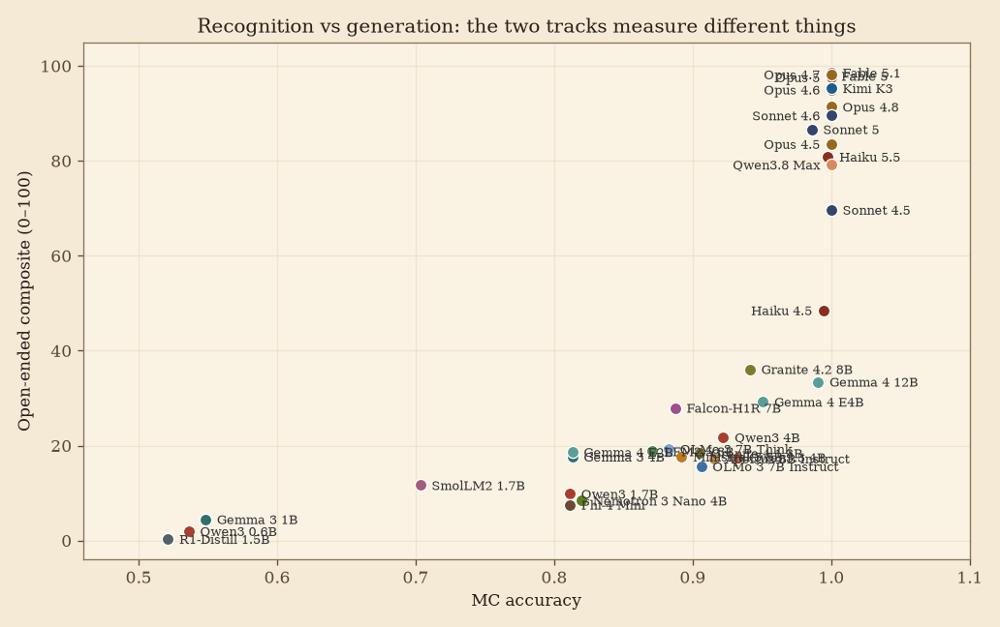
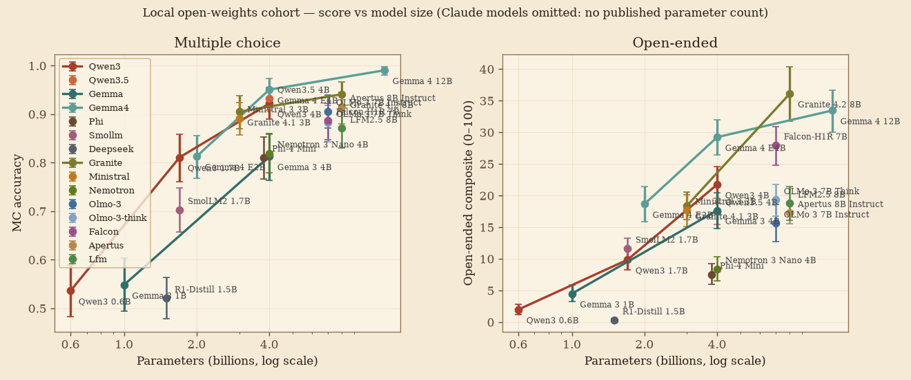
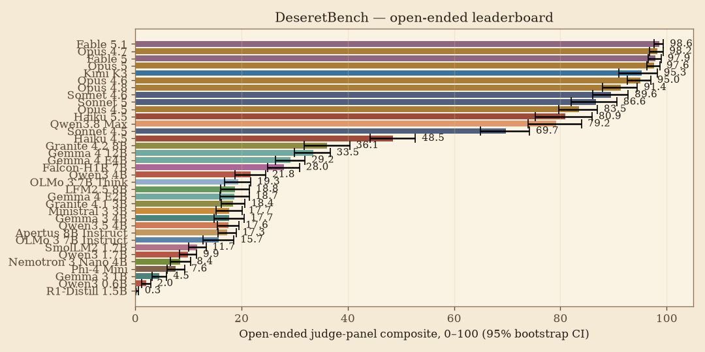
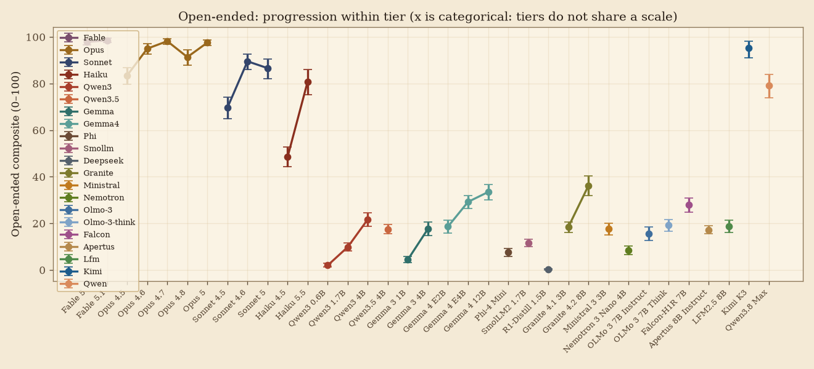
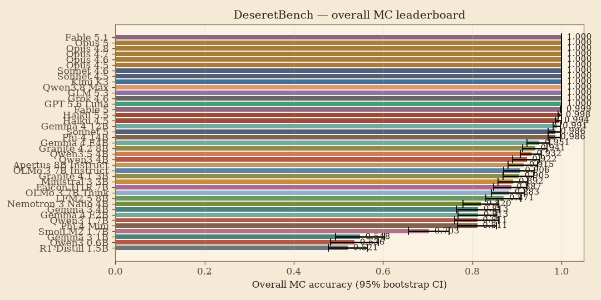
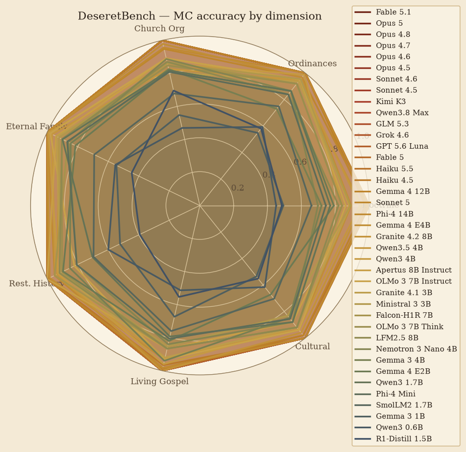
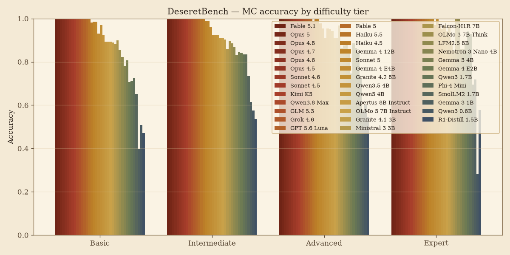
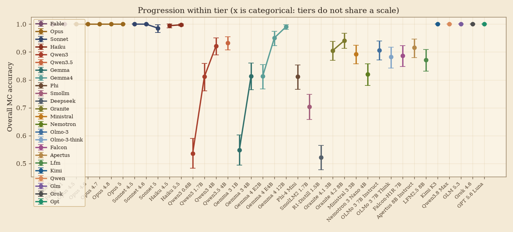

Run: runs/v0_1_plus · effort (MC=low (openai_compat models: provider default), open=high (openai_compat models: provider default), judge=medium) · runs (MC×2–5, open×2–3) · 100,000 bootstrap resamples · seed 19470417 · config provenance: run config_snapshot.json (per phase; live config fills phases without a snapshot)
| Rank | Model | Tier | Accuracy | 95% CI (bootstrap) | 95% CI (exact) | Parse-fail | Run SD | n items |
|---|---|---|---|---|---|---|---|---|
| 1 | Fable 5.1 | fable | 1.000 | [1.000, 1.000] | [0.983, 1.000] | 0.000 | 0.000 | 213 |
| 2 | Opus 5 | opus | 1.000 | [1.000, 1.000] | [0.983, 1.000] | 0.000 | 0.000 | 213 |
| 3 | Opus 4.8 | opus | 1.000 | [1.000, 1.000] | [0.983, 1.000] | 0.000 | 0.000 | 213 |
| 4 | Opus 4.7 | opus | 1.000 | [1.000, 1.000] | [0.983, 1.000] | 0.000 | 0.000 | 213 |
| 5 | Opus 4.6 | opus | 1.000 | [1.000, 1.000] | [0.983, 1.000] | 0.000 | 0.000 | 213 |
| 6 | Opus 4.5 | opus | 1.000 | [1.000, 1.000] | [0.983, 1.000] | 0.000 | 0.000 | 213 |
| 7 | Sonnet 4.6 | sonnet | 1.000 | [1.000, 1.000] | [0.983, 1.000] | 0.000 | 0.000 | 213 |
| 8 | Sonnet 4.5 | sonnet | 1.000 | [1.000, 1.000] | [0.983, 1.000] | 0.000 | 0.000 | 213 |
| 9 | Kimi K3 | kimi | 1.000 | [1.000, 1.000] | [0.983, 1.000] | 0.000 | 0.000 | 213 |
| 10 | Qwen3.8 Max | qwen | 1.000 | [1.000, 1.000] | [0.983, 1.000] | 0.000 | 0.000 | 213 |
| 11 | GLM 5.3 | glm | 1.000 | [1.000, 1.000] | [0.983, 1.000] | 0.000 | 0.000 | 213 |
| 12 | Grok 4.6 | grok | 1.000 | [1.000, 1.000] | [0.983, 1.000] | 0.000 | 0.000 | 213 |
| 13 | GPT 5.6 Luna | gpt | 1.000 | [1.000, 1.000] | [0.983, 1.000] | 0.000 | 0.000 | 213 |
| 14 | Fable 5 | fable | 0.999 | [0.997, 1.000] | [0.983, 1.000] | 0.000 | 0.002 | 213 |
| 15 | Haiku 5.5 | haiku | 0.998 | [0.993, 1.000] | [0.983, 1.000] | 0.000 | 0.003 | 213 |
| 16 | Haiku 4.5 | haiku | 0.994 | [0.987, 1.000] | [0.974, 1.000] | 0.000 | 0.007 | 213 |
| 17 | Gemma 4 12B | gemma4 | 0.991 | [0.981, 0.998] | [0.983, 1.000] | 0.000 | 0.013 | 213 |
| 18 | Sonnet 5 | sonnet | 0.986 | [0.970, 0.998] | [0.967, 0.999] | 0.000 | 0.007 | 213 |
| 19 | Phi-4 14B § (context 2,048) | phi | 0.986 | [0.969, 0.998] | [0.967, 0.999] | 0.000 | 0.007 | 213 |
| 20 | Gemma 4 E4B | gemma4 | 0.951 | [0.923, 0.974] | [0.940, 0.990] | 0.000 | 0.030 | 213 |
| 21 | Granite 4.2 8B | granite | 0.941 | [0.913, 0.967] | [0.933, 0.987] | 0.000 | 0.036 | 213 |
| 22 | Qwen3.5 4B | qwen3.5 | 0.932 | [0.908, 0.955] | [0.927, 0.984] | 0.001 | 0.083 | 213 |
| 23 | Qwen3 4B | qwen3 | 0.922 | [0.890, 0.951] | [0.886, 0.960] | 0.004 | 0.052 | 213 |
| 24 | Apertus 8B Instruct | apertus | 0.915 | [0.880, 0.946] | [0.915, 0.977] | 0.005 | 0.053 | 213 |
| 25 | OLMo 3 7B Instruct | olmo-3 | 0.906 | [0.871, 0.939] | [0.904, 0.971] | 0.000 | 0.053 | 213 |
| 26 | Granite 4.1 3B | granite | 0.905 | [0.869, 0.938] | [0.853, 0.938] | 0.004 | 0.050 | 213 |
| 27 | Ministral 3 3B | ministral | 0.892 | [0.857, 0.924] | [0.881, 0.957] | 0.046 | 0.091 | 213 |
| 28 | Falcon-H1R 7B | falcon | 0.887 | [0.847, 0.923] | [0.886, 0.960] | 0.002 | 0.060 | 213 |
| 29 | OLMo 3 7B Think | olmo-3-think | 0.883 | [0.843, 0.918] | [0.892, 0.964] | 0.000 | 0.073 | 213 |
| 30 | LFM2.5 8B | lfm | 0.871 | [0.831, 0.908] | [0.875, 0.953] | 0.002 | 0.070 | 213 |
| 31 | Nemotron 3 Nano 4B | nemotron | 0.820 | [0.779, 0.858] | [0.810, 0.907] | 0.005 | 0.162 | 213 |
| 32 | Gemma 3 4B | gemma | 0.813 | [0.764, 0.860] | [0.758, 0.866] | 0.024 | 0.064 | 213 |
| 33 | Gemma 4 E2B | gemma4 | 0.813 | [0.768, 0.855] | [0.789, 0.891] | 0.000 | 0.119 | 213 |
| 34 | Qwen3 1.7B | qwen3 | 0.811 | [0.761, 0.859] | [0.758, 0.866] | 0.000 | 0.047 | 213 |
| 35 | Phi-4 Mini | phi | 0.811 | [0.766, 0.854] | [0.784, 0.887] | 0.004 | 0.120 | 213 |
| 36 | SmolLM2 1.7B | smollm | 0.703 | [0.657, 0.748] | [0.682, 0.803] | 0.020 | 0.237 | 213 |
| 37 | Gemma 3 1B | gemma | 0.548 | [0.494, 0.603] | [0.484, 0.622] | 0.007 | 0.214 | 213 |
| 38 | Qwen3 0.6B | qwen3 | 0.536 | [0.483, 0.590] | [0.470, 0.608] | 0.114 | 0.228 | 213 |
| 39 | R1-Distill 1.5B | deepseek | 0.521 | [0.478, 0.564] | [0.480, 0.617] | 0.003 | 0.357 | 213 |
§ Measured with its own context window (tokens, shown beside the name), smaller than the window every other local model ran with: the model does not fit the test card at the shared size. Every item still fits the smaller window whole, and the window is the only setting that differs.
At a 100% ceiling the bootstrap interval degenerates to zero width; the exact (Clopper–Pearson) column is the honest one there.
Provenance audit: genuine served-model fallbacks=0 (excluded from scoring) · multi-key extraction artifacts=0 (kept; primary model verified by pricing) · failed calls=0 (excluded).
Item analysis: 213 items · mean difficulty p=0.8891 · mean discrimination=0.4828 (defined for only 204 items — the rest sit at the ceiling) · ceiling (p>.95)=67 · floor (p<.30)=0 · low-discrimination=3
| Model | Doctrine | Ordinances | Church Org | Eternal Family | Rest. History | Living Gospel | Cultural |
|---|---|---|---|---|---|---|---|
| Fable 5.1 | 1.00 | 1.00 | 1.00 | 1.00 | 1.00 | 1.00 | 1.00 |
| Opus 5 | 1.00 | 1.00 | 1.00 | 1.00 | 1.00 | 1.00 | 1.00 |
| Opus 4.8 | 1.00 | 1.00 | 1.00 | 1.00 | 1.00 | 1.00 | 1.00 |
| Opus 4.7 | 1.00 | 1.00 | 1.00 | 1.00 | 1.00 | 1.00 | 1.00 |
| Opus 4.6 | 1.00 | 1.00 | 1.00 | 1.00 | 1.00 | 1.00 | 1.00 |
| Opus 4.5 | 1.00 | 1.00 | 1.00 | 1.00 | 1.00 | 1.00 | 1.00 |
| Sonnet 4.6 | 1.00 | 1.00 | 1.00 | 1.00 | 1.00 | 1.00 | 1.00 |
| Sonnet 4.5 | 1.00 | 1.00 | 1.00 | 1.00 | 1.00 | 1.00 | 1.00 |
| Kimi K3 | 1.00 | 1.00 | 1.00 | 1.00 | 1.00 | 1.00 | 1.00 |
| Qwen3.8 Max | 1.00 | 1.00 | 1.00 | 1.00 | 1.00 | 1.00 | 1.00 |
| GLM 5.3 | 1.00 | 1.00 | 1.00 | 1.00 | 1.00 | 1.00 | 1.00 |
| Grok 4.6 | 1.00 | 1.00 | 1.00 | 1.00 | 1.00 | 1.00 | 1.00 |
| GPT 5.6 Luna | 1.00 | 1.00 | 1.00 | 1.00 | 1.00 | 1.00 | 1.00 |
| Fable 5 | 1.00 | 1.00 | 1.00 | 1.00 | 1.00 | 0.99 | 1.00 |
| Haiku 5.5 | 1.00 | 1.00 | 1.00 | 1.00 | 1.00 | 1.00 | 0.98 |
| Haiku 4.5 | 1.00 | 1.00 | 1.00 | 1.00 | 0.99 | 0.97 | 1.00 |
| Gemma 4 12B | 0.98 | 1.00 | 1.00 | 1.00 | 1.00 | 0.98 | 0.98 |
| Sonnet 5 | 0.99 | 0.97 | 0.95 | 1.00 | 1.00 | 0.99 | 1.00 |
| Phi-4 14B | 1.00 | 1.00 | 0.96 | 1.00 | 0.95 | 0.98 | 1.00 |
| Gemma 4 E4B | 0.89 | 0.97 | 0.98 | 1.00 | 0.98 | 0.93 | 0.94 |
| Granite 4.2 8B | 0.96 | 0.94 | 0.85 | 0.92 | 0.94 | 1.00 | 0.96 |
| Qwen3.5 4B | 0.94 | 0.95 | 0.83 | 0.97 | 0.95 | 0.93 | 0.94 |
| Qwen3 4B | 0.84 | 0.99 | 0.86 | 0.99 | 0.93 | 0.96 | 0.92 |
| Apertus 8B Instruct | 0.88 | 0.95 | 0.89 | 0.94 | 1.00 | 0.87 | 0.88 |
| OLMo 3 7B Instruct | 0.86 | 0.95 | 0.89 | 0.98 | 0.82 | 0.93 | 0.94 |
| Granite 4.1 3B | 0.89 | 0.94 | 0.81 | 0.94 | 0.92 | 0.92 | 0.92 |
| Ministral 3 3B | 0.89 | 0.95 | 0.86 | 0.92 | 0.92 | 0.85 | 0.83 |
| Falcon-H1R 7B | 0.84 | 0.92 | 0.87 | 0.87 | 0.95 | 0.87 | 0.92 |
| OLMo 3 7B Think | 0.84 | 0.92 | 0.85 | 0.90 | 0.90 | 0.87 | 0.92 |
| LFM2.5 8B | 0.82 | 0.84 | 0.87 | 0.90 | 0.92 | 0.87 | 0.92 |
| Nemotron 3 Nano 4B | 0.70 | 0.86 | 0.89 | 0.86 | 0.81 | 0.84 | 0.88 |
| Gemma 3 4B | 0.72 | 0.73 | 0.83 | 0.85 | 0.85 | 0.94 | 0.85 |
| Gemma 4 E2B | 0.79 | 0.86 | 0.82 | 0.82 | 0.90 | 0.82 | 0.67 |
| Qwen3 1.7B | 0.77 | 0.86 | 0.82 | 0.90 | 0.70 | 0.79 | 0.88 |
| Phi-4 Mini | 0.74 | 0.84 | 0.81 | 0.87 | 0.81 | 0.81 | 0.86 |
| SmolLM2 1.7B | 0.66 | 0.75 | 0.68 | 0.69 | 0.70 | 0.76 | 0.70 |
| Gemma 3 1B | 0.49 | 0.55 | 0.55 | 0.55 | 0.52 | 0.67 | 0.54 |
| Qwen3 0.6B | 0.45 | 0.59 | 0.47 | 0.55 | 0.60 | 0.51 | 0.62 |
| R1-Distill 1.5B | 0.49 | 0.58 | 0.70 | 0.45 | 0.39 | 0.55 | 0.55 |
| Model | Basic | Intermediate | Advanced | Expert |
|---|---|---|---|---|
| Fable 5.1 | 1.00 | 1.00 | 1.00 | 1.00 |
| Opus 5 | 1.00 | 1.00 | 1.00 | 1.00 |
| Opus 4.8 | 1.00 | 1.00 | 1.00 | 1.00 |
| Opus 4.7 | 1.00 | 1.00 | 1.00 | 1.00 |
| Opus 4.6 | 1.00 | 1.00 | 1.00 | 1.00 |
| Opus 4.5 | 1.00 | 1.00 | 1.00 | 1.00 |
| Sonnet 4.6 | 1.00 | 1.00 | 1.00 | 1.00 |
| Sonnet 4.5 | 1.00 | 1.00 | 1.00 | 1.00 |
| Kimi K3 | 1.00 | 1.00 | 1.00 | 1.00 |
| Qwen3.8 Max | 1.00 | 1.00 | 1.00 | 1.00 |
| GLM 5.3 | 1.00 | 1.00 | 1.00 | 1.00 |
| Grok 4.6 | 1.00 | 1.00 | 1.00 | 1.00 |
| GPT 5.6 Luna | 1.00 | 1.00 | 1.00 | 1.00 |
| Fable 5 | 1.00 | 1.00 | 1.00 | 1.00 |
| Haiku 5.5 | 1.00 | 1.00 | 0.99 | 1.00 |
| Haiku 4.5 | 0.98 | 1.00 | 1.00 | 1.00 |
| Gemma 4 12B | 0.98 | 0.99 | 1.00 | 1.00 |
| Sonnet 5 | 0.98 | 0.99 | 0.98 | 1.00 |
| Phi-4 14B | 0.98 | 0.99 | 0.99 | 1.00 |
| Gemma 4 E4B | 0.93 | 0.96 | 0.95 | 0.97 |
| Granite 4.2 8B | 0.97 | 0.93 | 0.91 | 1.00 |
| Qwen3.5 4B | 0.92 | 0.92 | 0.95 | 0.96 |
| Qwen3 4B | 0.89 | 0.92 | 0.95 | 0.95 |
| Apertus 8B Instruct | 0.89 | 0.91 | 0.94 | 0.97 |
| OLMo 3 7B Instruct | 0.89 | 0.91 | 0.91 | 0.94 |
| Granite 4.1 3B | 0.89 | 0.90 | 0.91 | 0.96 |
| Ministral 3 3B | 0.88 | 0.86 | 0.97 | 0.89 |
| Falcon-H1R 7B | 0.90 | 0.90 | 0.86 | 0.85 |
| OLMo 3 7B Think | 0.85 | 0.89 | 0.88 | 1.00 |
| LFM2.5 8B | 0.82 | 0.87 | 0.90 | 1.00 |
| Nemotron 3 Nano 4B | 0.78 | 0.83 | 0.84 | 0.86 |
| Gemma 3 4B | 0.81 | 0.84 | 0.75 | 0.86 |
| Gemma 4 E2B | 0.71 | 0.84 | 0.89 | 0.88 |
| Qwen3 1.7B | 0.71 | 0.83 | 0.86 | 0.94 |
| Phi-4 Mini | 0.73 | 0.83 | 0.85 | 0.93 |
| SmolLM2 1.7B | 0.65 | 0.73 | 0.72 | 0.69 |
| Gemma 3 1B | 0.40 | 0.61 | 0.58 | 0.72 |
| Qwen3 0.6B | 0.51 | 0.57 | 0.60 | 0.28 |
| R1-Distill 1.5B | 0.47 | 0.54 | 0.55 | 0.58 |
| A | B | Δ (A−B) | 95% CI | p (bootstrap) | p (Holm) | p (McNemar) | significant (Holm) |
|---|---|---|---|---|---|---|---|
| Fable 5.1 | R1-Distill 1.5B | +0.479 | [+0.436, +0.522] | 0.0000 | 0.0148 | 0.0000 | yes |
| Opus 5 | R1-Distill 1.5B | +0.479 | [+0.436, +0.522] | 0.0000 | 0.0148 | 0.0000 | yes |
| Opus 4.8 | R1-Distill 1.5B | +0.479 | [+0.436, +0.522] | 0.0000 | 0.0148 | 0.0000 | yes |
| Opus 4.7 | R1-Distill 1.5B | +0.479 | [+0.436, +0.522] | 0.0000 | 0.0148 | 0.0000 | yes |
| Opus 4.6 | R1-Distill 1.5B | +0.479 | [+0.436, +0.522] | 0.0000 | 0.0148 | 0.0000 | yes |
| Opus 4.5 | R1-Distill 1.5B | +0.479 | [+0.436, +0.522] | 0.0000 | 0.0148 | 0.0000 | yes |
| Sonnet 4.6 | R1-Distill 1.5B | +0.479 | [+0.436, +0.522] | 0.0000 | 0.0148 | 0.0000 | yes |
| Sonnet 4.5 | R1-Distill 1.5B | +0.479 | [+0.436, +0.522] | 0.0000 | 0.0148 | 0.0000 | yes |
| R1-Distill 1.5B | Kimi K3 | -0.479 | [-0.522, -0.436] | 0.0000 | 0.0148 | 0.0000 | yes |
| R1-Distill 1.5B | Qwen3.8 Max | -0.479 | [-0.523, -0.436] | 0.0000 | 0.0148 | 0.0000 | yes |
| R1-Distill 1.5B | GLM 5.3 | -0.479 | [-0.522, -0.436] | 0.0000 | 0.0148 | 0.0000 | yes |
| R1-Distill 1.5B | Grok 4.6 | -0.479 | [-0.522, -0.436] | 0.0000 | 0.0148 | 0.0000 | yes |
| R1-Distill 1.5B | GPT 5.6 Luna | -0.479 | [-0.523, -0.436] | 0.0000 | 0.0148 | 0.0000 | yes |
| Fable 5 | R1-Distill 1.5B | +0.478 | [+0.435, +0.521] | 0.0000 | 0.0148 | 0.0000 | yes |
| Haiku 5.5 | R1-Distill 1.5B | +0.476 | [+0.433, +0.520] | 0.0000 | 0.0148 | 0.0000 | yes |
| Haiku 4.5 | R1-Distill 1.5B | +0.473 | [+0.430, +0.516] | 0.0000 | 0.0148 | 0.0000 | yes |
| R1-Distill 1.5B | Gemma 4 12B | -0.469 | [-0.513, -0.426] | 0.0000 | 0.0148 | 0.0000 | yes |
| Sonnet 5 | R1-Distill 1.5B | +0.465 | [+0.419, +0.511] | 0.0000 | 0.0148 | 0.0000 | yes |
| R1-Distill 1.5B | Phi-4 14B | -0.465 | [-0.510, -0.421] | 0.0000 | 0.0148 | 0.0000 | yes |
| Fable 5.1 | Qwen3 0.6B | +0.464 | [+0.410, +0.517] | 0.0000 | 0.0148 | 0.0000 | yes |
| Opus 5 | Qwen3 0.6B | +0.464 | [+0.410, +0.517] | 0.0000 | 0.0148 | 0.0000 | yes |
| Opus 4.8 | Qwen3 0.6B | +0.464 | [+0.410, +0.517] | 0.0000 | 0.0148 | 0.0000 | yes |
| Opus 4.7 | Qwen3 0.6B | +0.464 | [+0.411, +0.517] | 0.0000 | 0.0148 | 0.0000 | yes |
| Opus 4.6 | Qwen3 0.6B | +0.464 | [+0.410, +0.517] | 0.0000 | 0.0148 | 0.0000 | yes |
| Opus 4.5 | Qwen3 0.6B | +0.464 | [+0.410, +0.517] | 0.0000 | 0.0148 | 0.0000 | yes |
| Sonnet 4.6 | Qwen3 0.6B | +0.464 | [+0.410, +0.517] | 0.0000 | 0.0148 | 0.0000 | yes |
| Sonnet 4.5 | Qwen3 0.6B | +0.464 | [+0.411, +0.517] | 0.0000 | 0.0148 | 0.0000 | yes |
| Qwen3 0.6B | Kimi K3 | -0.464 | [-0.517, -0.410] | 0.0000 | 0.0148 | 0.0000 | yes |
| Qwen3 0.6B | Qwen3.8 Max | -0.464 | [-0.517, -0.410] | 0.0000 | 0.0148 | 0.0000 | yes |
| Qwen3 0.6B | GLM 5.3 | -0.464 | [-0.517, -0.410] | 0.0000 | 0.0148 | 0.0000 | yes |
| Qwen3 0.6B | Grok 4.6 | -0.464 | [-0.516, -0.410] | 0.0000 | 0.0148 | 0.0000 | yes |
| Qwen3 0.6B | GPT 5.6 Luna | -0.464 | [-0.517, -0.411] | 0.0000 | 0.0148 | 0.0000 | yes |
| Fable 5 | Qwen3 0.6B | +0.463 | [+0.410, +0.516] | 0.0000 | 0.0148 | 0.0000 | yes |
| Haiku 5.5 | Qwen3 0.6B | +0.462 | [+0.408, +0.515] | 0.0000 | 0.0148 | 0.0000 | yes |
| Haiku 4.5 | Qwen3 0.6B | +0.458 | [+0.406, +0.512] | 0.0000 | 0.0148 | 0.0000 | yes |
| Qwen3 0.6B | Gemma 4 12B | -0.455 | [-0.507, -0.402] | 0.0000 | 0.0148 | 0.0000 | yes |
| Fable 5.1 | Gemma 3 1B | +0.452 | [+0.397, +0.506] | 0.0000 | 0.0148 | 0.0000 | yes |
| Opus 5 | Gemma 3 1B | +0.452 | [+0.398, +0.506] | 0.0000 | 0.0148 | 0.0000 | yes |
| Opus 4.8 | Gemma 3 1B | +0.452 | [+0.397, +0.506] | 0.0000 | 0.0148 | 0.0000 | yes |
| Opus 4.7 | Gemma 3 1B | +0.452 | [+0.397, +0.506] | 0.0000 | 0.0148 | 0.0000 | yes |
| Opus 4.6 | Gemma 3 1B | +0.452 | [+0.398, +0.506] | 0.0000 | 0.0148 | 0.0000 | yes |
| Opus 4.5 | Gemma 3 1B | +0.452 | [+0.397, +0.506] | 0.0000 | 0.0148 | 0.0000 | yes |
| Sonnet 4.6 | Gemma 3 1B | +0.452 | [+0.397, +0.505] | 0.0000 | 0.0148 | 0.0000 | yes |
| Sonnet 4.5 | Gemma 3 1B | +0.452 | [+0.398, +0.506] | 0.0000 | 0.0148 | 0.0000 | yes |
| Gemma 3 1B | Kimi K3 | -0.452 | [-0.506, -0.397] | 0.0000 | 0.0148 | 0.0000 | yes |
| Gemma 3 1B | Qwen3.8 Max | -0.452 | [-0.506, -0.397] | 0.0000 | 0.0148 | 0.0000 | yes |
| Gemma 3 1B | GLM 5.3 | -0.452 | [-0.506, -0.397] | 0.0000 | 0.0148 | 0.0000 | yes |
| Gemma 3 1B | Grok 4.6 | -0.452 | [-0.506, -0.397] | 0.0000 | 0.0148 | 0.0000 | yes |
| Gemma 3 1B | GPT 5.6 Luna | -0.452 | [-0.506, -0.397] | 0.0000 | 0.0148 | 0.0000 | yes |
| Fable 5 | Gemma 3 1B | +0.451 | [+0.396, +0.505] | 0.0000 | 0.0148 | 0.0000 | yes |
| Sonnet 5 | Qwen3 0.6B | +0.450 | [+0.395, +0.504] | 0.0000 | 0.0148 | 0.0000 | yes |
| Qwen3 0.6B | Phi-4 14B | -0.450 | [-0.504, -0.395] | 0.0000 | 0.0148 | 0.0000 | yes |
| Haiku 5.5 | Gemma 3 1B | +0.449 | [+0.395, +0.503] | 0.0000 | 0.0148 | 0.0000 | yes |
| Haiku 4.5 | Gemma 3 1B | +0.446 | [+0.393, +0.500] | 0.0000 | 0.0148 | 0.0000 | yes |
| Gemma 3 1B | Gemma 4 12B | -0.442 | [-0.497, -0.388] | 0.0000 | 0.0148 | 0.0000 | yes |
| Sonnet 5 | Gemma 3 1B | +0.438 | [+0.383, +0.492] | 0.0000 | 0.0148 | 0.0000 | yes |
| Gemma 3 1B | Phi-4 14B | -0.438 | [-0.492, -0.383] | 0.0000 | 0.0148 | 0.0000 | yes |
| R1-Distill 1.5B | Gemma 4 E4B | -0.430 | [-0.477, -0.382] | 0.0000 | 0.0148 | 0.0000 | yes |
| R1-Distill 1.5B | Granite 4.2 8B | -0.420 | [-0.469, -0.371] | 0.0000 | 0.0148 | 0.0000 | yes |
| Qwen3 0.6B | Gemma 4 E4B | -0.415 | [-0.472, -0.357] | 0.0000 | 0.0148 | 0.0000 | yes |
| R1-Distill 1.5B | Qwen3.5 4B | -0.411 | [-0.458, -0.364] | 0.0000 | 0.0148 | 0.0000 | yes |
| Qwen3 0.6B | Granite 4.2 8B | -0.405 | [-0.462, -0.347] | 0.0000 | 0.0148 | 0.0000 | yes |
| Gemma 3 1B | Gemma 4 E4B | -0.402 | [-0.459, -0.347] | 0.0000 | 0.0148 | 0.0000 | yes |
| R1-Distill 1.5B | Qwen3 4B | -0.401 | [-0.449, -0.351] | 0.0000 | 0.0148 | 0.0000 | yes |
| Qwen3 0.6B | Qwen3.5 4B | -0.396 | [-0.452, -0.341] | 0.0000 | 0.0148 | 0.0000 | yes |
| R1-Distill 1.5B | Apertus 8B Instruct | -0.394 | [-0.443, -0.345] | 0.0000 | 0.0148 | 0.0000 | yes |
| Gemma 3 1B | Granite 4.2 8B | -0.393 | [-0.448, -0.339] | 0.0000 | 0.0148 | 0.0000 | yes |
| Qwen3 0.6B | Qwen3 4B | -0.386 | [-0.441, -0.331] | 0.0000 | 0.0148 | 0.0000 | yes |
| R1-Distill 1.5B | OLMo 3 7B Instruct | -0.385 | [-0.433, -0.337] | 0.0000 | 0.0148 | 0.0000 | yes |
| Gemma 3 1B | Qwen3.5 4B | -0.384 | [-0.438, -0.331] | 0.0000 | 0.0148 | 0.0000 | yes |
| R1-Distill 1.5B | Granite 4.1 3B | -0.384 | [-0.433, -0.334] | 0.0000 | 0.0148 | 0.0000 | yes |
| Qwen3 0.6B | Apertus 8B Instruct | -0.379 | [-0.435, -0.324] | 0.0000 | 0.0148 | 0.0000 | yes |
| Gemma 3 1B | Qwen3 4B | -0.374 | [-0.429, -0.319] | 0.0000 | 0.0148 | 0.0000 | yes |
| R1-Distill 1.5B | Ministral 3 3B | -0.371 | [-0.422, -0.318] | 0.0000 | 0.0148 | 0.0000 | yes |
| Qwen3 0.6B | OLMo 3 7B Instruct | -0.370 | [-0.430, -0.310] | 0.0000 | 0.0148 | 0.0000 | yes |
| Qwen3 0.6B | Granite 4.1 3B | -0.369 | [-0.424, -0.314] | 0.0000 | 0.0148 | 0.0000 | yes |
| Gemma 3 1B | Apertus 8B Instruct | -0.367 | [-0.422, -0.313] | 0.0000 | 0.0148 | 0.0000 | yes |
| R1-Distill 1.5B | Falcon-H1R 7B | -0.366 | [-0.417, -0.315] | 0.0000 | 0.0148 | 0.0000 | yes |
| R1-Distill 1.5B | OLMo 3 7B Think | -0.361 | [-0.414, -0.309] | 0.0000 | 0.0148 | 0.0000 | yes |
| Gemma 3 1B | OLMo 3 7B Instruct | -0.358 | [-0.416, -0.299] | 0.0000 | 0.0148 | 0.0000 | yes |
| Gemma 3 1B | Granite 4.1 3B | -0.357 | [-0.410, -0.303] | 0.0000 | 0.0148 | 0.0000 | yes |
| Qwen3 0.6B | Ministral 3 3B | -0.356 | [-0.413, -0.299] | 0.0000 | 0.0148 | 0.0000 | yes |
| Qwen3 0.6B | Falcon-H1R 7B | -0.351 | [-0.411, -0.291] | 0.0000 | 0.0148 | 0.0000 | yes |
| R1-Distill 1.5B | LFM2.5 8B | -0.350 | [-0.400, -0.299] | 0.0000 | 0.0148 | 0.0000 | yes |
| Qwen3 0.6B | OLMo 3 7B Think | -0.346 | [-0.408, -0.284] | 0.0000 | 0.0148 | 0.0000 | yes |
| Gemma 3 1B | Ministral 3 3B | -0.344 | [-0.402, -0.285] | 0.0000 | 0.0148 | 0.0000 | yes |
| Gemma 3 1B | Falcon-H1R 7B | -0.339 | [-0.399, -0.279] | 0.0000 | 0.0148 | 0.0000 | yes |
| Qwen3 0.6B | LFM2.5 8B | -0.335 | [-0.394, -0.276] | 0.0000 | 0.0148 | 0.0000 | yes |
| Gemma 3 1B | OLMo 3 7B Think | -0.334 | [-0.392, -0.278] | 0.0000 | 0.0148 | 0.0000 | yes |
| Gemma 3 1B | LFM2.5 8B | -0.323 | [-0.380, -0.266] | 0.0000 | 0.0148 | 0.0000 | yes |
| R1-Distill 1.5B | Nemotron 3 Nano 4B | -0.299 | [-0.345, -0.252] | 0.0000 | 0.0148 | 0.0000 | yes |
| Fable 5.1 | SmolLM2 1.7B | +0.297 | [+0.253, +0.343] | 0.0000 | 0.0148 | 0.0000 | yes |
| Opus 5 | SmolLM2 1.7B | +0.297 | [+0.252, +0.343] | 0.0000 | 0.0148 | 0.0000 | yes |
| Opus 4.8 | SmolLM2 1.7B | +0.297 | [+0.252, +0.343] | 0.0000 | 0.0148 | 0.0000 | yes |
| Opus 4.7 | SmolLM2 1.7B | +0.297 | [+0.253, +0.343] | 0.0000 | 0.0148 | 0.0000 | yes |
| Opus 4.6 | SmolLM2 1.7B | +0.297 | [+0.252, +0.343] | 0.0000 | 0.0148 | 0.0000 | yes |
| Opus 4.5 | SmolLM2 1.7B | +0.297 | [+0.252, +0.343] | 0.0000 | 0.0148 | 0.0000 | yes |
| Sonnet 4.6 | SmolLM2 1.7B | +0.297 | [+0.252, +0.343] | 0.0000 | 0.0148 | 0.0000 | yes |
| Sonnet 4.5 | SmolLM2 1.7B | +0.297 | [+0.252, +0.343] | 0.0000 | 0.0148 | 0.0000 | yes |
| SmolLM2 1.7B | Kimi K3 | -0.297 | [-0.342, -0.252] | 0.0000 | 0.0148 | 0.0000 | yes |
| SmolLM2 1.7B | Qwen3.8 Max | -0.297 | [-0.343, -0.252] | 0.0000 | 0.0148 | 0.0000 | yes |
| SmolLM2 1.7B | GLM 5.3 | -0.297 | [-0.343, -0.252] | 0.0000 | 0.0148 | 0.0000 | yes |
| SmolLM2 1.7B | Grok 4.6 | -0.297 | [-0.343, -0.252] | 0.0000 | 0.0148 | 0.0000 | yes |
| SmolLM2 1.7B | GPT 5.6 Luna | -0.297 | [-0.343, -0.253] | 0.0000 | 0.0148 | 0.0000 | yes |
| Fable 5 | SmolLM2 1.7B | +0.296 | [+0.252, +0.342] | 0.0000 | 0.0148 | 0.0000 | yes |
| Haiku 5.5 | SmolLM2 1.7B | +0.294 | [+0.249, +0.340] | 0.0000 | 0.0148 | 0.0000 | yes |
| R1-Distill 1.5B | Gemma 3 4B | -0.292 | [-0.347, -0.236] | 0.0000 | 0.0148 | 0.0000 | yes |
| R1-Distill 1.5B | Gemma 4 E2B | -0.292 | [-0.344, -0.240] | 0.0000 | 0.0148 | 0.0000 | yes |
| Haiku 4.5 | SmolLM2 1.7B | +0.291 | [+0.247, +0.337] | 0.0000 | 0.0148 | 0.0000 | yes |
| R1-Distill 1.5B | Qwen3 1.7B | -0.290 | [-0.345, -0.235] | 0.0000 | 0.0148 | 0.0000 | yes |
| R1-Distill 1.5B | Phi-4 Mini | -0.290 | [-0.339, -0.240] | 0.0000 | 0.0148 | 0.0000 | yes |
| SmolLM2 1.7B | Gemma 4 12B | -0.287 | [-0.333, -0.243] | 0.0000 | 0.0148 | 0.0000 | yes |
| Qwen3 0.6B | Nemotron 3 Nano 4B | -0.284 | [-0.341, -0.226] | 0.0000 | 0.0148 | 0.0000 | yes |
| Sonnet 5 | SmolLM2 1.7B | +0.283 | [+0.237, +0.330] | 0.0000 | 0.0148 | 0.0000 | yes |
| SmolLM2 1.7B | Phi-4 14B | -0.283 | [-0.328, -0.238] | 0.0000 | 0.0148 | 0.0000 | yes |
| Qwen3 0.6B | Gemma 3 4B | -0.277 | [-0.338, -0.216] | 0.0000 | 0.0148 | 0.0000 | yes |
| Qwen3 0.6B | Gemma 4 E2B | -0.277 | [-0.334, -0.220] | 0.0000 | 0.0148 | 0.0000 | yes |
| Qwen3 0.6B | Qwen3 1.7B | -0.275 | [-0.342, -0.207] | 0.0000 | 0.0148 | 0.0000 | yes |
| Qwen3 0.6B | Phi-4 Mini | -0.275 | [-0.333, -0.216] | 0.0000 | 0.0148 | 0.0000 | yes |
| Gemma 3 1B | Nemotron 3 Nano 4B | -0.271 | [-0.328, -0.215] | 0.0000 | 0.0148 | 0.0000 | yes |
| Gemma 3 1B | Gemma 3 4B | -0.265 | [-0.321, -0.209] | 0.0000 | 0.0148 | 0.0000 | yes |
| Gemma 3 1B | Gemma 4 E2B | -0.265 | [-0.318, -0.211] | 0.0000 | 0.0148 | 0.0000 | yes |
| Gemma 3 1B | Qwen3 1.7B | -0.263 | [-0.327, -0.199] | 0.0000 | 0.0148 | 0.0000 | yes |
| Gemma 3 1B | Phi-4 Mini | -0.263 | [-0.316, -0.209] | 0.0000 | 0.0148 | 0.0000 | yes |
| SmolLM2 1.7B | Gemma 4 E4B | -0.247 | [-0.293, -0.202] | 0.0000 | 0.0148 | 0.0000 | yes |
| SmolLM2 1.7B | Granite 4.2 8B | -0.238 | [-0.285, -0.192] | 0.0000 | 0.0148 | 0.0000 | yes |
| SmolLM2 1.7B | Qwen3.5 4B | -0.229 | [-0.273, -0.186] | 0.0000 | 0.0148 | 0.0000 | yes |
| SmolLM2 1.7B | Qwen3 4B | -0.219 | [-0.265, -0.174] | 0.0000 | 0.0148 | 0.0000 | yes |
| SmolLM2 1.7B | Apertus 8B Instruct | -0.212 | [-0.261, -0.165] | 0.0000 | 0.0148 | 0.0000 | yes |
| SmolLM2 1.7B | OLMo 3 7B Instruct | -0.203 | [-0.250, -0.156] | 0.0000 | 0.0148 | 0.0000 | yes |
| SmolLM2 1.7B | Granite 4.1 3B | -0.202 | [-0.253, -0.151] | 0.0000 | 0.0148 | 0.0000 | yes |
| Fable 5.1 | Qwen3 1.7B | +0.189 | [+0.141, +0.239] | 0.0000 | 0.0148 | 0.0000 | yes |
| Fable 5.1 | Phi-4 Mini | +0.189 | [+0.145, +0.234] | 0.0000 | 0.0148 | 0.0000 | yes |
| Opus 5 | Qwen3 1.7B | +0.189 | [+0.141, +0.239] | 0.0000 | 0.0148 | 0.0000 | yes |
| Opus 5 | Phi-4 Mini | +0.189 | [+0.145, +0.234] | 0.0000 | 0.0148 | 0.0000 | yes |
| Opus 4.8 | Qwen3 1.7B | +0.189 | [+0.141, +0.239] | 0.0000 | 0.0148 | 0.0000 | yes |
| Opus 4.8 | Phi-4 Mini | +0.189 | [+0.146, +0.234] | 0.0000 | 0.0148 | 0.0000 | yes |
| Opus 4.7 | Qwen3 1.7B | +0.189 | [+0.141, +0.239] | 0.0000 | 0.0148 | 0.0000 | yes |
| Opus 4.7 | Phi-4 Mini | +0.189 | [+0.146, +0.234] | 0.0000 | 0.0148 | 0.0000 | yes |
| Opus 4.6 | Qwen3 1.7B | +0.189 | [+0.141, +0.239] | 0.0000 | 0.0148 | 0.0000 | yes |
| Opus 4.6 | Phi-4 Mini | +0.189 | [+0.146, +0.234] | 0.0000 | 0.0148 | 0.0000 | yes |
| Opus 4.5 | Qwen3 1.7B | +0.189 | [+0.141, +0.239] | 0.0000 | 0.0148 | 0.0000 | yes |
| Opus 4.5 | Phi-4 Mini | +0.189 | [+0.146, +0.234] | 0.0000 | 0.0148 | 0.0000 | yes |
| Sonnet 4.6 | Qwen3 1.7B | +0.189 | [+0.141, +0.239] | 0.0000 | 0.0148 | 0.0000 | yes |
| Sonnet 4.6 | Phi-4 Mini | +0.189 | [+0.146, +0.234] | 0.0000 | 0.0148 | 0.0000 | yes |
| Sonnet 4.5 | Qwen3 1.7B | +0.189 | [+0.141, +0.239] | 0.0000 | 0.0148 | 0.0000 | yes |
| Sonnet 4.5 | Phi-4 Mini | +0.189 | [+0.145, +0.234] | 0.0000 | 0.0148 | 0.0000 | yes |
| Qwen3 1.7B | Kimi K3 | -0.189 | [-0.239, -0.141] | 0.0000 | 0.0148 | 0.0000 | yes |
| Qwen3 1.7B | Qwen3.8 Max | -0.189 | [-0.239, -0.141] | 0.0000 | 0.0148 | 0.0000 | yes |
| Qwen3 1.7B | GLM 5.3 | -0.189 | [-0.239, -0.141] | 0.0000 | 0.0148 | 0.0000 | yes |
| Qwen3 1.7B | Grok 4.6 | -0.189 | [-0.238, -0.141] | 0.0000 | 0.0148 | 0.0000 | yes |
| Qwen3 1.7B | GPT 5.6 Luna | -0.189 | [-0.239, -0.141] | 0.0000 | 0.0148 | 0.0000 | yes |
| SmolLM2 1.7B | Ministral 3 3B | -0.189 | [-0.239, -0.139] | 0.0000 | 0.0148 | 0.0000 | yes |
| Phi-4 Mini | Kimi K3 | -0.189 | [-0.234, -0.146] | 0.0000 | 0.0148 | 0.0000 | yes |
| Phi-4 Mini | Qwen3.8 Max | -0.189 | [-0.234, -0.146] | 0.0000 | 0.0148 | 0.0000 | yes |
| Phi-4 Mini | GLM 5.3 | -0.189 | [-0.234, -0.145] | 0.0000 | 0.0148 | 0.0000 | yes |
| Phi-4 Mini | Grok 4.6 | -0.189 | [-0.234, -0.146] | 0.0000 | 0.0148 | 0.0000 | yes |
| Phi-4 Mini | GPT 5.6 Luna | -0.189 | [-0.234, -0.145] | 0.0000 | 0.0148 | 0.0000 | yes |
| Fable 5 | Qwen3 1.7B | +0.188 | [+0.140, +0.238] | 0.0000 | 0.0148 | 0.0000 | yes |
| Fable 5 | Phi-4 Mini | +0.188 | [+0.145, +0.233] | 0.0000 | 0.0148 | 0.0000 | yes |
| Fable 5.1 | Gemma 3 4B | +0.187 | [+0.140, +0.237] | 0.0000 | 0.0148 | 0.0000 | yes |
| Fable 5.1 | Gemma 4 E2B | +0.187 | [+0.145, +0.232] | 0.0000 | 0.0148 | 0.0000 | yes |
| Opus 5 | Gemma 3 4B | +0.187 | [+0.140, +0.236] | 0.0000 | 0.0148 | 0.0000 | yes |
| Opus 5 | Gemma 4 E2B | +0.187 | [+0.145, +0.232] | 0.0000 | 0.0148 | 0.0000 | yes |
| Opus 4.8 | Gemma 3 4B | +0.187 | [+0.140, +0.237] | 0.0000 | 0.0148 | 0.0000 | yes |
| Opus 4.8 | Gemma 4 E2B | +0.187 | [+0.145, +0.232] | 0.0000 | 0.0148 | 0.0000 | yes |
| Opus 4.7 | Gemma 3 4B | +0.187 | [+0.141, +0.236] | 0.0000 | 0.0148 | 0.0000 | yes |
| Opus 4.7 | Gemma 4 E2B | +0.187 | [+0.145, +0.232] | 0.0000 | 0.0148 | 0.0000 | yes |
| Opus 4.6 | Gemma 3 4B | +0.187 | [+0.140, +0.236] | 0.0000 | 0.0148 | 0.0000 | yes |
| Opus 4.6 | Gemma 4 E2B | +0.187 | [+0.145, +0.231] | 0.0000 | 0.0148 | 0.0000 | yes |
| Opus 4.5 | Gemma 3 4B | +0.187 | [+0.140, +0.237] | 0.0000 | 0.0148 | 0.0000 | yes |
| Opus 4.5 | Gemma 4 E2B | +0.187 | [+0.145, +0.232] | 0.0000 | 0.0148 | 0.0000 | yes |
| Sonnet 4.6 | Gemma 3 4B | +0.187 | [+0.140, +0.237] | 0.0000 | 0.0148 | 0.0000 | yes |
| Sonnet 4.6 | Gemma 4 E2B | +0.187 | [+0.145, +0.231] | 0.0000 | 0.0148 | 0.0000 | yes |
| Sonnet 4.5 | Gemma 3 4B | +0.187 | [+0.140, +0.236] | 0.0000 | 0.0148 | 0.0000 | yes |
| Sonnet 4.5 | Gemma 4 E2B | +0.187 | [+0.145, +0.231] | 0.0000 | 0.0148 | 0.0000 | yes |
| Gemma 3 4B | Kimi K3 | -0.187 | [-0.236, -0.140] | 0.0000 | 0.0148 | 0.0000 | yes |
| Gemma 3 4B | Qwen3.8 Max | -0.187 | [-0.236, -0.140] | 0.0000 | 0.0148 | 0.0000 | yes |
| Gemma 3 4B | GLM 5.3 | -0.187 | [-0.237, -0.140] | 0.0000 | 0.0148 | 0.0000 | yes |
| Gemma 3 4B | Grok 4.6 | -0.187 | [-0.236, -0.140] | 0.0000 | 0.0148 | 0.0000 | yes |
| Gemma 3 4B | GPT 5.6 Luna | -0.187 | [-0.236, -0.140] | 0.0000 | 0.0148 | 0.0000 | yes |
| Gemma 4 E2B | Kimi K3 | -0.187 | [-0.232, -0.145] | 0.0000 | 0.0148 | 0.0000 | yes |
| Gemma 4 E2B | Qwen3.8 Max | -0.187 | [-0.231, -0.145] | 0.0000 | 0.0148 | 0.0000 | yes |
| Gemma 4 E2B | GLM 5.3 | -0.187 | [-0.232, -0.145] | 0.0000 | 0.0148 | 0.0000 | yes |
| Gemma 4 E2B | Grok 4.6 | -0.187 | [-0.231, -0.145] | 0.0000 | 0.0148 | 0.0000 | yes |
| Gemma 4 E2B | GPT 5.6 Luna | -0.187 | [-0.232, -0.145] | 0.0000 | 0.0148 | 0.0000 | yes |
| Haiku 5.5 | Qwen3 1.7B | +0.186 | [+0.138, +0.238] | 0.0000 | 0.0148 | 0.0000 | yes |
| Haiku 5.5 | Phi-4 Mini | +0.186 | [+0.144, +0.231] | 0.0000 | 0.0148 | 0.0000 | yes |
| Fable 5 | Gemma 3 4B | +0.186 | [+0.139, +0.235] | 0.0000 | 0.0148 | 0.0000 | yes |
| Fable 5 | Gemma 4 E2B | +0.186 | [+0.144, +0.230] | 0.0000 | 0.0148 | 0.0000 | yes |
| Haiku 5.5 | Gemma 3 4B | +0.184 | [+0.139, +0.233] | 0.0000 | 0.0148 | 0.0000 | yes |
| Haiku 5.5 | Gemma 4 E2B | +0.184 | [+0.143, +0.229] | 0.0000 | 0.0148 | 0.0000 | yes |
| SmolLM2 1.7B | Falcon-H1R 7B | -0.184 | [-0.235, -0.134] | 0.0000 | 0.0148 | 0.0000 | yes |
| Haiku 4.5 | Qwen3 1.7B | +0.183 | [+0.136, +0.233] | 0.0000 | 0.0148 | 0.0000 | yes |
| Haiku 4.5 | Phi-4 Mini | +0.183 | [+0.142, +0.226] | 0.0000 | 0.0148 | 0.0000 | yes |
| R1-Distill 1.5B | SmolLM2 1.7B | -0.182 | [-0.237, -0.128] | 0.0000 | 0.0148 | 0.0000 | yes |
| Haiku 4.5 | Gemma 3 4B | +0.181 | [+0.134, +0.231] | 0.0000 | 0.0148 | 0.0000 | yes |
| Haiku 4.5 | Gemma 4 E2B | +0.181 | [+0.140, +0.225] | 0.0000 | 0.0148 | 0.0000 | yes |
| Fable 5.1 | Nemotron 3 Nano 4B | +0.180 | [+0.142, +0.221] | 0.0000 | 0.0148 | 0.0000 | yes |
| Opus 5 | Nemotron 3 Nano 4B | +0.180 | [+0.142, +0.221] | 0.0000 | 0.0148 | 0.0000 | yes |
| Opus 4.8 | Nemotron 3 Nano 4B | +0.180 | [+0.142, +0.221] | 0.0000 | 0.0148 | 0.0000 | yes |
| Opus 4.7 | Nemotron 3 Nano 4B | +0.180 | [+0.142, +0.221] | 0.0000 | 0.0148 | 0.0000 | yes |
| Opus 4.6 | Nemotron 3 Nano 4B | +0.180 | [+0.142, +0.221] | 0.0000 | 0.0148 | 0.0000 | yes |
| Opus 4.5 | Nemotron 3 Nano 4B | +0.180 | [+0.142, +0.221] | 0.0000 | 0.0148 | 0.0000 | yes |
| Sonnet 4.6 | Nemotron 3 Nano 4B | +0.180 | [+0.142, +0.221] | 0.0000 | 0.0148 | 0.0000 | yes |
| Sonnet 4.5 | Nemotron 3 Nano 4B | +0.180 | [+0.142, +0.221] | 0.0000 | 0.0148 | 0.0000 | yes |
| Nemotron 3 Nano 4B | Kimi K3 | -0.180 | [-0.221, -0.142] | 0.0000 | 0.0148 | 0.0000 | yes |
| Nemotron 3 Nano 4B | Qwen3.8 Max | -0.180 | [-0.221, -0.143] | 0.0000 | 0.0148 | 0.0000 | yes |
| Nemotron 3 Nano 4B | GLM 5.3 | -0.180 | [-0.221, -0.142] | 0.0000 | 0.0148 | 0.0000 | yes |
| Nemotron 3 Nano 4B | Grok 4.6 | -0.180 | [-0.221, -0.142] | 0.0000 | 0.0148 | 0.0000 | yes |
| Nemotron 3 Nano 4B | GPT 5.6 Luna | -0.180 | [-0.222, -0.142] | 0.0000 | 0.0148 | 0.0000 | yes |
| Fable 5 | Nemotron 3 Nano 4B | +0.179 | [+0.142, +0.220] | 0.0000 | 0.0148 | 0.0000 | yes |
| Qwen3 1.7B | Gemma 4 12B | -0.179 | [-0.230, -0.132] | 0.0000 | 0.0148 | 0.0000 | yes |
| SmolLM2 1.7B | OLMo 3 7B Think | -0.179 | [-0.231, -0.129] | 0.0000 | 0.0148 | 0.0000 | yes |
| Phi-4 Mini | Gemma 4 12B | -0.179 | [-0.223, -0.139] | 0.0000 | 0.0148 | 0.0000 | yes |
| Haiku 5.5 | Nemotron 3 Nano 4B | +0.178 | [+0.139, +0.219] | 0.0000 | 0.0148 | 0.0000 | yes |
| Gemma 3 4B | Gemma 4 12B | -0.177 | [-0.227, -0.131] | 0.0000 | 0.0148 | 0.0000 | yes |
| Gemma 4 E2B | Gemma 4 12B | -0.177 | [-0.220, -0.136] | 0.0000 | 0.0148 | 0.0000 | yes |
| Sonnet 5 | Qwen3 1.7B | +0.175 | [+0.128, +0.224] | 0.0000 | 0.0148 | 0.0000 | yes |
| Sonnet 5 | Phi-4 Mini | +0.175 | [+0.132, +0.220] | 0.0000 | 0.0148 | 0.0000 | yes |
| Haiku 4.5 | Nemotron 3 Nano 4B | +0.175 | [+0.138, +0.214] | 0.0000 | 0.0148 | 0.0000 | yes |
| Qwen3 1.7B | Phi-4 14B | -0.175 | [-0.226, -0.126] | 0.0000 | 0.0148 | 0.0000 | yes |
| Phi-4 Mini | Phi-4 14B | -0.175 | [-0.218, -0.133] | 0.0000 | 0.0148 | 0.0000 | yes |
| Sonnet 5 | Gemma 3 4B | +0.173 | [+0.128, +0.221] | 0.0000 | 0.0148 | 0.0000 | yes |
| Sonnet 5 | Gemma 4 E2B | +0.173 | [+0.130, +0.218] | 0.0000 | 0.0148 | 0.0000 | yes |
| Gemma 3 4B | Phi-4 14B | -0.173 | [-0.222, -0.127] | 0.0000 | 0.0148 | 0.0000 | yes |
| Gemma 4 E2B | Phi-4 14B | -0.173 | [-0.218, -0.130] | 0.0000 | 0.0148 | 0.0000 | yes |
| Nemotron 3 Nano 4B | Gemma 4 12B | -0.171 | [-0.210, -0.134] | 0.0000 | 0.0148 | 0.0000 | yes |
| SmolLM2 1.7B | LFM2.5 8B | -0.168 | [-0.217, -0.119] | 0.0000 | 0.0148 | 0.0000 | yes |
| Qwen3 0.6B | SmolLM2 1.7B | -0.167 | [-0.232, -0.101] | 0.0000 | 0.0148 | 0.0000 | yes |
| Sonnet 5 | Nemotron 3 Nano 4B | +0.166 | [+0.128, +0.207] | 0.0000 | 0.0148 | 0.0000 | yes |
| Nemotron 3 Nano 4B | Phi-4 14B | -0.166 | [-0.207, -0.127] | 0.0000 | 0.0148 | 0.0000 | yes |
| Gemma 3 1B | SmolLM2 1.7B | -0.155 | [-0.214, -0.095] | 0.0000 | 0.0148 | 0.0000 | yes |
| Qwen3 1.7B | Gemma 4 E4B | -0.139 | [-0.187, -0.094] | 0.0000 | 0.0148 | 0.0000 | yes |
| Phi-4 Mini | Gemma 4 E4B | -0.139 | [-0.183, -0.098] | 0.0000 | 0.0148 | 0.0000 | yes |
| Gemma 3 4B | Gemma 4 E4B | -0.138 | [-0.185, -0.092] | 0.0000 | 0.0148 | 0.0000 | yes |
| Gemma 4 E2B | Gemma 4 E4B | -0.138 | [-0.180, -0.096] | 0.0000 | 0.0148 | 0.0000 | yes |
| Nemotron 3 Nano 4B | Gemma 4 E4B | -0.131 | [-0.166, -0.098] | 0.0000 | 0.0148 | 0.0000 | yes |
| Qwen3 1.7B | Granite 4.2 8B | -0.130 | [-0.184, -0.078] | 0.0000 | 0.0148 | 0.0000 | yes |
| Phi-4 Mini | Granite 4.2 8B | -0.130 | [-0.177, -0.085] | 0.0000 | 0.0148 | 0.0000 | yes |
| Fable 5.1 | LFM2.5 8B | +0.129 | [+0.091, +0.171] | 0.0000 | 0.0148 | 0.0000 | yes |
| Opus 5 | LFM2.5 8B | +0.129 | [+0.091, +0.169] | 0.0000 | 0.0148 | 0.0000 | yes |
| Opus 4.8 | LFM2.5 8B | +0.129 | [+0.091, +0.169] | 0.0000 | 0.0148 | 0.0000 | yes |
| Opus 4.7 | LFM2.5 8B | +0.129 | [+0.091, +0.171] | 0.0000 | 0.0148 | 0.0000 | yes |
| Opus 4.6 | LFM2.5 8B | +0.129 | [+0.091, +0.169] | 0.0000 | 0.0148 | 0.0000 | yes |
| Opus 4.5 | LFM2.5 8B | +0.129 | [+0.091, +0.171] | 0.0000 | 0.0148 | 0.0000 | yes |
| Sonnet 4.6 | LFM2.5 8B | +0.129 | [+0.091, +0.171] | 0.0000 | 0.0148 | 0.0000 | yes |
| Sonnet 4.5 | LFM2.5 8B | +0.129 | [+0.091, +0.169] | 0.0000 | 0.0148 | 0.0000 | yes |
| LFM2.5 8B | Kimi K3 | -0.129 | [-0.171, -0.091] | 0.0000 | 0.0148 | 0.0000 | yes |
| LFM2.5 8B | Qwen3.8 Max | -0.129 | [-0.171, -0.091] | 0.0000 | 0.0148 | 0.0000 | yes |
| LFM2.5 8B | GLM 5.3 | -0.129 | [-0.171, -0.091] | 0.0000 | 0.0148 | 0.0000 | yes |
| LFM2.5 8B | Grok 4.6 | -0.129 | [-0.171, -0.091] | 0.0000 | 0.0148 | 0.0000 | yes |
| LFM2.5 8B | GPT 5.6 Luna | -0.129 | [-0.169, -0.091] | 0.0000 | 0.0148 | 0.0000 | yes |
| Fable 5 | LFM2.5 8B | +0.128 | [+0.091, +0.169] | 0.0000 | 0.0148 | 0.0000 | yes |
| Gemma 3 4B | Granite 4.2 8B | -0.128 | [-0.178, -0.080] | 0.0000 | 0.0148 | 0.0000 | yes |
| Gemma 4 E2B | Granite 4.2 8B | -0.128 | [-0.175, -0.083] | 0.0000 | 0.0148 | 0.0000 | yes |
| Haiku 5.5 | LFM2.5 8B | +0.127 | [+0.089, +0.169] | 0.0000 | 0.0148 | 0.0000 | yes |
| Haiku 4.5 | LFM2.5 8B | +0.123 | [+0.086, +0.163] | 0.0000 | 0.0148 | 0.0000 | yes |
| Nemotron 3 Nano 4B | Granite 4.2 8B | -0.122 | [-0.165, -0.079] | 0.0000 | 0.0148 | 0.0001 | yes |
| Qwen3 1.7B | Qwen3.5 4B | -0.121 | [-0.168, -0.077] | 0.0000 | 0.0148 | 0.0000 | yes |
| Phi-4 Mini | Qwen3.5 4B | -0.121 | [-0.162, -0.082] | 0.0000 | 0.0148 | 0.0000 | yes |
| LFM2.5 8B | Gemma 4 12B | -0.120 | [-0.160, -0.082] | 0.0000 | 0.0148 | 0.0000 | yes |
| Gemma 3 4B | Qwen3.5 4B | -0.119 | [-0.166, -0.074] | 0.0000 | 0.0148 | 0.0000 | yes |
| Qwen3.5 4B | Gemma 4 E2B | +0.119 | [+0.079, +0.162] | 0.0000 | 0.0148 | 0.0000 | yes |
| Fable 5.1 | OLMo 3 7B Think | +0.117 | [+0.082, +0.157] | 0.0000 | 0.0148 | 0.0001 | yes |
| Opus 5 | OLMo 3 7B Think | +0.117 | [+0.082, +0.155] | 0.0000 | 0.0148 | 0.0001 | yes |
| Opus 4.8 | OLMo 3 7B Think | +0.117 | [+0.082, +0.157] | 0.0000 | 0.0148 | 0.0001 | yes |
| Opus 4.7 | OLMo 3 7B Think | +0.117 | [+0.082, +0.155] | 0.0000 | 0.0148 | 0.0001 | yes |
| Opus 4.6 | OLMo 3 7B Think | +0.117 | [+0.082, +0.155] | 0.0000 | 0.0148 | 0.0001 | yes |
| Opus 4.5 | OLMo 3 7B Think | +0.117 | [+0.082, +0.155] | 0.0000 | 0.0148 | 0.0001 | yes |
| Sonnet 4.6 | OLMo 3 7B Think | +0.117 | [+0.082, +0.155] | 0.0000 | 0.0148 | 0.0001 | yes |
| Sonnet 4.5 | OLMo 3 7B Think | +0.117 | [+0.082, +0.157] | 0.0000 | 0.0148 | 0.0001 | yes |
| OLMo 3 7B Think | Kimi K3 | -0.117 | [-0.157, -0.082] | 0.0000 | 0.0148 | 0.0001 | yes |
| OLMo 3 7B Think | Qwen3.8 Max | -0.117 | [-0.157, -0.082] | 0.0000 | 0.0148 | 0.0001 | yes |
| OLMo 3 7B Think | GLM 5.3 | -0.117 | [-0.155, -0.082] | 0.0000 | 0.0148 | 0.0001 | yes |
| OLMo 3 7B Think | Grok 4.6 | -0.117 | [-0.155, -0.082] | 0.0000 | 0.0148 | 0.0001 | yes |
| OLMo 3 7B Think | GPT 5.6 Luna | -0.117 | [-0.155, -0.082] | 0.0000 | 0.0148 | 0.0001 | yes |
| Fable 5 | OLMo 3 7B Think | +0.116 | [+0.081, +0.155] | 0.0000 | 0.0148 | 0.0001 | yes |
| SmolLM2 1.7B | Nemotron 3 Nano 4B | -0.116 | [-0.164, -0.069] | 0.0000 | 0.0148 | 0.0006 | yes |
| Haiku 5.5 | OLMo 3 7B Think | +0.115 | [+0.080, +0.153] | 0.0000 | 0.0148 | 0.0001 | yes |
| Sonnet 5 | LFM2.5 8B | +0.115 | [+0.079, +0.153] | 0.0000 | 0.0148 | 0.0001 | yes |
| LFM2.5 8B | Phi-4 14B | -0.115 | [-0.157, -0.077] | 0.0000 | 0.0148 | 0.0003 | yes |
| Fable 5.1 | Falcon-H1R 7B | +0.113 | [+0.077, +0.153] | 0.0000 | 0.0148 | 0.0001 | yes |
| Opus 5 | Falcon-H1R 7B | +0.113 | [+0.077, +0.153] | 0.0000 | 0.0148 | 0.0001 | yes |
| Opus 4.8 | Falcon-H1R 7B | +0.113 | [+0.077, +0.153] | 0.0000 | 0.0148 | 0.0001 | yes |
| Opus 4.7 | Falcon-H1R 7B | +0.113 | [+0.077, +0.153] | 0.0000 | 0.0148 | 0.0001 | yes |
| Opus 4.6 | Falcon-H1R 7B | +0.113 | [+0.077, +0.153] | 0.0000 | 0.0148 | 0.0001 | yes |
| Opus 4.5 | Falcon-H1R 7B | +0.113 | [+0.077, +0.153] | 0.0000 | 0.0148 | 0.0001 | yes |
| Sonnet 4.6 | Falcon-H1R 7B | +0.113 | [+0.077, +0.153] | 0.0000 | 0.0148 | 0.0001 | yes |
| Sonnet 4.5 | Falcon-H1R 7B | +0.113 | [+0.077, +0.153] | 0.0000 | 0.0148 | 0.0001 | yes |
| Qwen3.5 4B | Nemotron 3 Nano 4B | +0.113 | [+0.076, +0.151] | 0.0000 | 0.0148 | 0.0002 | yes |
| Falcon-H1R 7B | Kimi K3 | -0.113 | [-0.153, -0.077] | 0.0000 | 0.0148 | 0.0001 | yes |
| Falcon-H1R 7B | Qwen3.8 Max | -0.113 | [-0.153, -0.075] | 0.0000 | 0.0148 | 0.0001 | yes |
| Falcon-H1R 7B | GLM 5.3 | -0.113 | [-0.153, -0.077] | 0.0000 | 0.0148 | 0.0001 | yes |
| Falcon-H1R 7B | Grok 4.6 | -0.113 | [-0.153, -0.077] | 0.0000 | 0.0148 | 0.0001 | yes |
| Falcon-H1R 7B | GPT 5.6 Luna | -0.113 | [-0.153, -0.077] | 0.0000 | 0.0148 | 0.0001 | yes |
| Fable 5 | Falcon-H1R 7B | +0.112 | [+0.075, +0.151] | 0.0000 | 0.0148 | 0.0001 | yes |
| Haiku 4.5 | OLMo 3 7B Think | +0.112 | [+0.077, +0.149] | 0.0000 | 0.0148 | 0.0002 | yes |
| Qwen3 1.7B | Qwen3 4B | -0.111 | [-0.158, -0.066] | 0.0000 | 0.0148 | 0.0001 | yes |
| Phi-4 Mini | Qwen3 4B | -0.111 | [-0.153, -0.070] | 0.0000 | 0.0148 | 0.0008 | yes |
| Haiku 5.5 | Falcon-H1R 7B | +0.110 | [+0.075, +0.150] | 0.0000 | 0.0148 | 0.0001 | yes |
| SmolLM2 1.7B | Gemma 3 4B | -0.110 | [-0.165, -0.053] | 0.0002 | 0.0473 | 0.0637 | yes |
| SmolLM2 1.7B | Gemma 4 E2B | -0.110 | [-0.161, -0.059] | 0.0000 | 0.0148 | 0.0043 | yes |
| Qwen3 4B | Gemma 3 4B | +0.109 | [+0.064, +0.156] | 0.0000 | 0.0148 | 0.0001 | yes |
| Qwen3 4B | Gemma 4 E2B | +0.109 | [+0.066, +0.153] | 0.0000 | 0.0148 | 0.0019 | yes |
| Fable 5.1 | Ministral 3 3B | +0.108 | [+0.076, +0.143] | 0.0000 | 0.0148 | 0.0000 | yes |
| Opus 5 | Ministral 3 3B | +0.108 | [+0.076, +0.143] | 0.0000 | 0.0148 | 0.0000 | yes |
| Opus 4.8 | Ministral 3 3B | +0.108 | [+0.076, +0.142] | 0.0000 | 0.0148 | 0.0000 | yes |
| Opus 4.7 | Ministral 3 3B | +0.108 | [+0.077, +0.143] | 0.0000 | 0.0148 | 0.0000 | yes |
| Opus 4.6 | Ministral 3 3B | +0.108 | [+0.076, +0.143] | 0.0000 | 0.0148 | 0.0000 | yes |
| Opus 4.5 | Ministral 3 3B | +0.108 | [+0.076, +0.143] | 0.0000 | 0.0148 | 0.0000 | yes |
| Sonnet 4.6 | Ministral 3 3B | +0.108 | [+0.076, +0.143] | 0.0000 | 0.0148 | 0.0000 | yes |
| Sonnet 4.5 | Ministral 3 3B | +0.108 | [+0.076, +0.142] | 0.0000 | 0.0148 | 0.0000 | yes |
| Qwen3 1.7B | SmolLM2 1.7B | +0.108 | [+0.052, +0.163] | 0.0002 | 0.0522 | 0.0545 | no |
| SmolLM2 1.7B | Phi-4 Mini | -0.108 | [-0.157, -0.058] | 0.0000 | 0.0148 | 0.0051 | yes |
| Ministral 3 3B | Kimi K3 | -0.108 | [-0.143, -0.077] | 0.0000 | 0.0148 | 0.0000 | yes |
| Ministral 3 3B | Qwen3.8 Max | -0.108 | [-0.143, -0.077] | 0.0000 | 0.0148 | 0.0000 | yes |
| Ministral 3 3B | GLM 5.3 | -0.108 | [-0.143, -0.076] | 0.0000 | 0.0148 | 0.0000 | yes |
| Ministral 3 3B | Grok 4.6 | -0.108 | [-0.143, -0.076] | 0.0000 | 0.0148 | 0.0000 | yes |
| Ministral 3 3B | GPT 5.6 Luna | -0.108 | [-0.143, -0.076] | 0.0000 | 0.0148 | 0.0000 | yes |
| OLMo 3 7B Think | Gemma 4 12B | -0.108 | [-0.145, -0.073] | 0.0000 | 0.0148 | 0.0001 | yes |
| Fable 5 | Ministral 3 3B | +0.107 | [+0.076, +0.142] | 0.0000 | 0.0148 | 0.0000 | yes |
| Haiku 4.5 | Falcon-H1R 7B | +0.107 | [+0.071, +0.145] | 0.0000 | 0.0148 | 0.0005 | yes |
| Haiku 5.5 | Ministral 3 3B | +0.106 | [+0.073, +0.141] | 0.0000 | 0.0148 | 0.0000 | yes |
| Qwen3 1.7B | Apertus 8B Instruct | -0.104 | [-0.152, -0.058] | 0.0000 | 0.0148 | 0.0000 | yes |
| Phi-4 Mini | Apertus 8B Instruct | -0.104 | [-0.145, -0.065] | 0.0000 | 0.0148 | 0.0000 | yes |
| Sonnet 5 | OLMo 3 7B Think | +0.103 | [+0.070, +0.139] | 0.0000 | 0.0148 | 0.0005 | yes |
| OLMo 3 7B Think | Phi-4 14B | -0.103 | [-0.141, -0.068] | 0.0000 | 0.0148 | 0.0018 | yes |
| Falcon-H1R 7B | Gemma 4 12B | -0.103 | [-0.141, -0.068] | 0.0000 | 0.0148 | 0.0001 | yes |
| Haiku 4.5 | Ministral 3 3B | +0.102 | [+0.071, +0.136] | 0.0000 | 0.0148 | 0.0003 | yes |
| Qwen3 4B | Nemotron 3 Nano 4B | +0.102 | [+0.066, +0.140] | 0.0000 | 0.0148 | 0.0066 | yes |
| Gemma 3 4B | Apertus 8B Instruct | -0.102 | [-0.147, -0.060] | 0.0000 | 0.0148 | 0.0000 | yes |
| Gemma 4 E2B | Apertus 8B Instruct | -0.102 | [-0.145, -0.061] | 0.0000 | 0.0148 | 0.0000 | yes |
| Sonnet 5 | Falcon-H1R 7B | +0.099 | [+0.066, +0.135] | 0.0000 | 0.0148 | 0.0002 | yes |
| Ministral 3 3B | Gemma 4 12B | -0.099 | [-0.132, -0.068] | 0.0000 | 0.0148 | 0.0000 | yes |
| Falcon-H1R 7B | Phi-4 14B | -0.099 | [-0.136, -0.063] | 0.0000 | 0.0148 | 0.0010 | yes |
| Nemotron 3 Nano 4B | Apertus 8B Instruct | -0.096 | [-0.133, -0.060] | 0.0000 | 0.0148 | 0.0001 | yes |
| Fable 5.1 | Granite 4.1 3B | +0.095 | [+0.062, +0.131] | 0.0000 | 0.0148 | 0.0000 | yes |
| Opus 5 | Granite 4.1 3B | +0.095 | [+0.062, +0.131] | 0.0000 | 0.0148 | 0.0000 | yes |
| Opus 4.8 | Granite 4.1 3B | +0.095 | [+0.062, +0.131] | 0.0000 | 0.0148 | 0.0000 | yes |
| Opus 4.7 | Granite 4.1 3B | +0.095 | [+0.062, +0.131] | 0.0000 | 0.0148 | 0.0000 | yes |
| Opus 4.6 | Granite 4.1 3B | +0.095 | [+0.062, +0.131] | 0.0000 | 0.0148 | 0.0000 | yes |
| Opus 4.5 | Granite 4.1 3B | +0.095 | [+0.062, +0.131] | 0.0000 | 0.0148 | 0.0000 | yes |
| Sonnet 4.6 | Granite 4.1 3B | +0.095 | [+0.062, +0.131] | 0.0000 | 0.0148 | 0.0000 | yes |
| Sonnet 4.5 | Granite 4.1 3B | +0.095 | [+0.062, +0.131] | 0.0000 | 0.0148 | 0.0000 | yes |
| Qwen3 1.7B | OLMo 3 7B Instruct | -0.095 | [-0.141, -0.050] | 0.0001 | 0.0163 | 0.0000 | yes |
| Phi-4 Mini | OLMo 3 7B Instruct | -0.095 | [-0.133, -0.058] | 0.0000 | 0.0148 | 0.0001 | yes |
| Granite 4.1 3B | Kimi K3 | -0.095 | [-0.131, -0.062] | 0.0000 | 0.0148 | 0.0000 | yes |
| Granite 4.1 3B | Qwen3.8 Max | -0.095 | [-0.131, -0.062] | 0.0000 | 0.0148 | 0.0000 | yes |
| Granite 4.1 3B | GLM 5.3 | -0.095 | [-0.131, -0.062] | 0.0000 | 0.0148 | 0.0000 | yes |
| Granite 4.1 3B | Grok 4.6 | -0.095 | [-0.131, -0.062] | 0.0000 | 0.0148 | 0.0000 | yes |
| Granite 4.1 3B | GPT 5.6 Luna | -0.095 | [-0.131, -0.062] | 0.0000 | 0.0148 | 0.0000 | yes |
| Fable 5.1 | OLMo 3 7B Instruct | +0.094 | [+0.061, +0.129] | 0.0000 | 0.0148 | 0.0005 | yes |
| Fable 5 | Granite 4.1 3B | +0.094 | [+0.062, +0.130] | 0.0000 | 0.0148 | 0.0000 | yes |
| Opus 5 | OLMo 3 7B Instruct | +0.094 | [+0.061, +0.129] | 0.0000 | 0.0148 | 0.0005 | yes |
| Opus 4.8 | OLMo 3 7B Instruct | +0.094 | [+0.061, +0.129] | 0.0000 | 0.0148 | 0.0005 | yes |
| Opus 4.7 | OLMo 3 7B Instruct | +0.094 | [+0.061, +0.129] | 0.0000 | 0.0148 | 0.0005 | yes |
| Opus 4.6 | OLMo 3 7B Instruct | +0.094 | [+0.061, +0.129] | 0.0000 | 0.0148 | 0.0005 | yes |
| Opus 4.5 | OLMo 3 7B Instruct | +0.094 | [+0.061, +0.129] | 0.0000 | 0.0148 | 0.0005 | yes |
| Sonnet 5 | Ministral 3 3B | +0.094 | [+0.063, +0.128] | 0.0000 | 0.0148 | 0.0005 | yes |
| Sonnet 4.6 | OLMo 3 7B Instruct | +0.094 | [+0.061, +0.129] | 0.0000 | 0.0148 | 0.0005 | yes |
| Sonnet 4.5 | OLMo 3 7B Instruct | +0.094 | [+0.061, +0.129] | 0.0000 | 0.0148 | 0.0005 | yes |
| Qwen3 1.7B | Granite 4.1 3B | -0.094 | [-0.143, -0.046] | 0.0002 | 0.0426 | 0.0046 | yes |
| Phi-4 Mini | Granite 4.1 3B | -0.094 | [-0.136, -0.053] | 0.0000 | 0.0148 | 0.0259 | yes |
| Ministral 3 3B | Phi-4 14B | -0.094 | [-0.129, -0.061] | 0.0000 | 0.0148 | 0.0005 | yes |
| OLMo 3 7B Instruct | Kimi K3 | -0.094 | [-0.129, -0.061] | 0.0000 | 0.0148 | 0.0005 | yes |
| OLMo 3 7B Instruct | Qwen3.8 Max | -0.094 | [-0.129, -0.061] | 0.0000 | 0.0148 | 0.0005 | yes |
| OLMo 3 7B Instruct | GLM 5.3 | -0.094 | [-0.129, -0.061] | 0.0000 | 0.0148 | 0.0005 | yes |
| OLMo 3 7B Instruct | Grok 4.6 | -0.094 | [-0.129, -0.061] | 0.0000 | 0.0148 | 0.0005 | yes |
| OLMo 3 7B Instruct | GPT 5.6 Luna | -0.094 | [-0.129, -0.061] | 0.0000 | 0.0148 | 0.0005 | yes |
| Fable 5 | OLMo 3 7B Instruct | +0.093 | [+0.060, +0.129] | 0.0000 | 0.0148 | 0.0005 | yes |
| Gemma 3 4B | OLMo 3 7B Instruct | -0.093 | [-0.142, -0.045] | 0.0002 | 0.0426 | 0.0000 | yes |
| Gemma 4 E2B | OLMo 3 7B Instruct | -0.093 | [-0.137, -0.050] | 0.0000 | 0.0148 | 0.0005 | yes |
| Haiku 5.5 | Granite 4.1 3B | +0.092 | [+0.059, +0.129] | 0.0000 | 0.0148 | 0.0000 | yes |
| Gemma 3 4B | Granite 4.1 3B | -0.092 | [-0.137, -0.049] | 0.0001 | 0.0163 | 0.0036 | yes |
| Granite 4.1 3B | Gemma 4 E2B | +0.092 | [+0.051, +0.134] | 0.0000 | 0.0148 | 0.0518 | yes |
| Haiku 5.5 | OLMo 3 7B Instruct | +0.091 | [+0.059, +0.127] | 0.0000 | 0.0148 | 0.0005 | yes |
| Haiku 4.5 | Granite 4.1 3B | +0.089 | [+0.057, +0.125] | 0.0000 | 0.0148 | 0.0000 | yes |
| Haiku 4.5 | OLMo 3 7B Instruct | +0.088 | [+0.057, +0.123] | 0.0000 | 0.0148 | 0.0010 | yes |
| Nemotron 3 Nano 4B | OLMo 3 7B Instruct | -0.086 | [-0.125, -0.047] | 0.0000 | 0.0148 | 0.0021 | yes |
| Granite 4.1 3B | Nemotron 3 Nano 4B | +0.085 | [+0.047, +0.125] | 0.0000 | 0.0148 | 0.2012 | yes |
| Granite 4.1 3B | Gemma 4 12B | -0.085 | [-0.120, -0.054] | 0.0000 | 0.0148 | 0.0000 | yes |
| Fable 5.1 | Apertus 8B Instruct | +0.085 | [+0.054, +0.117] | 0.0000 | 0.0148 | 0.0019 | yes |
| Opus 5 | Apertus 8B Instruct | +0.085 | [+0.054, +0.117] | 0.0000 | 0.0148 | 0.0019 | yes |
| Opus 4.8 | Apertus 8B Instruct | +0.085 | [+0.054, +0.120] | 0.0000 | 0.0148 | 0.0019 | yes |
| Opus 4.7 | Apertus 8B Instruct | +0.085 | [+0.054, +0.120] | 0.0000 | 0.0148 | 0.0019 | yes |
| Opus 4.6 | Apertus 8B Instruct | +0.085 | [+0.054, +0.117] | 0.0000 | 0.0148 | 0.0019 | yes |
| Opus 4.5 | Apertus 8B Instruct | +0.085 | [+0.054, +0.120] | 0.0000 | 0.0148 | 0.0019 | yes |
| Sonnet 4.6 | Apertus 8B Instruct | +0.085 | [+0.054, +0.117] | 0.0000 | 0.0148 | 0.0019 | yes |
| Sonnet 4.5 | Apertus 8B Instruct | +0.085 | [+0.054, +0.120] | 0.0000 | 0.0148 | 0.0019 | yes |
| OLMo 3 7B Instruct | Gemma 4 12B | -0.085 | [-0.117, -0.054] | 0.0000 | 0.0148 | 0.0005 | yes |
| Apertus 8B Instruct | Kimi K3 | -0.085 | [-0.120, -0.054] | 0.0000 | 0.0148 | 0.0019 | yes |
| Apertus 8B Instruct | Qwen3.8 Max | -0.085 | [-0.120, -0.054] | 0.0000 | 0.0148 | 0.0019 | yes |
| Apertus 8B Instruct | GLM 5.3 | -0.085 | [-0.120, -0.054] | 0.0000 | 0.0148 | 0.0019 | yes |
| Apertus 8B Instruct | Grok 4.6 | -0.085 | [-0.120, -0.054] | 0.0000 | 0.0148 | 0.0019 | yes |
| Apertus 8B Instruct | GPT 5.6 Luna | -0.085 | [-0.117, -0.054] | 0.0000 | 0.0148 | 0.0019 | yes |
| Fable 5 | Apertus 8B Instruct | +0.084 | [+0.053, +0.117] | 0.0000 | 0.0148 | 0.0019 | yes |
| Haiku 5.5 | Apertus 8B Instruct | +0.082 | [+0.052, +0.115] | 0.0000 | 0.0148 | 0.0019 | yes |
| Sonnet 5 | Granite 4.1 3B | +0.081 | [+0.051, +0.114] | 0.0000 | 0.0148 | 0.0000 | yes |
| Qwen3 1.7B | Ministral 3 3B | -0.081 | [-0.131, -0.033] | 0.0009 | 0.2167 | 0.0003 | no |
| Phi-4 Mini | Ministral 3 3B | -0.081 | [-0.126, -0.037] | 0.0002 | 0.0568 | 0.0046 | no |
| Granite 4.1 3B | Phi-4 14B | -0.081 | [-0.116, -0.047] | 0.0000 | 0.0148 | 0.0000 | yes |
| Sonnet 5 | OLMo 3 7B Instruct | +0.080 | [+0.046, +0.116] | 0.0000 | 0.0148 | 0.0129 | yes |
| Gemma 4 E4B | LFM2.5 8B | +0.080 | [+0.045, +0.117] | 0.0000 | 0.0148 | 0.0074 | yes |
| OLMo 3 7B Instruct | Phi-4 14B | -0.080 | [-0.113, -0.049] | 0.0000 | 0.0148 | 0.0019 | yes |
| Haiku 4.5 | Apertus 8B Instruct | +0.079 | [+0.050, +0.111] | 0.0000 | 0.0148 | 0.0039 | yes |
| Gemma 3 4B | Ministral 3 3B | -0.079 | [-0.130, -0.029] | 0.0015 | 0.3819 | 0.0003 | no |
| Ministral 3 3B | Gemma 4 E2B | +0.079 | [+0.036, +0.123] | 0.0002 | 0.0522 | 0.0041 | no |
| Fable 5.1 | Qwen3 4B | +0.078 | [+0.049, +0.110] | 0.0000 | 0.0148 | 0.0001 | yes |
| Opus 5 | Qwen3 4B | +0.078 | [+0.050, +0.110] | 0.0000 | 0.0148 | 0.0001 | yes |
| Opus 4.8 | Qwen3 4B | +0.078 | [+0.049, +0.110] | 0.0000 | 0.0148 | 0.0001 | yes |
| Opus 4.7 | Qwen3 4B | +0.078 | [+0.049, +0.110] | 0.0000 | 0.0148 | 0.0001 | yes |
| Opus 4.6 | Qwen3 4B | +0.078 | [+0.049, +0.110] | 0.0000 | 0.0148 | 0.0001 | yes |
| Opus 4.5 | Qwen3 4B | +0.078 | [+0.049, +0.110] | 0.0000 | 0.0148 | 0.0001 | yes |
| Sonnet 4.6 | Qwen3 4B | +0.078 | [+0.050, +0.110] | 0.0000 | 0.0148 | 0.0001 | yes |
| Sonnet 4.5 | Qwen3 4B | +0.078 | [+0.050, +0.110] | 0.0000 | 0.0148 | 0.0001 | yes |
| Qwen3 4B | Kimi K3 | -0.078 | [-0.110, -0.049] | 0.0000 | 0.0148 | 0.0001 | yes |
| Qwen3 4B | Qwen3.8 Max | -0.078 | [-0.110, -0.050] | 0.0000 | 0.0148 | 0.0001 | yes |
| Qwen3 4B | GLM 5.3 | -0.078 | [-0.110, -0.049] | 0.0000 | 0.0148 | 0.0001 | yes |
| Qwen3 4B | Grok 4.6 | -0.078 | [-0.110, -0.049] | 0.0000 | 0.0148 | 0.0001 | yes |
| Qwen3 4B | GPT 5.6 Luna | -0.078 | [-0.110, -0.050] | 0.0000 | 0.0148 | 0.0001 | yes |
| Fable 5 | Qwen3 4B | +0.077 | [+0.048, +0.109] | 0.0000 | 0.0148 | 0.0001 | yes |
| Qwen3 1.7B | Falcon-H1R 7B | -0.076 | [-0.129, -0.024] | 0.0037 | 0.8779 | 0.0001 | no |
| Phi-4 Mini | Falcon-H1R 7B | -0.076 | [-0.124, -0.029] | 0.0016 | 0.3903 | 0.0024 | no |
| Haiku 5.5 | Qwen3 4B | +0.076 | [+0.046, +0.108] | 0.0000 | 0.0148 | 0.0001 | yes |
| Apertus 8B Instruct | Gemma 4 12B | -0.075 | [-0.108, -0.045] | 0.0000 | 0.0148 | 0.0019 | yes |
| Gemma 3 4B | Falcon-H1R 7B | -0.074 | [-0.122, -0.028] | 0.0015 | 0.3785 | 0.0000 | no |
| Gemma 4 E2B | Falcon-H1R 7B | -0.074 | [-0.122, -0.027] | 0.0025 | 0.5929 | 0.0027 | no |
| Haiku 4.5 | Qwen3 4B | +0.072 | [+0.043, +0.104] | 0.0000 | 0.0148 | 0.0005 | yes |
| Ministral 3 3B | Nemotron 3 Nano 4B | +0.072 | [+0.029, +0.116] | 0.0013 | 0.3213 | 0.0311 | no |
| Qwen3 1.7B | OLMo 3 7B Think | -0.071 | [-0.122, -0.021] | 0.0052 | 1.0000 | 0.0001 | no |
| Phi-4 Mini | OLMo 3 7B Think | -0.071 | [-0.109, -0.034] | 0.0003 | 0.0822 | 0.0005 | no |
| Sonnet 5 | Apertus 8B Instruct | +0.070 | [+0.040, +0.104] | 0.0000 | 0.0148 | 0.0386 | yes |
| Apertus 8B Instruct | Phi-4 14B | -0.070 | [-0.103, -0.040] | 0.0000 | 0.0148 | 0.0215 | yes |
| LFM2.5 8B | Granite 4.2 8B | -0.070 | [-0.110, -0.033] | 0.0002 | 0.0473 | 0.0213 | yes |
| Gemma 3 4B | OLMo 3 7B Think | -0.070 | [-0.118, -0.022] | 0.0037 | 0.8722 | 0.0001 | no |
| Gemma 4 E2B | OLMo 3 7B Think | -0.070 | [-0.114, -0.026] | 0.0018 | 0.4526 | 0.0017 | no |
| Qwen3 4B | Gemma 4 12B | -0.069 | [-0.099, -0.041] | 0.0000 | 0.0148 | 0.0001 | yes |
| Gemma 4 E4B | OLMo 3 7B Think | +0.068 | [+0.035, +0.103] | 0.0001 | 0.0163 | 0.0574 | yes |
| Fable 5.1 | Qwen3.5 4B | +0.068 | [+0.045, +0.093] | 0.0000 | 0.0148 | 0.0078 | yes |
| Opus 5 | Qwen3.5 4B | +0.068 | [+0.045, +0.093] | 0.0000 | 0.0148 | 0.0078 | yes |
| Opus 4.8 | Qwen3.5 4B | +0.068 | [+0.045, +0.093] | 0.0000 | 0.0148 | 0.0078 | yes |
| Opus 4.7 | Qwen3.5 4B | +0.068 | [+0.045, +0.092] | 0.0000 | 0.0148 | 0.0078 | yes |
| Opus 4.6 | Qwen3.5 4B | +0.068 | [+0.045, +0.093] | 0.0000 | 0.0148 | 0.0078 | yes |
| Opus 4.5 | Qwen3.5 4B | +0.068 | [+0.045, +0.093] | 0.0000 | 0.0148 | 0.0078 | yes |
| Sonnet 4.6 | Qwen3.5 4B | +0.068 | [+0.045, +0.093] | 0.0000 | 0.0148 | 0.0078 | yes |
| Sonnet 4.5 | Qwen3.5 4B | +0.068 | [+0.045, +0.092] | 0.0000 | 0.0148 | 0.0078 | yes |
| Qwen3.5 4B | Kimi K3 | -0.068 | [-0.092, -0.045] | 0.0000 | 0.0148 | 0.0078 | yes |
| Qwen3.5 4B | Qwen3.8 Max | -0.068 | [-0.093, -0.045] | 0.0000 | 0.0148 | 0.0078 | yes |
| Qwen3.5 4B | GLM 5.3 | -0.068 | [-0.092, -0.045] | 0.0000 | 0.0148 | 0.0078 | yes |
| Qwen3.5 4B | Grok 4.6 | -0.068 | [-0.093, -0.045] | 0.0000 | 0.0148 | 0.0078 | yes |
| Qwen3.5 4B | GPT 5.6 Luna | -0.068 | [-0.093, -0.045] | 0.0000 | 0.0148 | 0.0078 | yes |
| Nemotron 3 Nano 4B | Falcon-H1R 7B | -0.068 | [-0.110, -0.025] | 0.0018 | 0.4526 | 0.0140 | no |
| Fable 5 | Qwen3.5 4B | +0.067 | [+0.045, +0.091] | 0.0000 | 0.0148 | 0.0078 | yes |
| Haiku 5.5 | Qwen3.5 4B | +0.065 | [+0.042, +0.091] | 0.0000 | 0.0148 | 0.0078 | yes |
| Sonnet 5 | Qwen3 4B | +0.064 | [+0.034, +0.096] | 0.0000 | 0.0148 | 0.0010 | yes |
| Qwen3 4B | Phi-4 14B | -0.064 | [-0.095, -0.035] | 0.0000 | 0.0148 | 0.0010 | yes |
| Gemma 4 E4B | Falcon-H1R 7B | +0.063 | [+0.030, +0.099] | 0.0002 | 0.0522 | 0.0117 | no |
| Nemotron 3 Nano 4B | OLMo 3 7B Think | -0.063 | [-0.103, -0.022] | 0.0024 | 0.5760 | 0.0093 | no |
| Haiku 4.5 | Qwen3.5 4B | +0.062 | [+0.040, +0.085] | 0.0000 | 0.0148 | 0.0391 | yes |
| Qwen3.5 4B | LFM2.5 8B | +0.061 | [+0.029, +0.097] | 0.0001 | 0.0267 | 0.0352 | yes |
| Qwen3 1.7B | LFM2.5 8B | -0.060 | [-0.105, -0.016] | 0.0074 | 1.0000 | 0.0002 | no |
| Phi-4 Mini | LFM2.5 8B | -0.060 | [-0.100, -0.020] | 0.0033 | 0.7902 | 0.0014 | no |
| Fable 5.1 | Granite 4.2 8B | +0.059 | [+0.033, +0.087] | 0.0000 | 0.0148 | 0.0156 | yes |
| Opus 5 | Granite 4.2 8B | +0.059 | [+0.033, +0.087] | 0.0000 | 0.0148 | 0.0156 | yes |
| Opus 4.8 | Granite 4.2 8B | +0.059 | [+0.033, +0.087] | 0.0000 | 0.0148 | 0.0156 | yes |
| Opus 4.7 | Granite 4.2 8B | +0.059 | [+0.033, +0.089] | 0.0000 | 0.0148 | 0.0156 | yes |
| Opus 4.6 | Granite 4.2 8B | +0.059 | [+0.033, +0.087] | 0.0000 | 0.0148 | 0.0156 | yes |
| Opus 4.5 | Granite 4.2 8B | +0.059 | [+0.033, +0.089] | 0.0000 | 0.0148 | 0.0156 | yes |
| Sonnet 4.6 | Granite 4.2 8B | +0.059 | [+0.033, +0.087] | 0.0000 | 0.0148 | 0.0156 | yes |
| Sonnet 4.5 | Granite 4.2 8B | +0.059 | [+0.033, +0.087] | 0.0000 | 0.0148 | 0.0156 | yes |
| Ministral 3 3B | Gemma 4 E4B | -0.059 | [-0.093, -0.026] | 0.0004 | 0.1024 | 0.0309 | no |
| OLMo 3 7B Think | Granite 4.2 8B | -0.059 | [-0.096, -0.024] | 0.0022 | 0.5466 | 0.0923 | no |
| Granite 4.2 8B | Kimi K3 | -0.059 | [-0.087, -0.033] | 0.0000 | 0.0148 | 0.0156 | yes |
| Granite 4.2 8B | Qwen3.8 Max | -0.059 | [-0.087, -0.033] | 0.0000 | 0.0148 | 0.0156 | yes |
| Granite 4.2 8B | GLM 5.3 | -0.059 | [-0.087, -0.033] | 0.0000 | 0.0148 | 0.0156 | yes |
| Granite 4.2 8B | Grok 4.6 | -0.059 | [-0.087, -0.033] | 0.0000 | 0.0148 | 0.0156 | yes |
| Granite 4.2 8B | GPT 5.6 Luna | -0.059 | [-0.087, -0.033] | 0.0000 | 0.0148 | 0.0156 | yes |
| Qwen3.5 4B | Gemma 4 12B | -0.058 | [-0.083, -0.036] | 0.0000 | 0.0148 | 0.0078 | yes |
| Fable 5 | Granite 4.2 8B | +0.058 | [+0.032, +0.087] | 0.0000 | 0.0148 | 0.0156 | yes |
| Gemma 3 4B | LFM2.5 8B | -0.058 | [-0.106, -0.011] | 0.0150 | 1.0000 | 0.0001 | no |
| Gemma 4 E2B | LFM2.5 8B | -0.058 | [-0.101, -0.015] | 0.0075 | 1.0000 | 0.0046 | no |
| Haiku 5.5 | Granite 4.2 8B | +0.056 | [+0.030, +0.087] | 0.0000 | 0.0148 | 0.0156 | yes |
| Falcon-H1R 7B | Granite 4.2 8B | -0.054 | [-0.091, -0.019] | 0.0031 | 0.7440 | 0.0574 | no |
| Sonnet 5 | Qwen3.5 4B | +0.053 | [+0.033, +0.076] | 0.0000 | 0.0148 | 0.0703 | yes |
| Qwen3.5 4B | Phi-4 14B | -0.053 | [-0.079, -0.030] | 0.0000 | 0.0148 | 0.0703 | yes |
| Haiku 4.5 | Granite 4.2 8B | +0.053 | [+0.026, +0.083] | 0.0000 | 0.0148 | 0.0703 | yes |
| Qwen3 4B | LFM2.5 8B | +0.051 | [+0.018, +0.085] | 0.0023 | 0.5492 | 0.7905 | no |
| Nemotron 3 Nano 4B | LFM2.5 8B | -0.051 | [-0.090, -0.013] | 0.0088 | 1.0000 | 0.0227 | no |
| Qwen3.5 4B | OLMo 3 7B Think | +0.050 | [+0.019, +0.082] | 0.0008 | 0.1973 | 0.1094 | no |
| Fable 5.1 | Gemma 4 E4B | +0.049 | [+0.026, +0.077] | 0.0000 | 0.0148 | 0.0312 | yes |
| Opus 5 | Gemma 4 E4B | +0.049 | [+0.026, +0.077] | 0.0000 | 0.0148 | 0.0312 | yes |
| Opus 4.8 | Gemma 4 E4B | +0.049 | [+0.026, +0.077] | 0.0000 | 0.0148 | 0.0312 | yes |
| Opus 4.7 | Gemma 4 E4B | +0.049 | [+0.026, +0.077] | 0.0000 | 0.0148 | 0.0312 | yes |
| Opus 4.6 | Gemma 4 E4B | +0.049 | [+0.026, +0.077] | 0.0000 | 0.0148 | 0.0312 | yes |
| Opus 4.5 | Gemma 4 E4B | +0.049 | [+0.026, +0.077] | 0.0000 | 0.0148 | 0.0312 | yes |
| Sonnet 4.6 | Gemma 4 E4B | +0.049 | [+0.026, +0.077] | 0.0000 | 0.0148 | 0.0312 | yes |
| Sonnet 4.5 | Gemma 4 E4B | +0.049 | [+0.026, +0.077] | 0.0000 | 0.0148 | 0.0312 | yes |
| Ministral 3 3B | Granite 4.2 8B | -0.049 | [-0.083, -0.015] | 0.0043 | 1.0000 | 0.0352 | no |
| Gemma 4 E4B | Kimi K3 | -0.049 | [-0.077, -0.026] | 0.0000 | 0.0148 | 0.0312 | yes |
| Gemma 4 E4B | Qwen3.8 Max | -0.049 | [-0.077, -0.026] | 0.0000 | 0.0148 | 0.0312 | yes |
| Gemma 4 E4B | GLM 5.3 | -0.049 | [-0.077, -0.026] | 0.0000 | 0.0148 | 0.0312 | yes |
| Gemma 4 E4B | Grok 4.6 | -0.049 | [-0.077, -0.026] | 0.0000 | 0.0148 | 0.0312 | yes |
| Gemma 4 E4B | GPT 5.6 Luna | -0.049 | [-0.077, -0.026] | 0.0000 | 0.0148 | 0.0312 | yes |
| Granite 4.2 8B | Gemma 4 12B | -0.049 | [-0.077, -0.024] | 0.0001 | 0.0163 | 0.0156 | yes |
| Fable 5 | Gemma 4 E4B | +0.048 | [+0.025, +0.075] | 0.0000 | 0.0148 | 0.0312 | yes |
| Haiku 5.5 | Gemma 4 E4B | +0.047 | [+0.024, +0.075] | 0.0000 | 0.0148 | 0.0312 | yes |
| Granite 4.1 3B | Gemma 4 E4B | -0.045 | [-0.079, -0.014] | 0.0044 | 1.0000 | 0.0007 | no |
| Qwen3.5 4B | Falcon-H1R 7B | +0.045 | [+0.013, +0.079] | 0.0054 | 1.0000 | 0.0923 | no |
| Sonnet 5 | Granite 4.2 8B | +0.045 | [+0.017, +0.074] | 0.0007 | 0.1727 | 0.1250 | no |
| Gemma 4 E4B | OLMo 3 7B Instruct | +0.045 | [+0.009, +0.082] | 0.0190 | 1.0000 | 0.1796 | no |
| Apertus 8B Instruct | LFM2.5 8B | +0.045 | [+0.012, +0.080] | 0.0095 | 1.0000 | 0.0654 | no |
| Granite 4.2 8B | Phi-4 14B | -0.045 | [-0.073, -0.019] | 0.0013 | 0.3213 | 0.1250 | no |
| Haiku 4.5 | Gemma 4 E4B | +0.044 | [+0.020, +0.071] | 0.0002 | 0.0426 | 0.1250 | yes |
| Qwen3.5 4B | Ministral 3 3B | +0.040 | [+0.011, +0.070] | 0.0052 | 1.0000 | 0.0574 | no |
| Gemma 4 E4B | Gemma 4 12B | -0.040 | [-0.066, -0.016] | 0.0005 | 0.1275 | 0.0312 | no |
| Qwen3 4B | OLMo 3 7B Think | +0.039 | [+0.005, +0.075] | 0.0251 | 1.0000 | 1.0000 | no |
| Granite 4.1 3B | Granite 4.2 8B | -0.036 | [-0.071, -0.002] | 0.0394 | 1.0000 | 0.0026 | no |
| Sonnet 5 | Gemma 4 E4B | +0.035 | [+0.011, +0.061] | 0.0031 | 0.7505 | 0.2188 | no |
| Gemma 4 E4B | Apertus 8B Instruct | +0.035 | [+0.005, +0.068] | 0.0325 | 1.0000 | 0.3438 | no |
| Gemma 4 E4B | Phi-4 14B | -0.035 | [-0.066, -0.007] | 0.0206 | 1.0000 | 0.2891 | no |
| OLMo 3 7B Instruct | LFM2.5 8B | +0.035 | [-0.005, +0.073] | 0.0841 | 1.0000 | 0.3323 | no |
| OLMo 3 7B Instruct | Granite 4.2 8B | -0.035 | [-0.073, +0.000] | 0.0641 | 1.0000 | 0.3018 | no |
| Qwen3 4B | Falcon-H1R 7B | +0.035 | [-0.001, +0.072] | 0.0577 | 1.0000 | 1.0000 | no |
| Granite 4.1 3B | LFM2.5 8B | +0.034 | [+0.002, +0.068] | 0.0379 | 1.0000 | 0.4545 | no |
| OLMo 3 7B Think | Apertus 8B Instruct | -0.033 | [-0.068, +0.002] | 0.0697 | 1.0000 | 0.4239 | no |
| Qwen3 4B | Ministral 3 3B | +0.030 | [-0.005, +0.065] | 0.0923 | 1.0000 | 1.0000 | no |
| Qwen3 4B | Gemma 4 E4B | -0.029 | [-0.060, +0.002] | 0.0687 | 1.0000 | 0.0490 | no |
| Falcon-H1R 7B | Apertus 8B Instruct | -0.028 | [-0.061, +0.005] | 0.1008 | 1.0000 | 0.2668 | no |
| Gemma 3 1B | R1-Distill 1.5B | +0.027 | [-0.029, +0.084] | 0.3471 | 1.0000 | 1.0000 | no |
| Granite 4.1 3B | Qwen3.5 4B | -0.027 | [-0.058, +0.002] | 0.0598 | 1.0000 | 0.0010 | no |
| Qwen3.5 4B | OLMo 3 7B Instruct | +0.026 | [-0.007, +0.061] | 0.1183 | 1.0000 | 0.4239 | no |
| Apertus 8B Instruct | Granite 4.2 8B | -0.026 | [-0.063, +0.009] | 0.1802 | 1.0000 | 0.5810 | no |
| Ministral 3 3B | Apertus 8B Instruct | -0.024 | [-0.060, +0.013] | 0.2043 | 1.0000 | 0.2101 | no |
| OLMo 3 7B Instruct | OLMo 3 7B Think | +0.024 | [-0.012, +0.061] | 0.2232 | 1.0000 | 0.8036 | no |
| Granite 4.1 3B | OLMo 3 7B Think | +0.022 | [-0.009, +0.055] | 0.1579 | 1.0000 | 0.1185 | no |
| Ministral 3 3B | LFM2.5 8B | +0.021 | [-0.016, +0.060] | 0.2695 | 1.0000 | 1.0000 | no |
| Qwen3 4B | Granite 4.2 8B | -0.019 | [-0.052, +0.012] | 0.2382 | 1.0000 | 0.0574 | no |
| OLMo 3 7B Instruct | Falcon-H1R 7B | +0.019 | [-0.024, +0.061] | 0.4144 | 1.0000 | 0.6636 | no |
| Qwen3.5 4B | Gemma 4 E4B | -0.018 | [-0.045, +0.008] | 0.1769 | 1.0000 | 0.7539 | no |
| Granite 4.1 3B | Falcon-H1R 7B | +0.018 | [-0.020, +0.056] | 0.3587 | 1.0000 | 0.2379 | no |
| Qwen3 4B | Granite 4.1 3B | +0.017 | [-0.019, +0.053] | 0.3526 | 1.0000 | 0.2863 | no |
| Qwen3.5 4B | Apertus 8B Instruct | +0.017 | [-0.011, +0.046] | 0.2427 | 1.0000 | 0.7744 | no |
| Falcon-H1R 7B | LFM2.5 8B | +0.016 | [-0.021, +0.054] | 0.4332 | 1.0000 | 0.7905 | no |
| Qwen3 4B | OLMo 3 7B Instruct | +0.016 | [-0.021, +0.053] | 0.3905 | 1.0000 | 0.6476 | no |
| Qwen3 0.6B | R1-Distill 1.5B | +0.015 | [-0.042, +0.071] | 0.6131 | 1.0000 | 0.9099 | no |
| Fable 5.1 | Sonnet 5 | +0.014 | [+0.002, +0.030] | 0.0124 | 1.0000 | 0.5000 | no |
| Fable 5.1 | Phi-4 14B | +0.014 | [+0.002, +0.030] | 0.0350 | 1.0000 | 0.5000 | no |
| Opus 5 | Sonnet 5 | +0.014 | [+0.002, +0.030] | 0.0136 | 1.0000 | 0.5000 | no |
| Opus 5 | Phi-4 14B | +0.014 | [+0.002, +0.030] | 0.0355 | 1.0000 | 0.5000 | no |
| Opus 4.8 | Sonnet 5 | +0.014 | [+0.002, +0.030] | 0.0124 | 1.0000 | 0.5000 | no |
| Opus 4.8 | Phi-4 14B | +0.014 | [+0.002, +0.030] | 0.0345 | 1.0000 | 0.5000 | no |
| Opus 4.7 | Sonnet 5 | +0.014 | [+0.002, +0.030] | 0.0121 | 1.0000 | 0.5000 | no |
| Opus 4.7 | Phi-4 14B | +0.014 | [+0.002, +0.030] | 0.0356 | 1.0000 | 0.5000 | no |
| Opus 4.6 | Sonnet 5 | +0.014 | [+0.002, +0.030] | 0.0124 | 1.0000 | 0.5000 | no |
| Opus 4.6 | Phi-4 14B | +0.014 | [+0.002, +0.030] | 0.0350 | 1.0000 | 0.5000 | no |
| Opus 4.5 | Sonnet 5 | +0.014 | [+0.002, +0.030] | 0.0127 | 1.0000 | 0.5000 | no |
| Opus 4.5 | Phi-4 14B | +0.014 | [+0.002, +0.030] | 0.0350 | 1.0000 | 0.5000 | no |
| Sonnet 5 | Sonnet 4.6 | -0.014 | [-0.030, -0.002] | 0.0135 | 1.0000 | 0.5000 | no |
| Sonnet 5 | Sonnet 4.5 | -0.014 | [-0.030, -0.002] | 0.0129 | 1.0000 | 0.5000 | no |
| Sonnet 5 | Kimi K3 | -0.014 | [-0.030, -0.002] | 0.0125 | 1.0000 | 0.5000 | no |
| Sonnet 5 | Qwen3.8 Max | -0.014 | [-0.030, -0.002] | 0.0120 | 1.0000 | 0.5000 | no |
| Sonnet 5 | GLM 5.3 | -0.014 | [-0.030, -0.002] | 0.0129 | 1.0000 | 0.5000 | no |
| Sonnet 5 | Grok 4.6 | -0.014 | [-0.030, -0.002] | 0.0118 | 1.0000 | 0.5000 | no |
| Sonnet 5 | GPT 5.6 Luna | -0.014 | [-0.030, -0.002] | 0.0129 | 1.0000 | 0.5000 | no |
| Sonnet 4.6 | Phi-4 14B | +0.014 | [+0.002, +0.030] | 0.0347 | 1.0000 | 0.5000 | no |
| Sonnet 4.5 | Phi-4 14B | +0.014 | [+0.002, +0.030] | 0.0362 | 1.0000 | 0.5000 | no |
| Ministral 3 3B | OLMo 3 7B Instruct | -0.014 | [-0.053, +0.025] | 0.4835 | 1.0000 | 0.5034 | no |
| Phi-4 14B | Kimi K3 | -0.014 | [-0.030, -0.002] | 0.0350 | 1.0000 | 0.5000 | no |
| Phi-4 14B | Qwen3.8 Max | -0.014 | [-0.030, -0.002] | 0.0350 | 1.0000 | 0.5000 | no |
| Phi-4 14B | GLM 5.3 | -0.014 | [-0.030, -0.002] | 0.0350 | 1.0000 | 0.5000 | no |
| Phi-4 14B | Grok 4.6 | -0.014 | [-0.030, -0.002] | 0.0357 | 1.0000 | 0.5000 | no |
| Phi-4 14B | GPT 5.6 Luna | -0.014 | [-0.030, -0.002] | 0.0357 | 1.0000 | 0.5000 | no |
| Fable 5 | Sonnet 5 | +0.013 | [+0.002, +0.029] | 0.0125 | 1.0000 | 0.5000 | no |
| Fable 5 | Phi-4 14B | +0.013 | [+0.001, +0.030] | 0.0414 | 1.0000 | 0.5000 | no |
| Granite 4.1 3B | Ministral 3 3B | +0.013 | [-0.022, +0.048] | 0.4760 | 1.0000 | 0.3833 | no |
| Qwen3 0.6B | Gemma 3 1B | -0.012 | [-0.078, +0.053] | 0.7232 | 1.0000 | 0.8262 | no |
| Haiku 5.5 | Sonnet 5 | +0.012 | [-0.001, +0.028] | 0.0959 | 1.0000 | 0.5000 | no |
| Haiku 5.5 | Phi-4 14B | +0.012 | [-0.002, +0.028] | 0.1393 | 1.0000 | 0.5000 | no |
| OLMo 3 7B Think | LFM2.5 8B | +0.012 | [-0.026, +0.049] | 0.5725 | 1.0000 | 0.6072 | no |
| Qwen3 4B | Qwen3.5 4B | -0.010 | [-0.038, +0.017] | 0.4365 | 1.0000 | 0.0923 | no |
| Granite 4.1 3B | Apertus 8B Instruct | -0.010 | [-0.045, +0.024] | 0.5673 | 1.0000 | 0.0192 | no |
| Fable 5.1 | Gemma 4 12B | +0.009 | [+0.002, +0.019] | 0.0354 | 1.0000 | 1.0000 | no |
| Opus 5 | Gemma 4 12B | +0.009 | [+0.002, +0.019] | 0.0352 | 1.0000 | 1.0000 | no |
| Opus 4.8 | Gemma 4 12B | +0.009 | [+0.002, +0.019] | 0.0344 | 1.0000 | 1.0000 | no |
| Opus 4.7 | Gemma 4 12B | +0.009 | [+0.002, +0.019] | 0.0357 | 1.0000 | 1.0000 | no |
| Opus 4.6 | Gemma 4 12B | +0.009 | [+0.002, +0.019] | 0.0364 | 1.0000 | 1.0000 | no |
| Opus 4.5 | Gemma 4 12B | +0.009 | [+0.002, +0.019] | 0.0353 | 1.0000 | 1.0000 | no |
| Sonnet 4.6 | Gemma 4 12B | +0.009 | [+0.002, +0.019] | 0.0352 | 1.0000 | 1.0000 | no |
| Sonnet 4.5 | Gemma 4 12B | +0.009 | [+0.002, +0.019] | 0.0347 | 1.0000 | 1.0000 | no |
| Ministral 3 3B | OLMo 3 7B Think | +0.009 | [-0.030, +0.049] | 0.6387 | 1.0000 | 0.8238 | no |
| Gemma 4 E4B | Granite 4.2 8B | +0.009 | [-0.024, +0.045] | 0.6295 | 1.0000 | 1.0000 | no |
| OLMo 3 7B Instruct | Apertus 8B Instruct | -0.009 | [-0.047, +0.028] | 0.6656 | 1.0000 | 0.7905 | no |
| Gemma 4 12B | Kimi K3 | -0.009 | [-0.019, -0.002] | 0.0346 | 1.0000 | 1.0000 | no |
| Gemma 4 12B | Qwen3.8 Max | -0.009 | [-0.019, -0.002] | 0.0344 | 1.0000 | 1.0000 | no |
| Gemma 4 12B | GLM 5.3 | -0.009 | [-0.019, -0.002] | 0.0359 | 1.0000 | 1.0000 | no |
| Gemma 4 12B | Grok 4.6 | -0.009 | [-0.019, -0.002] | 0.0347 | 1.0000 | 1.0000 | no |
| Gemma 4 12B | GPT 5.6 Luna | -0.009 | [-0.019, -0.002] | 0.0360 | 1.0000 | 1.0000 | no |
| Qwen3.5 4B | Granite 4.2 8B | -0.009 | [-0.034, +0.017] | 0.4987 | 1.0000 | 1.0000 | no |
| Fable 5 | Gemma 4 12B | +0.009 | [+0.001, +0.019] | 0.0479 | 1.0000 | 1.0000 | no |
| Sonnet 5 | Haiku 4.5 | -0.009 | [-0.024, +0.005] | 0.2479 | 1.0000 | 1.0000 | no |
| Haiku 4.5 | Phi-4 14B | +0.009 | [-0.004, +0.024] | 0.2357 | 1.0000 | 1.0000 | no |
| Qwen3 1.7B | Nemotron 3 Nano 4B | -0.009 | [-0.052, +0.034] | 0.6863 | 1.0000 | 0.1003 | no |
| Phi-4 Mini | Nemotron 3 Nano 4B | -0.009 | [-0.048, +0.031] | 0.6668 | 1.0000 | 0.4862 | no |
| Haiku 5.5 | Gemma 4 12B | +0.007 | [-0.002, +0.019] | 0.2466 | 1.0000 | 1.0000 | no |
| Qwen3 4B | Apertus 8B Instruct | +0.007 | [-0.025, +0.038] | 0.6830 | 1.0000 | 0.3018 | no |
| Gemma 3 4B | Nemotron 3 Nano 4B | -0.007 | [-0.053, +0.038] | 0.7720 | 1.0000 | 0.1227 | no |
| Nemotron 3 Nano 4B | Gemma 4 E2B | +0.007 | [-0.036, +0.049] | 0.7479 | 1.0000 | 0.6069 | no |
| Fable 5.1 | Haiku 4.5 | +0.006 | [+0.000, +0.013] | 0.0977 | 1.0000 | 1.0000 | no |
| Opus 5 | Haiku 4.5 | +0.006 | [+0.000, +0.013] | 0.0956 | 1.0000 | 1.0000 | no |
| Opus 4.8 | Haiku 4.5 | +0.006 | [+0.000, +0.013] | 0.0982 | 1.0000 | 1.0000 | no |
| Opus 4.7 | Haiku 4.5 | +0.006 | [+0.000, +0.013] | 0.1001 | 1.0000 | 1.0000 | no |
| Opus 4.6 | Haiku 4.5 | +0.006 | [+0.000, +0.013] | 0.0989 | 1.0000 | 1.0000 | no |
| Opus 4.5 | Haiku 4.5 | +0.006 | [+0.000, +0.013] | 0.0954 | 1.0000 | 1.0000 | no |
| Sonnet 4.6 | Haiku 4.5 | +0.006 | [+0.000, +0.013] | 0.0981 | 1.0000 | 1.0000 | no |
| Sonnet 4.5 | Haiku 4.5 | +0.006 | [+0.000, +0.013] | 0.0966 | 1.0000 | 1.0000 | no |
| Haiku 4.5 | Kimi K3 | -0.006 | [-0.013, +0.000] | 0.0961 | 1.0000 | 1.0000 | no |
| Haiku 4.5 | Qwen3.8 Max | -0.006 | [-0.013, +0.000] | 0.0964 | 1.0000 | 1.0000 | no |
| Haiku 4.5 | GLM 5.3 | -0.006 | [-0.013, +0.000] | 0.0958 | 1.0000 | 1.0000 | no |
| Haiku 4.5 | Grok 4.6 | -0.006 | [-0.013, +0.000] | 0.0970 | 1.0000 | 1.0000 | no |
| Haiku 4.5 | GPT 5.6 Luna | -0.006 | [-0.013, +0.000] | 0.0963 | 1.0000 | 1.0000 | no |
| Fable 5 | Haiku 4.5 | +0.005 | [+0.000, +0.011] | 0.0983 | 1.0000 | 1.0000 | no |
| Sonnet 5 | Gemma 4 12B | -0.005 | [-0.022, +0.010] | 0.6055 | 1.0000 | 0.5000 | no |
| Ministral 3 3B | Falcon-H1R 7B | +0.005 | [-0.035, +0.045] | 0.8203 | 1.0000 | 1.0000 | no |
| OLMo 3 7B Think | Falcon-H1R 7B | -0.005 | [-0.040, +0.030] | 0.8395 | 1.0000 | 1.0000 | no |
| Gemma 4 12B | Phi-4 14B | +0.005 | [-0.009, +0.021] | 0.6910 | 1.0000 | 0.5000 | no |
| Haiku 4.5 | Gemma 4 12B | +0.004 | [-0.005, +0.014] | 0.4271 | 1.0000 | 1.0000 | no |
| Haiku 5.5 | Haiku 4.5 | +0.003 | [-0.005, +0.012] | 0.4660 | 1.0000 | 1.0000 | no |
| Fable 5.1 | Haiku 5.5 | +0.002 | [+0.000, +0.007] | 0.7352 | 1.0000 | 1.0000 | no |
| Haiku 5.5 | Opus 5 | -0.002 | [-0.007, +0.000] | 0.7359 | 1.0000 | 1.0000 | no |
| Haiku 5.5 | Opus 4.8 | -0.002 | [-0.007, +0.000] | 0.7306 | 1.0000 | 1.0000 | no |
| Haiku 5.5 | Opus 4.7 | -0.002 | [-0.007, +0.000] | 0.7344 | 1.0000 | 1.0000 | no |
| Haiku 5.5 | Opus 4.6 | -0.002 | [-0.007, +0.000] | 0.7317 | 1.0000 | 1.0000 | no |
| Haiku 5.5 | Opus 4.5 | -0.002 | [-0.007, +0.000] | 0.7342 | 1.0000 | 1.0000 | no |
| Haiku 5.5 | Sonnet 4.6 | -0.002 | [-0.007, +0.000] | 0.7352 | 1.0000 | 1.0000 | no |
| Haiku 5.5 | Sonnet 4.5 | -0.002 | [-0.007, +0.000] | 0.7328 | 1.0000 | 1.0000 | no |
| Haiku 5.5 | Kimi K3 | -0.002 | [-0.007, +0.000] | 0.7342 | 1.0000 | 1.0000 | no |
| Haiku 5.5 | Qwen3.8 Max | -0.002 | [-0.007, +0.000] | 0.7373 | 1.0000 | 1.0000 | no |
| Haiku 5.5 | GLM 5.3 | -0.002 | [-0.007, +0.000] | 0.7321 | 1.0000 | 1.0000 | no |
| Haiku 5.5 | Grok 4.6 | -0.002 | [-0.007, +0.000] | 0.7363 | 1.0000 | 1.0000 | no |
| Haiku 5.5 | GPT 5.6 Luna | -0.002 | [-0.007, +0.000] | 0.7365 | 1.0000 | 1.0000 | no |
| Qwen3 1.7B | Gemma 3 4B | -0.002 | [-0.055, +0.052] | 0.9544 | 1.0000 | 0.8774 | no |
| Qwen3 1.7B | Gemma 4 E2B | -0.002 | [-0.052, +0.047] | 0.9356 | 1.0000 | 0.4173 | no |
| Phi-4 Mini | Gemma 3 4B | -0.002 | [-0.051, +0.047] | 0.9464 | 1.0000 | 0.5218 | no |
| Phi-4 Mini | Gemma 4 E2B | -0.002 | [-0.039, +0.035] | 0.9258 | 1.0000 | 1.0000 | no |
| Haiku 5.5 | Fable 5 | -0.001 | [-0.007, +0.003] | 0.7946 | 1.0000 | 1.0000 | no |
| Fable 5.1 | Fable 5 | +0.001 | [+0.000, +0.003] | 0.7392 | 1.0000 | 1.0000 | no |
| Fable 5 | Opus 5 | -0.001 | [-0.003, +0.000] | 0.7379 | 1.0000 | 1.0000 | no |
| Fable 5 | Opus 4.8 | -0.001 | [-0.003, +0.000] | 0.7365 | 1.0000 | 1.0000 | no |
| Fable 5 | Opus 4.7 | -0.001 | [-0.003, +0.000] | 0.7340 | 1.0000 | 1.0000 | no |
| Fable 5 | Opus 4.6 | -0.001 | [-0.003, +0.000] | 0.7324 | 1.0000 | 1.0000 | no |
| Fable 5 | Opus 4.5 | -0.001 | [-0.003, +0.000] | 0.7367 | 1.0000 | 1.0000 | no |
| Fable 5 | Sonnet 4.6 | -0.001 | [-0.003, +0.000] | 0.7329 | 1.0000 | 1.0000 | no |
| Fable 5 | Sonnet 4.5 | -0.001 | [-0.003, +0.000] | 0.7308 | 1.0000 | 1.0000 | no |
| Fable 5 | Kimi K3 | -0.001 | [-0.003, +0.000] | 0.7378 | 1.0000 | 1.0000 | no |
| Fable 5 | Qwen3.8 Max | -0.001 | [-0.003, +0.000] | 0.7381 | 1.0000 | 1.0000 | no |
| Fable 5 | GLM 5.3 | -0.001 | [-0.003, +0.000] | 0.7318 | 1.0000 | 1.0000 | no |
| Fable 5 | Grok 4.6 | -0.001 | [-0.003, +0.000] | 0.7351 | 1.0000 | 1.0000 | no |
| Fable 5 | GPT 5.6 Luna | -0.001 | [-0.003, +0.000] | 0.7332 | 1.0000 | 1.0000 | no |
| Granite 4.1 3B | OLMo 3 7B Instruct | -0.001 | [-0.038, +0.037] | 0.9704 | 1.0000 | 0.0931 | no |
| Fable 5.1 | Opus 5 | +0.000 | [+0.000, +0.000] | 1.0000 | 1.0000 | 1.0000 | no |
| Fable 5.1 | Opus 4.8 | +0.000 | [+0.000, +0.000] | 1.0000 | 1.0000 | 1.0000 | no |
| Fable 5.1 | Opus 4.7 | +0.000 | [+0.000, +0.000] | 1.0000 | 1.0000 | 1.0000 | no |
| Fable 5.1 | Opus 4.6 | +0.000 | [+0.000, +0.000] | 1.0000 | 1.0000 | 1.0000 | no |
| Fable 5.1 | Opus 4.5 | +0.000 | [+0.000, +0.000] | 1.0000 | 1.0000 | 1.0000 | no |
| Fable 5.1 | Sonnet 4.6 | +0.000 | [+0.000, +0.000] | 1.0000 | 1.0000 | 1.0000 | no |
| Fable 5.1 | Sonnet 4.5 | +0.000 | [+0.000, +0.000] | 1.0000 | 1.0000 | 1.0000 | no |
| Fable 5.1 | Kimi K3 | +0.000 | [+0.000, +0.000] | 1.0000 | 1.0000 | 1.0000 | no |
| Fable 5.1 | Qwen3.8 Max | +0.000 | [+0.000, +0.000] | 1.0000 | 1.0000 | 1.0000 | no |
| Fable 5.1 | GLM 5.3 | +0.000 | [+0.000, +0.000] | 1.0000 | 1.0000 | 1.0000 | no |
| Fable 5.1 | Grok 4.6 | +0.000 | [+0.000, +0.000] | 1.0000 | 1.0000 | 1.0000 | no |
| Fable 5.1 | GPT 5.6 Luna | +0.000 | [+0.000, +0.000] | 1.0000 | 1.0000 | 1.0000 | no |
| Opus 5 | Opus 4.8 | +0.000 | [+0.000, +0.000] | 1.0000 | 1.0000 | 1.0000 | no |
| Opus 5 | Opus 4.7 | +0.000 | [+0.000, +0.000] | 1.0000 | 1.0000 | 1.0000 | no |
| Opus 5 | Opus 4.6 | +0.000 | [+0.000, +0.000] | 1.0000 | 1.0000 | 1.0000 | no |
| Opus 5 | Opus 4.5 | +0.000 | [+0.000, +0.000] | 1.0000 | 1.0000 | 1.0000 | no |
| Opus 5 | Sonnet 4.6 | +0.000 | [+0.000, +0.000] | 1.0000 | 1.0000 | 1.0000 | no |
| Opus 5 | Sonnet 4.5 | +0.000 | [+0.000, +0.000] | 1.0000 | 1.0000 | 1.0000 | no |
| Opus 5 | Kimi K3 | +0.000 | [+0.000, +0.000] | 1.0000 | 1.0000 | 1.0000 | no |
| Opus 5 | Qwen3.8 Max | +0.000 | [+0.000, +0.000] | 1.0000 | 1.0000 | 1.0000 | no |
| Opus 5 | GLM 5.3 | +0.000 | [+0.000, +0.000] | 1.0000 | 1.0000 | 1.0000 | no |
| Opus 5 | Grok 4.6 | +0.000 | [+0.000, +0.000] | 1.0000 | 1.0000 | 1.0000 | no |
| Opus 5 | GPT 5.6 Luna | +0.000 | [+0.000, +0.000] | 1.0000 | 1.0000 | 1.0000 | no |
| Opus 4.8 | Opus 4.7 | +0.000 | [+0.000, +0.000] | 1.0000 | 1.0000 | 1.0000 | no |
| Opus 4.8 | Opus 4.6 | +0.000 | [+0.000, +0.000] | 1.0000 | 1.0000 | 1.0000 | no |
| Opus 4.8 | Opus 4.5 | +0.000 | [+0.000, +0.000] | 1.0000 | 1.0000 | 1.0000 | no |
| Opus 4.8 | Sonnet 4.6 | +0.000 | [+0.000, +0.000] | 1.0000 | 1.0000 | 1.0000 | no |
| Opus 4.8 | Sonnet 4.5 | +0.000 | [+0.000, +0.000] | 1.0000 | 1.0000 | 1.0000 | no |
| Opus 4.8 | Kimi K3 | +0.000 | [+0.000, +0.000] | 1.0000 | 1.0000 | 1.0000 | no |
| Opus 4.8 | Qwen3.8 Max | +0.000 | [+0.000, +0.000] | 1.0000 | 1.0000 | 1.0000 | no |
| Opus 4.8 | GLM 5.3 | +0.000 | [+0.000, +0.000] | 1.0000 | 1.0000 | 1.0000 | no |
| Opus 4.8 | Grok 4.6 | +0.000 | [+0.000, +0.000] | 1.0000 | 1.0000 | 1.0000 | no |
| Opus 4.8 | GPT 5.6 Luna | +0.000 | [+0.000, +0.000] | 1.0000 | 1.0000 | 1.0000 | no |
| Opus 4.7 | Opus 4.6 | +0.000 | [+0.000, +0.000] | 1.0000 | 1.0000 | 1.0000 | no |
| Opus 4.7 | Opus 4.5 | +0.000 | [+0.000, +0.000] | 1.0000 | 1.0000 | 1.0000 | no |
| Opus 4.7 | Sonnet 4.6 | +0.000 | [+0.000, +0.000] | 1.0000 | 1.0000 | 1.0000 | no |
| Opus 4.7 | Sonnet 4.5 | +0.000 | [+0.000, +0.000] | 1.0000 | 1.0000 | 1.0000 | no |
| Opus 4.7 | Kimi K3 | +0.000 | [+0.000, +0.000] | 1.0000 | 1.0000 | 1.0000 | no |
| Opus 4.7 | Qwen3.8 Max | +0.000 | [+0.000, +0.000] | 1.0000 | 1.0000 | 1.0000 | no |
| Opus 4.7 | GLM 5.3 | +0.000 | [+0.000, +0.000] | 1.0000 | 1.0000 | 1.0000 | no |
| Opus 4.7 | Grok 4.6 | +0.000 | [+0.000, +0.000] | 1.0000 | 1.0000 | 1.0000 | no |
| Opus 4.7 | GPT 5.6 Luna | +0.000 | [+0.000, +0.000] | 1.0000 | 1.0000 | 1.0000 | no |
| Opus 4.6 | Opus 4.5 | +0.000 | [+0.000, +0.000] | 1.0000 | 1.0000 | 1.0000 | no |
| Opus 4.6 | Sonnet 4.6 | +0.000 | [+0.000, +0.000] | 1.0000 | 1.0000 | 1.0000 | no |
| Opus 4.6 | Sonnet 4.5 | +0.000 | [+0.000, +0.000] | 1.0000 | 1.0000 | 1.0000 | no |
| Opus 4.6 | Kimi K3 | +0.000 | [+0.000, +0.000] | 1.0000 | 1.0000 | 1.0000 | no |
| Opus 4.6 | Qwen3.8 Max | +0.000 | [+0.000, +0.000] | 1.0000 | 1.0000 | 1.0000 | no |
| Opus 4.6 | GLM 5.3 | +0.000 | [+0.000, +0.000] | 1.0000 | 1.0000 | 1.0000 | no |
| Opus 4.6 | Grok 4.6 | +0.000 | [+0.000, +0.000] | 1.0000 | 1.0000 | 1.0000 | no |
| Opus 4.6 | GPT 5.6 Luna | +0.000 | [+0.000, +0.000] | 1.0000 | 1.0000 | 1.0000 | no |
| Opus 4.5 | Sonnet 4.6 | +0.000 | [+0.000, +0.000] | 1.0000 | 1.0000 | 1.0000 | no |
| Opus 4.5 | Sonnet 4.5 | +0.000 | [+0.000, +0.000] | 1.0000 | 1.0000 | 1.0000 | no |
| Opus 4.5 | Kimi K3 | +0.000 | [+0.000, +0.000] | 1.0000 | 1.0000 | 1.0000 | no |
| Opus 4.5 | Qwen3.8 Max | +0.000 | [+0.000, +0.000] | 1.0000 | 1.0000 | 1.0000 | no |
| Opus 4.5 | GLM 5.3 | +0.000 | [+0.000, +0.000] | 1.0000 | 1.0000 | 1.0000 | no |
| Opus 4.5 | Grok 4.6 | +0.000 | [+0.000, +0.000] | 1.0000 | 1.0000 | 1.0000 | no |
| Opus 4.5 | GPT 5.6 Luna | +0.000 | [+0.000, +0.000] | 1.0000 | 1.0000 | 1.0000 | no |
| Sonnet 5 | Phi-4 14B | +0.000 | [-0.020, +0.021] | 1.0000 | 1.0000 | 1.0000 | no |
| Sonnet 4.6 | Sonnet 4.5 | +0.000 | [+0.000, +0.000] | 1.0000 | 1.0000 | 1.0000 | no |
| Sonnet 4.6 | Kimi K3 | +0.000 | [+0.000, +0.000] | 1.0000 | 1.0000 | 1.0000 | no |
| Sonnet 4.6 | Qwen3.8 Max | +0.000 | [+0.000, +0.000] | 1.0000 | 1.0000 | 1.0000 | no |
| Sonnet 4.6 | GLM 5.3 | +0.000 | [+0.000, +0.000] | 1.0000 | 1.0000 | 1.0000 | no |
| Sonnet 4.6 | Grok 4.6 | +0.000 | [+0.000, +0.000] | 1.0000 | 1.0000 | 1.0000 | no |
| Sonnet 4.6 | GPT 5.6 Luna | +0.000 | [+0.000, +0.000] | 1.0000 | 1.0000 | 1.0000 | no |
| Sonnet 4.5 | Kimi K3 | +0.000 | [+0.000, +0.000] | 1.0000 | 1.0000 | 1.0000 | no |
| Sonnet 4.5 | Qwen3.8 Max | +0.000 | [+0.000, +0.000] | 1.0000 | 1.0000 | 1.0000 | no |
| Sonnet 4.5 | GLM 5.3 | +0.000 | [+0.000, +0.000] | 1.0000 | 1.0000 | 1.0000 | no |
| Sonnet 4.5 | Grok 4.6 | +0.000 | [+0.000, +0.000] | 1.0000 | 1.0000 | 1.0000 | no |
| Sonnet 4.5 | GPT 5.6 Luna | +0.000 | [+0.000, +0.000] | 1.0000 | 1.0000 | 1.0000 | no |
| Qwen3 1.7B | Phi-4 Mini | -0.000 | [-0.049, +0.048] | 0.9985 | 1.0000 | 0.5218 | no |
| Gemma 3 4B | Gemma 4 E2B | -0.000 | [-0.052, +0.051] | 0.9972 | 1.0000 | 0.4173 | no |
| Kimi K3 | Qwen3.8 Max | +0.000 | [+0.000, +0.000] | 1.0000 | 1.0000 | 1.0000 | no |
| Kimi K3 | GLM 5.3 | +0.000 | [+0.000, +0.000] | 1.0000 | 1.0000 | 1.0000 | no |
| Kimi K3 | Grok 4.6 | +0.000 | [+0.000, +0.000] | 1.0000 | 1.0000 | 1.0000 | no |
| Kimi K3 | GPT 5.6 Luna | +0.000 | [+0.000, +0.000] | 1.0000 | 1.0000 | 1.0000 | no |
| Qwen3.8 Max | GLM 5.3 | +0.000 | [+0.000, +0.000] | 1.0000 | 1.0000 | 1.0000 | no |
| Qwen3.8 Max | Grok 4.6 | +0.000 | [+0.000, +0.000] | 1.0000 | 1.0000 | 1.0000 | no |
| Qwen3.8 Max | GPT 5.6 Luna | +0.000 | [+0.000, +0.000] | 1.0000 | 1.0000 | 1.0000 | no |
| GLM 5.3 | Grok 4.6 | +0.000 | [+0.000, +0.000] | 1.0000 | 1.0000 | 1.0000 | no |
| GLM 5.3 | GPT 5.6 Luna | +0.000 | [+0.000, +0.000] | 1.0000 | 1.0000 | 1.0000 | no |
| Grok 4.6 | GPT 5.6 Luna | +0.000 | [+0.000, +0.000] | 1.0000 | 1.0000 | 1.0000 | no |
| Rank | Model | Composite | 95% CI | Rubric coverage | should-not viol. | Repeats | Run SD |
|---|---|---|---|---|---|---|---|
| 1 | Fable 5.1 | 98.6 | [97.6, 99.4] | 0.98 | 0.00 | 3 | 1.3 |
| 2 | Opus 4.7 | 98.2 | [96.8, 99.3] | 0.97 | 0.03 | 3 | 1.4 |
| 3 | Fable 5 | 97.9 | [96.6, 99.0] | 0.96 | 0.00 | 3 | 1.4 |
| 4 | Opus 5 | 97.6 | [96.2, 98.8] | 0.97 | 0.00 | 3 | 1.8 |
| 5 | Kimi K3 | 95.3 | [91.0, 98.3] | 0.95 | 0.00 | 2 | 2.8 |
| 6 | Opus 4.6 | 95.0 | [92.6, 97.0] | 0.94 | 0.03 | 3 | 3.5 |
| 7 | Opus 4.8 | 91.4 | [87.9, 94.5] | 0.94 | 0.03 | 3 | 4.6 |
| 8 | Sonnet 4.6 | 89.6 | [86.0, 92.8] | 0.91 | 0.08 | 3 | 5.0 |
| 9 | Sonnet 5 | 86.6 | [82.1, 90.6] | 0.87 | 0.10 | 3 | 5.7 |
| 10 | Opus 4.5 | 83.5 | [79.7, 87.0] | 0.86 | 0.07 | 3 | 8.6 |
| 11 | Haiku 5.5 | 80.9 | [75.2, 86.0] | 0.86 | 0.14 | 3 | 5.5 |
| 12 | Qwen3.8 Max | 79.2 | [73.9, 83.9] | 0.86 | 0.12 | 2 | 6.7 |
| 13 | Sonnet 4.5 | 69.7 | [64.9, 74.2] | 0.78 | 0.17 | 3 | 11.8 |
| 14 | Haiku 4.5 | 48.5 | [44.2, 52.7] | 0.65 | 0.42 | 3 | 8.5 |
| 15 | Granite 4.2 8B | 36.1 | [31.8, 40.3] | 0.59 | 0.48 | 2 | 6.9 |
| 16 | Gemma 4 12B | 33.5 | [30.0, 36.7] | 0.53 | 0.49 | 2 | 3.8 |
| 17 | Gemma 4 E4B | 29.2 | [26.4, 32.0] | 0.48 | 0.74 | 2 | 4.5 |
| 18 | Falcon-H1R 7B | 28.0 | [24.8, 30.9] | 0.51 | 0.90 | 2 | 4.7 |
| 19 | Qwen3 4B | 21.8 | [18.8, 24.5] | 0.42 | 0.78 | 3 | 4.2 |
| 20 | OLMo 3 7B Think | 19.3 | [16.8, 21.7] | 0.36 | 1.07 | 2 | 4.2 |
| 21 | LFM2.5 8B | 18.8 | [16.1, 21.5] | 0.35 | 0.91 | 2 | 4.5 |
| 22 | Gemma 4 E2B | 18.7 | [15.9, 21.4] | 0.38 | 0.74 | 3 | 3.6 |
| 23 | Granite 4.1 3B | 18.4 | [16.2, 20.6] | 0.33 | 0.98 | 3 | 4.5 |
| 24 | Ministral 3 3B | 17.7 | [15.2, 20.1] | 0.35 | 1.17 | 3 | 3.9 |
| 25 | Gemma 3 4B | 17.7 | [14.8, 20.5] | 0.33 | 0.62 | 3 | 6.3 |
| 26 | Qwen3.5 4B | 17.6 | [15.5, 19.5] | 0.32 | 0.70 | 3 | 6.7 |
| 27 | Apertus 8B Instruct | 17.3 | [15.5, 19.0] | 0.31 | 0.80 | 2 | 3.9 |
| 28 | OLMo 3 7B Instruct | 15.7 | [12.8, 18.6] | 0.30 | 0.96 | 2 | 4.2 |
| 29 | SmolLM2 1.7B | 11.7 | [10.0, 13.3] | 0.21 | 1.01 | 3 | 6.1 |
| 30 | Qwen3 1.7B | 9.9 | [8.3, 11.5] | 0.22 | 1.25 | 3 | 4.0 |
| 31 | Nemotron 3 Nano 4B | 8.4 | [6.5, 10.4] | 0.19 | 0.97 | 3 | 5.4 |
| 32 | Phi-4 Mini | 7.6 | [5.9, 9.3] | 0.20 | 0.97 | 3 | 4.0 |
| 33 | Gemma 3 1B | 4.5 | [3.2, 5.9] | 0.12 | 0.75 | 3 | 3.1 |
| 34 | Qwen3 0.6B | 2.0 | [1.2, 2.9] | 0.08 | 0.98 | 3 | 1.9 |
| 35 | R1-Distill 1.5B | 0.3 | [0.1, 0.6] | 0.02 | 1.00 | 3 | 0.5 |
Repeats: scored answers per item. Run SD: mean within-item standard deviation of the composite across those repeats, in composite points; each repeat is a fresh answer judged afresh, so it carries both the model's and the judges' run-to-run spread.
| A | B | Δ (A−B) | 95% CI | p (bootstrap) | p (Holm) | significant (Holm) |
|---|---|---|---|---|---|---|
| Fable 5.1 | R1-Distill 1.5B | +98.2 | [+97.2, +99.1] | 0.0000 | 0.0119 | yes |
| Opus 4.7 | R1-Distill 1.5B | +97.9 | [+96.5, +99.0] | 0.0000 | 0.0119 | yes |
| Fable 5 | R1-Distill 1.5B | +97.6 | [+96.2, +98.6] | 0.0000 | 0.0119 | yes |
| Opus 5 | R1-Distill 1.5B | +97.3 | [+95.9, +98.5] | 0.0000 | 0.0119 | yes |
| Fable 5.1 | Qwen3 0.6B | +96.6 | [+95.2, +97.8] | 0.0000 | 0.0119 | yes |
| Opus 4.7 | Qwen3 0.6B | +96.2 | [+94.7, +97.5] | 0.0000 | 0.0119 | yes |
| Fable 5 | Qwen3 0.6B | +95.9 | [+94.3, +97.3] | 0.0000 | 0.0119 | yes |
| Opus 5 | Qwen3 0.6B | +95.6 | [+94.0, +97.0] | 0.0000 | 0.0119 | yes |
| R1-Distill 1.5B | Kimi K3 | -95.0 | [-97.9, -90.6] | 0.0000 | 0.0119 | yes |
| Opus 4.6 | R1-Distill 1.5B | +94.7 | [+92.3, +96.7] | 0.0000 | 0.0119 | yes |
| Fable 5.1 | Gemma 3 1B | +94.1 | [+92.2, +95.7] | 0.0000 | 0.0119 | yes |
| Opus 4.7 | Gemma 3 1B | +93.7 | [+91.7, +95.5] | 0.0000 | 0.0119 | yes |
| Fable 5 | Gemma 3 1B | +93.4 | [+91.4, +95.2] | 0.0000 | 0.0119 | yes |
| Qwen3 0.6B | Kimi K3 | -93.3 | [-96.4, -88.9] | 0.0000 | 0.0119 | yes |
| Opus 5 | Gemma 3 1B | +93.1 | [+91.2, +94.8] | 0.0000 | 0.0119 | yes |
| Opus 4.6 | Qwen3 0.6B | +93.0 | [+90.6, +95.1] | 0.0000 | 0.0119 | yes |
| Opus 4.8 | R1-Distill 1.5B | +91.1 | [+87.6, +94.2] | 0.0000 | 0.0119 | yes |
| Fable 5.1 | Phi-4 Mini | +91.0 | [+89.0, +92.9] | 0.0000 | 0.0119 | yes |
| Gemma 3 1B | Kimi K3 | -90.8 | [-94.0, -86.5] | 0.0000 | 0.0119 | yes |
| Opus 4.7 | Phi-4 Mini | +90.7 | [+88.5, +92.7] | 0.0000 | 0.0119 | yes |
| Opus 4.6 | Gemma 3 1B | +90.5 | [+88.0, +92.8] | 0.0000 | 0.0119 | yes |
| Fable 5 | Phi-4 Mini | +90.3 | [+88.0, +92.5] | 0.0000 | 0.0119 | yes |
| Fable 5.1 | Nemotron 3 Nano 4B | +90.2 | [+87.8, +92.4] | 0.0000 | 0.0119 | yes |
| Opus 5 | Phi-4 Mini | +90.1 | [+88.0, +92.0] | 0.0000 | 0.0119 | yes |
| Opus 4.7 | Nemotron 3 Nano 4B | +89.8 | [+87.5, +91.9] | 0.0000 | 0.0119 | yes |
| Fable 5 | Nemotron 3 Nano 4B | +89.5 | [+87.1, +91.8] | 0.0000 | 0.0119 | yes |
| Opus 4.8 | Qwen3 0.6B | +89.4 | [+85.7, +92.6] | 0.0000 | 0.0119 | yes |
| Sonnet 4.6 | R1-Distill 1.5B | +89.2 | [+85.6, +92.5] | 0.0000 | 0.0119 | yes |
| Opus 5 | Nemotron 3 Nano 4B | +89.2 | [+86.7, +91.5] | 0.0000 | 0.0119 | yes |
| Fable 5.1 | Qwen3 1.7B | +88.7 | [+86.7, +90.6] | 0.0000 | 0.0119 | yes |
| Opus 4.7 | Qwen3 1.7B | +88.4 | [+86.3, +90.3] | 0.0000 | 0.0119 | yes |
| Fable 5 | Qwen3 1.7B | +88.0 | [+85.9, +90.0] | 0.0000 | 0.0119 | yes |
| Phi-4 Mini | Kimi K3 | -87.8 | [-91.2, -83.2] | 0.0000 | 0.0119 | yes |
| Opus 5 | Qwen3 1.7B | +87.7 | [+85.4, +89.9] | 0.0000 | 0.0119 | yes |
| Sonnet 4.6 | Qwen3 0.6B | +87.6 | [+83.9, +90.9] | 0.0000 | 0.0119 | yes |
| Opus 4.6 | Phi-4 Mini | +87.4 | [+84.6, +90.0] | 0.0000 | 0.0119 | yes |
| Fable 5.1 | SmolLM2 1.7B | +86.9 | [+84.9, +88.8] | 0.0000 | 0.0119 | yes |
| Opus 4.8 | Gemma 3 1B | +86.9 | [+82.8, +90.5] | 0.0000 | 0.0119 | yes |
| Nemotron 3 Nano 4B | Kimi K3 | -86.9 | [-90.5, -82.4] | 0.0000 | 0.0119 | yes |
| Opus 4.6 | Nemotron 3 Nano 4B | +86.6 | [+83.8, +89.2] | 0.0000 | 0.0119 | yes |
| Opus 4.7 | SmolLM2 1.7B | +86.5 | [+84.5, +88.5] | 0.0000 | 0.0119 | yes |
| Sonnet 5 | R1-Distill 1.5B | +86.3 | [+81.7, +90.3] | 0.0000 | 0.0119 | yes |
| Fable 5 | SmolLM2 1.7B | +86.2 | [+84.1, +88.2] | 0.0000 | 0.0119 | yes |
| Opus 5 | SmolLM2 1.7B | +85.9 | [+84.0, +87.9] | 0.0000 | 0.0119 | yes |
| Qwen3 1.7B | Kimi K3 | -85.5 | [-89.1, -80.8] | 0.0000 | 0.0119 | yes |
| Opus 4.6 | Qwen3 1.7B | +85.1 | [+82.3, +87.8] | 0.0000 | 0.0119 | yes |
| Sonnet 4.6 | Gemma 3 1B | +85.1 | [+81.2, +88.6] | 0.0000 | 0.0119 | yes |
| Sonnet 5 | Qwen3 0.6B | +84.7 | [+79.9, +88.8] | 0.0000 | 0.0119 | yes |
| Opus 4.8 | Phi-4 Mini | +83.8 | [+79.8, +87.6] | 0.0000 | 0.0119 | yes |
| SmolLM2 1.7B | Kimi K3 | -83.6 | [-87.0, -79.2] | 0.0000 | 0.0119 | yes |
| Opus 4.6 | SmolLM2 1.7B | +83.3 | [+80.6, +85.9] | 0.0000 | 0.0119 | yes |
| Opus 4.5 | R1-Distill 1.5B | +83.2 | [+79.4, +86.7] | 0.0000 | 0.0119 | yes |
| Opus 4.8 | Nemotron 3 Nano 4B | +83.0 | [+78.9, +86.8] | 0.0000 | 0.0119 | yes |
| Fable 5.1 | OLMo 3 7B Instruct | +82.9 | [+79.8, +86.1] | 0.0000 | 0.0119 | yes |
| Opus 4.7 | OLMo 3 7B Instruct | +82.6 | [+79.4, +85.6] | 0.0000 | 0.0119 | yes |
| Fable 5 | OLMo 3 7B Instruct | +82.2 | [+78.9, +85.5] | 0.0000 | 0.0119 | yes |
| Sonnet 5 | Gemma 3 1B | +82.2 | [+77.3, +86.5] | 0.0000 | 0.0119 | yes |
| Sonnet 4.6 | Phi-4 Mini | +82.0 | [+78.2, +85.6] | 0.0000 | 0.0119 | yes |
| Opus 5 | OLMo 3 7B Instruct | +82.0 | [+78.9, +85.1] | 0.0000 | 0.0119 | yes |
| Opus 4.5 | Qwen3 0.6B | +81.5 | [+77.7, +85.0] | 0.0000 | 0.0119 | yes |
| Opus 4.8 | Qwen3 1.7B | +81.5 | [+77.6, +85.2] | 0.0000 | 0.0119 | yes |
| Fable 5.1 | Apertus 8B Instruct | +81.3 | [+79.2, +83.4] | 0.0000 | 0.0119 | yes |
| Sonnet 4.6 | Nemotron 3 Nano 4B | +81.1 | [+77.1, +84.9] | 0.0000 | 0.0119 | yes |
| Fable 5.1 | Qwen3.5 4B | +81.0 | [+78.8, +83.2] | 0.0000 | 0.0119 | yes |
| Opus 4.7 | Apertus 8B Instruct | +80.9 | [+78.9, +82.9] | 0.0000 | 0.0119 | yes |
| Fable 5.1 | Gemma 3 4B | +80.9 | [+77.8, +84.0] | 0.0000 | 0.0119 | yes |
| Fable 5.1 | Ministral 3 3B | +80.9 | [+78.3, +83.5] | 0.0000 | 0.0119 | yes |
| Opus 4.7 | Qwen3.5 4B | +80.7 | [+78.3, +82.9] | 0.0000 | 0.0119 | yes |
| Fable 5 | Apertus 8B Instruct | +80.6 | [+78.2, +82.9] | 0.0000 | 0.0119 | yes |
| Haiku 5.5 | R1-Distill 1.5B | +80.5 | [+74.9, +85.7] | 0.0000 | 0.0119 | yes |
| Opus 4.7 | Gemma 3 4B | +80.5 | [+77.5, +83.5] | 0.0000 | 0.0119 | yes |
| Opus 4.7 | Ministral 3 3B | +80.5 | [+78.0, +83.1] | 0.0000 | 0.0119 | yes |
| Fable 5 | Qwen3.5 4B | +80.3 | [+78.0, +82.7] | 0.0000 | 0.0119 | yes |
| Opus 5 | Apertus 8B Instruct | +80.3 | [+78.2, +82.4] | 0.0000 | 0.0119 | yes |
| Fable 5 | Gemma 3 4B | +80.2 | [+77.2, +83.2] | 0.0000 | 0.0119 | yes |
| Fable 5 | Ministral 3 3B | +80.2 | [+77.7, +82.9] | 0.0000 | 0.0119 | yes |
| Fable 5.1 | Granite 4.1 3B | +80.2 | [+77.7, +82.6] | 0.0000 | 0.0119 | yes |
| Opus 5 | Qwen3.5 4B | +80.1 | [+78.0, +82.2] | 0.0000 | 0.0119 | yes |
| Opus 5 | Gemma 3 4B | +79.9 | [+76.8, +83.0] | 0.0000 | 0.0119 | yes |
| Fable 5.1 | Gemma 4 E2B | +79.9 | [+77.0, +82.8] | 0.0000 | 0.0119 | yes |
| Opus 5 | Ministral 3 3B | +79.9 | [+77.2, +82.6] | 0.0000 | 0.0119 | yes |
| Opus 4.7 | Granite 4.1 3B | +79.8 | [+77.4, +82.2] | 0.0000 | 0.0119 | yes |
| Fable 5.1 | LFM2.5 8B | +79.8 | [+77.0, +82.5] | 0.0000 | 0.0119 | yes |
| Opus 4.8 | SmolLM2 1.7B | +79.7 | [+76.1, +83.1] | 0.0000 | 0.0119 | yes |
| Sonnet 4.6 | Qwen3 1.7B | +79.7 | [+75.7, +83.4] | 0.0000 | 0.0119 | yes |
| OLMo 3 7B Instruct | Kimi K3 | -79.7 | [-83.8, -75.0] | 0.0000 | 0.0119 | yes |
| Opus 4.7 | Gemma 4 E2B | +79.5 | [+76.5, +82.5] | 0.0000 | 0.0119 | yes |
| Fable 5 | Granite 4.1 3B | +79.5 | [+76.6, +82.2] | 0.0000 | 0.0119 | yes |
| Opus 4.7 | LFM2.5 8B | +79.4 | [+76.6, +82.2] | 0.0000 | 0.0119 | yes |
| Opus 4.6 | OLMo 3 7B Instruct | +79.3 | [+75.9, +82.8] | 0.0000 | 0.0119 | yes |
| Fable 5.1 | OLMo 3 7B Think | +79.3 | [+76.8, +81.8] | 0.0000 | 0.0119 | yes |
| Fable 5 | Gemma 4 E2B | +79.2 | [+76.3, +82.1] | 0.0000 | 0.0119 | yes |
| Opus 5 | Granite 4.1 3B | +79.2 | [+76.8, +81.6] | 0.0000 | 0.0119 | yes |
| Fable 5 | LFM2.5 8B | +79.1 | [+76.2, +82.0] | 0.0000 | 0.0119 | yes |
| Sonnet 5 | Phi-4 Mini | +79.1 | [+74.0, +83.5] | 0.0000 | 0.0119 | yes |
| Opus 4.5 | Gemma 3 1B | +79.0 | [+75.2, +82.7] | 0.0000 | 0.0119 | yes |
| Opus 5 | Gemma 4 E2B | +78.9 | [+76.0, +81.9] | 0.0000 | 0.0119 | yes |
| Opus 4.7 | OLMo 3 7B Think | +78.9 | [+76.5, +81.4] | 0.0000 | 0.0119 | yes |
| Haiku 5.5 | Qwen3 0.6B | +78.9 | [+73.1, +84.3] | 0.0000 | 0.0119 | yes |
| R1-Distill 1.5B | Qwen3.8 Max | -78.9 | [-83.6, -73.6] | 0.0000 | 0.0119 | yes |
| Opus 5 | LFM2.5 8B | +78.8 | [+76.1, +81.5] | 0.0000 | 0.0119 | yes |
| Fable 5 | OLMo 3 7B Think | +78.6 | [+76.0, +81.3] | 0.0000 | 0.0119 | yes |
| Opus 5 | OLMo 3 7B Think | +78.3 | [+76.1, +80.6] | 0.0000 | 0.0119 | yes |
| Sonnet 5 | Nemotron 3 Nano 4B | +78.2 | [+73.1, +82.8] | 0.0000 | 0.0119 | yes |
| Apertus 8B Instruct | Kimi K3 | -78.0 | [-81.3, -73.9] | 0.0000 | 0.0119 | yes |
| Sonnet 4.6 | SmolLM2 1.7B | +77.9 | [+74.0, +81.4] | 0.0000 | 0.0119 | yes |
| Qwen3.5 4B | Kimi K3 | -77.8 | [-81.6, -73.0] | 0.0000 | 0.0119 | yes |
| Opus 4.6 | Apertus 8B Instruct | +77.7 | [+75.0, +80.2] | 0.0000 | 0.0119 | yes |
| Gemma 3 4B | Kimi K3 | -77.6 | [-81.3, -73.5] | 0.0000 | 0.0119 | yes |
| Ministral 3 3B | Kimi K3 | -77.6 | [-81.0, -73.5] | 0.0000 | 0.0119 | yes |
| Opus 4.6 | Qwen3.5 4B | +77.4 | [+74.8, +80.0] | 0.0000 | 0.0119 | yes |
| Opus 4.6 | Gemma 3 4B | +77.3 | [+74.1, +80.5] | 0.0000 | 0.0119 | yes |
| Opus 4.6 | Ministral 3 3B | +77.3 | [+74.5, +80.1] | 0.0000 | 0.0119 | yes |
| Qwen3 0.6B | Qwen3.8 Max | -77.2 | [-82.0, -71.9] | 0.0000 | 0.0119 | yes |
| Granite 4.1 3B | Kimi K3 | -76.9 | [-80.7, -72.4] | 0.0000 | 0.0119 | yes |
| Fable 5.1 | Qwen3 4B | +76.8 | [+73.7, +80.0] | 0.0000 | 0.0119 | yes |
| Sonnet 5 | Qwen3 1.7B | +76.8 | [+71.9, +81.1] | 0.0000 | 0.0119 | yes |
| Gemma 4 E2B | Kimi K3 | -76.6 | [-80.5, -72.0] | 0.0000 | 0.0119 | yes |
| Opus 4.6 | Granite 4.1 3B | +76.6 | [+73.7, +79.4] | 0.0000 | 0.0119 | yes |
| LFM2.5 8B | Kimi K3 | -76.5 | [-80.4, -72.1] | 0.0000 | 0.0119 | yes |
| Opus 4.7 | Qwen3 4B | +76.5 | [+73.4, +79.5] | 0.0000 | 0.0119 | yes |
| Haiku 5.5 | Gemma 3 1B | +76.4 | [+70.9, +81.6] | 0.0000 | 0.0119 | yes |
| Opus 4.6 | Gemma 4 E2B | +76.3 | [+73.0, +79.5] | 0.0000 | 0.0119 | yes |
| Opus 4.6 | LFM2.5 8B | +76.2 | [+73.2, +79.2] | 0.0000 | 0.0119 | yes |
| Fable 5 | Qwen3 4B | +76.1 | [+73.1, +79.3] | 0.0000 | 0.0119 | yes |
| Opus 4.5 | Phi-4 Mini | +76.0 | [+72.0, +79.7] | 0.0000 | 0.0119 | yes |
| OLMo 3 7B Think | Kimi K3 | -76.0 | [-79.6, -71.8] | 0.0000 | 0.0119 | yes |
| Opus 5 | Qwen3 4B | +75.9 | [+72.8, +79.0] | 0.0000 | 0.0119 | yes |
| Opus 4.8 | OLMo 3 7B Instruct | +75.7 | [+71.6, +79.7] | 0.0000 | 0.0119 | yes |
| Opus 4.6 | OLMo 3 7B Think | +75.7 | [+72.9, +78.5] | 0.0000 | 0.0119 | yes |
| Opus 4.5 | Nemotron 3 Nano 4B | +75.1 | [+70.9, +79.2] | 0.0000 | 0.0119 | yes |
| Sonnet 5 | SmolLM2 1.7B | +75.0 | [+70.3, +79.1] | 0.0000 | 0.0119 | yes |
| Gemma 3 1B | Qwen3.8 Max | -74.7 | [-79.6, -69.4] | 0.0000 | 0.0119 | yes |
| Opus 4.8 | Apertus 8B Instruct | +74.1 | [+70.4, +77.5] | 0.0000 | 0.0119 | yes |
| Sonnet 4.6 | OLMo 3 7B Instruct | +73.9 | [+69.6, +78.1] | 0.0000 | 0.0119 | yes |
| Opus 4.8 | Qwen3.5 4B | +73.8 | [+69.9, +77.5] | 0.0000 | 0.0119 | yes |
| Opus 4.8 | Gemma 3 4B | +73.7 | [+69.7, +77.4] | 0.0000 | 0.0119 | yes |
| Opus 4.8 | Ministral 3 3B | +73.7 | [+70.1, +77.0] | 0.0000 | 0.0119 | yes |
| Opus 4.5 | Qwen3 1.7B | +73.7 | [+69.5, +77.6] | 0.0000 | 0.0119 | yes |
| Qwen3 4B | Kimi K3 | -73.6 | [-77.7, -68.8] | 0.0000 | 0.0119 | yes |
| Haiku 5.5 | Phi-4 Mini | +73.3 | [+67.7, +78.6] | 0.0000 | 0.0119 | yes |
| Opus 4.6 | Qwen3 4B | +73.2 | [+69.8, +76.7] | 0.0000 | 0.0119 | yes |
| Opus 4.8 | Granite 4.1 3B | +73.0 | [+68.9, +76.8] | 0.0000 | 0.0119 | yes |
| Opus 4.8 | Gemma 4 E2B | +72.7 | [+68.5, +76.5] | 0.0000 | 0.0119 | yes |
| Opus 4.8 | LFM2.5 8B | +72.6 | [+68.5, +76.4] | 0.0000 | 0.0119 | yes |
| Haiku 5.5 | Nemotron 3 Nano 4B | +72.4 | [+66.8, +77.9] | 0.0000 | 0.0119 | yes |
| Sonnet 4.6 | Apertus 8B Instruct | +72.3 | [+68.7, +75.6] | 0.0000 | 0.0119 | yes |
| Opus 4.8 | OLMo 3 7B Think | +72.1 | [+68.7, +75.3] | 0.0000 | 0.0119 | yes |
| Sonnet 4.6 | Qwen3.5 4B | +72.0 | [+68.4, +75.4] | 0.0000 | 0.0119 | yes |
| Sonnet 4.6 | Gemma 3 4B | +71.9 | [+67.9, +75.7] | 0.0000 | 0.0119 | yes |
| Opus 4.5 | SmolLM2 1.7B | +71.9 | [+67.9, +75.7] | 0.0000 | 0.0119 | yes |
| Sonnet 4.6 | Ministral 3 3B | +71.9 | [+68.6, +75.1] | 0.0000 | 0.0119 | yes |
| Phi-4 Mini | Qwen3.8 Max | -71.6 | [-76.7, -66.1] | 0.0000 | 0.0119 | yes |
| Sonnet 4.6 | Granite 4.1 3B | +71.1 | [+67.0, +75.0] | 0.0000 | 0.0119 | yes |
| Haiku 5.5 | Qwen3 1.7B | +71.0 | [+65.1, +76.6] | 0.0000 | 0.0119 | yes |
| Sonnet 5 | OLMo 3 7B Instruct | +71.0 | [+65.9, +75.6] | 0.0000 | 0.0119 | yes |
| Sonnet 4.6 | Gemma 4 E2B | +70.9 | [+67.4, +74.2] | 0.0000 | 0.0119 | yes |
| Nemotron 3 Nano 4B | Qwen3.8 Max | -70.8 | [-75.7, -65.5] | 0.0000 | 0.0119 | yes |
| Sonnet 4.6 | LFM2.5 8B | +70.8 | [+67.0, +74.3] | 0.0000 | 0.0119 | yes |
| Fable 5.1 | Falcon-H1R 7B | +70.6 | [+67.5, +73.9] | 0.0000 | 0.0119 | yes |
| Opus 4.7 | Falcon-H1R 7B | +70.2 | [+67.2, +73.4] | 0.0000 | 0.0119 | yes |
| Sonnet 4.6 | OLMo 3 7B Think | +70.2 | [+66.8, +73.5] | 0.0000 | 0.0119 | yes |
| Fable 5 | Falcon-H1R 7B | +69.9 | [+66.7, +73.3] | 0.0000 | 0.0119 | yes |
| Opus 5 | Falcon-H1R 7B | +69.6 | [+66.7, +72.7] | 0.0000 | 0.0119 | yes |
| Opus 4.8 | Qwen3 4B | +69.6 | [+65.6, +73.5] | 0.0000 | 0.0119 | yes |
| Sonnet 5 | Apertus 8B Instruct | +69.4 | [+64.5, +73.6] | 0.0000 | 0.0119 | yes |
| Sonnet 4.5 | R1-Distill 1.5B | +69.4 | [+64.6, +73.8] | 0.0000 | 0.0119 | yes |
| Fable 5.1 | Gemma 4 E4B | +69.3 | [+66.6, +72.1] | 0.0000 | 0.0119 | yes |
| Qwen3 1.7B | Qwen3.8 Max | -69.3 | [-74.3, -63.9] | 0.0000 | 0.0119 | yes |
| Haiku 5.5 | SmolLM2 1.7B | +69.2 | [+63.7, +74.4] | 0.0000 | 0.0119 | yes |
| Sonnet 5 | Qwen3.5 4B | +69.1 | [+64.3, +73.3] | 0.0000 | 0.0119 | yes |
| Sonnet 5 | Gemma 3 4B | +69.0 | [+64.3, +73.4] | 0.0000 | 0.0119 | yes |
| Opus 4.7 | Gemma 4 E4B | +69.0 | [+65.9, +72.0] | 0.0000 | 0.0119 | yes |
| Sonnet 5 | Ministral 3 3B | +68.9 | [+64.6, +73.0] | 0.0000 | 0.0119 | yes |
| Fable 5 | Gemma 4 E4B | +68.7 | [+66.0, +71.4] | 0.0000 | 0.0119 | yes |
| Opus 5 | Gemma 4 E4B | +68.4 | [+65.7, +71.0] | 0.0000 | 0.0119 | yes |
| Sonnet 5 | Granite 4.1 3B | +68.2 | [+63.0, +72.7] | 0.0000 | 0.0119 | yes |
| Sonnet 5 | Gemma 4 E2B | +68.0 | [+63.4, +72.2] | 0.0000 | 0.0119 | yes |
| Opus 4.5 | OLMo 3 7B Instruct | +67.9 | [+63.6, +72.2] | 0.0000 | 0.0119 | yes |
| Sonnet 5 | LFM2.5 8B | +67.8 | [+63.1, +72.3] | 0.0000 | 0.0119 | yes |
| Sonnet 4.6 | Qwen3 4B | +67.8 | [+63.7, +71.9] | 0.0000 | 0.0119 | yes |
| Sonnet 4.5 | Qwen3 0.6B | +67.7 | [+63.0, +72.2] | 0.0000 | 0.0119 | yes |
| SmolLM2 1.7B | Qwen3.8 Max | -67.5 | [-72.2, -62.5] | 0.0000 | 0.0119 | yes |
| Falcon-H1R 7B | Kimi K3 | -67.3 | [-71.4, -63.1] | 0.0000 | 0.0119 | yes |
| Sonnet 5 | OLMo 3 7B Think | +67.3 | [+62.8, +71.5] | 0.0000 | 0.0119 | yes |
| Opus 4.6 | Falcon-H1R 7B | +67.0 | [+63.9, +70.3] | 0.0000 | 0.0119 | yes |
| Opus 4.5 | Apertus 8B Instruct | +66.2 | [+62.2, +70.1] | 0.0000 | 0.0119 | yes |
| Gemma 4 E4B | Kimi K3 | -66.1 | [-69.9, -61.5] | 0.0000 | 0.0119 | yes |
| Opus 4.5 | Qwen3.5 4B | +66.0 | [+61.9, +69.8] | 0.0000 | 0.0119 | yes |
| Opus 4.5 | Gemma 3 4B | +65.9 | [+61.8, +69.9] | 0.0000 | 0.0119 | yes |
| Opus 4.5 | Ministral 3 3B | +65.8 | [+62.1, +69.5] | 0.0000 | 0.0119 | yes |
| Opus 4.6 | Gemma 4 E4B | +65.8 | [+62.7, +68.8] | 0.0000 | 0.0119 | yes |
| Haiku 5.5 | OLMo 3 7B Instruct | +65.2 | [+59.7, +70.4] | 0.0000 | 0.0119 | yes |
| Sonnet 4.5 | Gemma 3 1B | +65.2 | [+60.5, +69.7] | 0.0000 | 0.0119 | yes |
| Opus 4.5 | Granite 4.1 3B | +65.1 | [+60.8, +69.3] | 0.0000 | 0.0119 | yes |
| Fable 5.1 | Gemma 4 12B | +65.1 | [+61.9, +68.6] | 0.0000 | 0.0119 | yes |
| Sonnet 5 | Qwen3 4B | +64.9 | [+60.1, +69.4] | 0.0000 | 0.0119 | yes |
| Opus 4.5 | Gemma 4 E2B | +64.9 | [+60.6, +69.1] | 0.0000 | 0.0119 | yes |
| Opus 4.7 | Gemma 4 12B | +64.7 | [+61.4, +68.3] | 0.0000 | 0.0119 | yes |
| Opus 4.5 | LFM2.5 8B | +64.7 | [+60.9, +68.5] | 0.0000 | 0.0119 | yes |
| Fable 5 | Gemma 4 12B | +64.4 | [+61.2, +67.9] | 0.0000 | 0.0119 | yes |
| Opus 4.5 | OLMo 3 7B Think | +64.2 | [+60.7, +67.7] | 0.0000 | 0.0119 | yes |
| Opus 5 | Gemma 4 12B | +64.1 | [+61.0, +67.5] | 0.0000 | 0.0119 | yes |
| Haiku 5.5 | Apertus 8B Instruct | +63.6 | [+57.9, +68.9] | 0.0000 | 0.0119 | yes |
| OLMo 3 7B Instruct | Qwen3.8 Max | -63.5 | [-68.6, -58.0] | 0.0000 | 0.0119 | yes |
| Opus 4.8 | Falcon-H1R 7B | +63.4 | [+59.3, +67.4] | 0.0000 | 0.0119 | yes |
| Haiku 5.5 | Qwen3.5 4B | +63.3 | [+58.0, +68.2] | 0.0000 | 0.0119 | yes |
| Haiku 5.5 | Gemma 3 4B | +63.2 | [+58.0, +68.4] | 0.0000 | 0.0119 | yes |
| Haiku 5.5 | Ministral 3 3B | +63.2 | [+58.2, +68.0] | 0.0000 | 0.0119 | yes |
| Fable 5.1 | Granite 4.2 8B | +62.5 | [+58.4, +66.7] | 0.0000 | 0.0119 | yes |
| Haiku 5.5 | Granite 4.1 3B | +62.4 | [+56.8, +67.7] | 0.0000 | 0.0119 | yes |
| Haiku 5.5 | Gemma 4 E2B | +62.2 | [+56.7, +67.6] | 0.0000 | 0.0119 | yes |
| Opus 4.8 | Gemma 4 E4B | +62.1 | [+58.4, +65.6] | 0.0000 | 0.0119 | yes |
| Sonnet 4.5 | Phi-4 Mini | +62.1 | [+57.2, +66.7] | 0.0000 | 0.0119 | yes |
| Opus 4.7 | Granite 4.2 8B | +62.1 | [+57.9, +66.3] | 0.0000 | 0.0119 | yes |
| Haiku 5.5 | LFM2.5 8B | +62.1 | [+56.8, +67.1] | 0.0000 | 0.0119 | yes |
| Apertus 8B Instruct | Qwen3.8 Max | -61.9 | [-66.5, -56.9] | 0.0000 | 0.0119 | yes |
| Gemma 4 12B | Kimi K3 | -61.8 | [-65.9, -57.4] | 0.0000 | 0.0119 | yes |
| Opus 4.5 | Qwen3 4B | +61.8 | [+57.5, +66.1] | 0.0000 | 0.0119 | yes |
| Fable 5 | Granite 4.2 8B | +61.8 | [+57.6, +66.0] | 0.0000 | 0.0119 | yes |
| Qwen3.5 4B | Qwen3.8 Max | -61.6 | [-66.4, -56.5] | 0.0000 | 0.0119 | yes |
| Sonnet 4.6 | Falcon-H1R 7B | +61.6 | [+57.2, +65.7] | 0.0000 | 0.0119 | yes |
| Haiku 5.5 | OLMo 3 7B Think | +61.5 | [+56.8, +66.0] | 0.0000 | 0.0119 | yes |
| Opus 4.6 | Gemma 4 12B | +61.5 | [+58.1, +65.2] | 0.0000 | 0.0119 | yes |
| Gemma 3 4B | Qwen3.8 Max | -61.5 | [-66.2, -56.6] | 0.0000 | 0.0119 | yes |
| Opus 5 | Granite 4.2 8B | +61.5 | [+57.4, +65.6] | 0.0000 | 0.0119 | yes |
| Ministral 3 3B | Qwen3.8 Max | -61.5 | [-65.7, -56.8] | 0.0000 | 0.0119 | yes |
| Sonnet 4.5 | Nemotron 3 Nano 4B | +61.3 | [+56.5, +65.8] | 0.0000 | 0.0119 | yes |
| Granite 4.1 3B | Qwen3.8 Max | -60.8 | [-65.8, -55.4] | 0.0000 | 0.0119 | yes |
| Gemma 4 E2B | Qwen3.8 Max | -60.5 | [-65.3, -55.4] | 0.0000 | 0.0119 | yes |
| LFM2.5 8B | Qwen3.8 Max | -60.4 | [-65.5, -54.8] | 0.0000 | 0.0119 | yes |
| Sonnet 4.6 | Gemma 4 E4B | +60.3 | [+56.1, +64.2] | 0.0000 | 0.0119 | yes |
| OLMo 3 7B Think | Qwen3.8 Max | -59.9 | [-64.6, -54.8] | 0.0000 | 0.0119 | yes |
| Sonnet 4.5 | Qwen3 1.7B | +59.8 | [+54.9, +64.4] | 0.0000 | 0.0119 | yes |
| Granite 4.2 8B | Kimi K3 | -59.2 | [-63.8, -54.4] | 0.0000 | 0.0119 | yes |
| Haiku 5.5 | Qwen3 4B | +59.1 | [+53.7, +64.3] | 0.0000 | 0.0119 | yes |
| Opus 4.6 | Granite 4.2 8B | +58.9 | [+54.8, +63.0] | 0.0000 | 0.0119 | yes |
| Sonnet 5 | Falcon-H1R 7B | +58.7 | [+53.8, +63.3] | 0.0000 | 0.0119 | yes |
| Sonnet 4.5 | SmolLM2 1.7B | +58.0 | [+53.4, +62.4] | 0.0000 | 0.0119 | yes |
| Opus 4.8 | Gemma 4 12B | +57.9 | [+53.9, +61.8] | 0.0000 | 0.0119 | yes |
| Qwen3 4B | Qwen3.8 Max | -57.4 | [-62.3, -52.2] | 0.0000 | 0.0119 | yes |
| Sonnet 5 | Gemma 4 E4B | +57.4 | [+53.5, +61.1] | 0.0000 | 0.0119 | yes |
| Sonnet 4.6 | Gemma 4 12B | +56.1 | [+52.1, +60.0] | 0.0000 | 0.0119 | yes |
| Opus 4.5 | Falcon-H1R 7B | +55.6 | [+51.6, +59.6] | 0.0000 | 0.0119 | yes |
| Opus 4.8 | Granite 4.2 8B | +55.3 | [+51.2, +59.5] | 0.0000 | 0.0119 | yes |
| Opus 4.5 | Gemma 4 E4B | +54.3 | [+50.8, +57.8] | 0.0000 | 0.0119 | yes |
| Sonnet 4.5 | OLMo 3 7B Instruct | +54.0 | [+49.0, +58.8] | 0.0000 | 0.0119 | yes |
| Sonnet 4.6 | Granite 4.2 8B | +53.4 | [+48.8, +57.9] | 0.0000 | 0.0119 | yes |
| Sonnet 5 | Gemma 4 12B | +53.2 | [+49.0, +57.3] | 0.0000 | 0.0119 | yes |
| Haiku 5.5 | Falcon-H1R 7B | +52.9 | [+48.2, +57.4] | 0.0000 | 0.0119 | yes |
| Sonnet 4.5 | Apertus 8B Instruct | +52.4 | [+47.4, +57.1] | 0.0000 | 0.0119 | yes |
| Sonnet 4.5 | Qwen3.5 4B | +52.1 | [+48.0, +56.2] | 0.0000 | 0.0119 | yes |
| Sonnet 4.5 | Gemma 3 4B | +52.0 | [+47.2, +56.5] | 0.0000 | 0.0119 | yes |
| Sonnet 4.5 | Ministral 3 3B | +52.0 | [+47.4, +56.2] | 0.0000 | 0.0119 | yes |
| Haiku 5.5 | Gemma 4 E4B | +51.6 | [+47.4, +55.7] | 0.0000 | 0.0119 | yes |
| Sonnet 4.5 | Granite 4.1 3B | +51.3 | [+46.3, +56.0] | 0.0000 | 0.0119 | yes |
| Falcon-H1R 7B | Qwen3.8 Max | -51.2 | [-56.2, -46.0] | 0.0000 | 0.0119 | yes |
| Sonnet 4.5 | Gemma 4 E2B | +51.0 | [+46.5, +55.3] | 0.0000 | 0.0119 | yes |
| Sonnet 4.5 | LFM2.5 8B | +50.9 | [+46.0, +55.6] | 0.0000 | 0.0119 | yes |
| Sonnet 5 | Granite 4.2 8B | +50.5 | [+46.1, +54.9] | 0.0000 | 0.0119 | yes |
| Sonnet 4.5 | OLMo 3 7B Think | +50.4 | [+45.9, +54.7] | 0.0000 | 0.0119 | yes |
| Opus 4.5 | Gemma 4 12B | +50.1 | [+46.5, +53.8] | 0.0000 | 0.0119 | yes |
| Fable 5.1 | Haiku 4.5 | +50.1 | [+46.0, +54.2] | 0.0000 | 0.0119 | yes |
| Gemma 4 E4B | Qwen3.8 Max | -49.9 | [-54.7, -44.7] | 0.0000 | 0.0119 | yes |
| Opus 4.7 | Haiku 4.5 | +49.7 | [+45.5, +54.0] | 0.0000 | 0.0119 | yes |
| Fable 5 | Haiku 4.5 | +49.4 | [+45.5, +53.4] | 0.0000 | 0.0119 | yes |
| Opus 5 | Haiku 4.5 | +49.1 | [+45.1, +53.1] | 0.0000 | 0.0119 | yes |
| Haiku 4.5 | R1-Distill 1.5B | +48.2 | [+43.9, +52.4] | 0.0000 | 0.0119 | yes |
| Sonnet 4.5 | Qwen3 4B | +47.9 | [+43.1, +52.5] | 0.0000 | 0.0119 | yes |
| Opus 4.5 | Granite 4.2 8B | +47.4 | [+43.2, +51.8] | 0.0000 | 0.0119 | yes |
| Haiku 5.5 | Gemma 4 12B | +47.4 | [+42.9, +51.8] | 0.0000 | 0.0119 | yes |
| Haiku 4.5 | Kimi K3 | -46.8 | [-51.4, -42.0] | 0.0000 | 0.0119 | yes |
| Haiku 4.5 | Qwen3 0.6B | +46.5 | [+42.2, +50.8] | 0.0000 | 0.0119 | yes |
| Opus 4.6 | Haiku 4.5 | +46.5 | [+42.6, +50.6] | 0.0000 | 0.0119 | yes |
| Gemma 4 12B | Qwen3.8 Max | -45.7 | [-50.6, -40.6] | 0.0000 | 0.0119 | yes |
| Haiku 5.5 | Granite 4.2 8B | +44.7 | [+40.2, +49.2] | 0.0000 | 0.0119 | yes |
| Haiku 4.5 | Gemma 3 1B | +44.0 | [+39.6, +48.5] | 0.0000 | 0.0119 | yes |
| Granite 4.2 8B | Qwen3.8 Max | -43.1 | [-48.2, -37.8] | 0.0000 | 0.0119 | yes |
| Opus 4.8 | Haiku 4.5 | +42.9 | [+39.1, +46.5] | 0.0000 | 0.0119 | yes |
| Sonnet 4.5 | Falcon-H1R 7B | +41.7 | [+37.1, +46.2] | 0.0000 | 0.0119 | yes |
| Sonnet 4.6 | Haiku 4.5 | +41.1 | [+36.5, +45.5] | 0.0000 | 0.0119 | yes |
| Haiku 4.5 | Phi-4 Mini | +41.0 | [+36.6, +45.3] | 0.0000 | 0.0119 | yes |
| Sonnet 4.5 | Gemma 4 E4B | +40.4 | [+36.0, +44.7] | 0.0000 | 0.0119 | yes |
| Haiku 4.5 | Nemotron 3 Nano 4B | +40.1 | [+35.8, +44.4] | 0.0000 | 0.0119 | yes |
| Haiku 4.5 | Qwen3 1.7B | +38.6 | [+34.3, +42.9] | 0.0000 | 0.0119 | yes |
| Sonnet 5 | Haiku 4.5 | +38.1 | [+34.2, +41.9] | 0.0000 | 0.0119 | yes |
| Haiku 4.5 | SmolLM2 1.7B | +36.8 | [+32.6, +41.1] | 0.0000 | 0.0119 | yes |
| Sonnet 4.5 | Gemma 4 12B | +36.2 | [+31.6, +40.7] | 0.0000 | 0.0119 | yes |
| R1-Distill 1.5B | Granite 4.2 8B | -35.8 | [-40.1, -31.4] | 0.0000 | 0.0119 | yes |
| Opus 4.5 | Haiku 4.5 | +35.0 | [+32.0, +37.9] | 0.0000 | 0.0119 | yes |
| Qwen3 0.6B | Granite 4.2 8B | -34.1 | [-38.4, -29.9] | 0.0000 | 0.0119 | yes |
| Sonnet 4.5 | Granite 4.2 8B | +33.6 | [+28.9, +38.2] | 0.0000 | 0.0119 | yes |
| R1-Distill 1.5B | Gemma 4 12B | -33.1 | [-36.4, -29.7] | 0.0000 | 0.0119 | yes |
| Haiku 4.5 | OLMo 3 7B Instruct | +32.9 | [+28.6, +37.2] | 0.0000 | 0.0119 | yes |
| Haiku 5.5 | Haiku 4.5 | +32.4 | [+28.1, +36.6] | 0.0000 | 0.0119 | yes |
| Gemma 3 1B | Granite 4.2 8B | -31.6 | [-36.1, -27.1] | 0.0000 | 0.0119 | yes |
| Qwen3 0.6B | Gemma 4 12B | -31.5 | [-34.7, -28.0] | 0.0000 | 0.0119 | yes |
| Haiku 4.5 | Apertus 8B Instruct | +31.2 | [+26.8, +35.7] | 0.0000 | 0.0119 | yes |
| Haiku 4.5 | Qwen3.5 4B | +31.0 | [+26.8, +35.1] | 0.0000 | 0.0119 | yes |
| Haiku 4.5 | Gemma 3 4B | +30.8 | [+26.6, +35.1] | 0.0000 | 0.0119 | yes |
| Haiku 4.5 | Ministral 3 3B | +30.8 | [+26.9, +34.9] | 0.0000 | 0.0119 | yes |
| Haiku 4.5 | Qwen3.8 Max | -30.7 | [-35.5, -25.5] | 0.0000 | 0.0119 | yes |
| Haiku 4.5 | Granite 4.1 3B | +30.1 | [+25.5, +34.7] | 0.0000 | 0.0119 | yes |
| Haiku 4.5 | Gemma 4 E2B | +29.8 | [+25.4, +34.5] | 0.0000 | 0.0119 | yes |
| Haiku 4.5 | LFM2.5 8B | +29.7 | [+25.4, +34.3] | 0.0000 | 0.0119 | yes |
| Haiku 4.5 | OLMo 3 7B Think | +29.2 | [+25.2, +33.3] | 0.0000 | 0.0119 | yes |
| Gemma 3 1B | Gemma 4 12B | -29.0 | [-32.4, -25.4] | 0.0000 | 0.0119 | yes |
| R1-Distill 1.5B | Gemma 4 E4B | -28.9 | [-31.7, -26.1] | 0.0000 | 0.0119 | yes |
| Fable 5.1 | Sonnet 4.5 | +28.9 | [+24.7, +33.4] | 0.0000 | 0.0119 | yes |
| Phi-4 Mini | Granite 4.2 8B | -28.6 | [-32.5, -24.6] | 0.0000 | 0.0119 | yes |
| Opus 4.7 | Sonnet 4.5 | +28.5 | [+24.4, +32.9] | 0.0000 | 0.0119 | yes |
| Fable 5 | Sonnet 4.5 | +28.2 | [+24.3, +32.5] | 0.0000 | 0.0119 | yes |
| Opus 5 | Sonnet 4.5 | +27.9 | [+24.1, +32.0] | 0.0000 | 0.0119 | yes |
| Nemotron 3 Nano 4B | Granite 4.2 8B | -27.7 | [-31.9, -23.6] | 0.0000 | 0.0119 | yes |
| R1-Distill 1.5B | Falcon-H1R 7B | -27.6 | [-30.5, -24.6] | 0.0000 | 0.0119 | yes |
| Qwen3 0.6B | Gemma 4 E4B | -27.2 | [-30.0, -24.4] | 0.0000 | 0.0119 | yes |
| Haiku 4.5 | Qwen3 4B | +26.8 | [+22.4, +31.2] | 0.0000 | 0.0119 | yes |
| Qwen3 1.7B | Granite 4.2 8B | -26.3 | [-30.1, -22.4] | 0.0000 | 0.0119 | yes |
| Qwen3 0.6B | Falcon-H1R 7B | -26.0 | [-28.7, -23.1] | 0.0000 | 0.0119 | yes |
| Phi-4 Mini | Gemma 4 12B | -25.9 | [-29.0, -22.6] | 0.0000 | 0.0119 | yes |
| Sonnet 4.5 | Kimi K3 | -25.6 | [-30.5, -20.8] | 0.0000 | 0.0119 | yes |
| Opus 4.6 | Sonnet 4.5 | +25.3 | [+21.8, +29.1] | 0.0000 | 0.0119 | yes |
| Nemotron 3 Nano 4B | Gemma 4 12B | -25.0 | [-28.3, -21.7] | 0.0000 | 0.0119 | yes |
| Gemma 3 1B | Gemma 4 E4B | -24.7 | [-27.7, -21.9] | 0.0000 | 0.0119 | yes |
| SmolLM2 1.7B | Granite 4.2 8B | -24.5 | [-28.5, -20.5] | 0.0000 | 0.0119 | yes |
| Qwen3 1.7B | Gemma 4 12B | -23.6 | [-26.6, -20.5] | 0.0000 | 0.0119 | yes |
| Gemma 3 1B | Falcon-H1R 7B | -23.5 | [-26.6, -20.2] | 0.0000 | 0.0119 | yes |
| SmolLM2 1.7B | Gemma 4 12B | -21.8 | [-25.1, -18.5] | 0.0000 | 0.0119 | yes |
| Opus 4.8 | Sonnet 4.5 | +21.7 | [+17.7, +26.0] | 0.0000 | 0.0119 | yes |
| Phi-4 Mini | Gemma 4 E4B | -21.7 | [-24.4, -18.9] | 0.0000 | 0.0119 | yes |
| R1-Distill 1.5B | Qwen3 4B | -21.4 | [-24.2, -18.5] | 0.0000 | 0.0119 | yes |
| Sonnet 4.5 | Haiku 4.5 | +21.2 | [+17.2, +24.9] | 0.0000 | 0.0119 | yes |
| Nemotron 3 Nano 4B | Gemma 4 E4B | -20.8 | [-23.8, -17.9] | 0.0000 | 0.0119 | yes |
| Haiku 4.5 | Falcon-H1R 7B | +20.5 | [+16.7, +24.5] | 0.0000 | 0.0119 | yes |
| OLMo 3 7B Instruct | Granite 4.2 8B | -20.5 | [-24.7, -16.5] | 0.0000 | 0.0119 | yes |
| Phi-4 Mini | Falcon-H1R 7B | -20.4 | [-22.9, -17.8] | 0.0000 | 0.0119 | yes |
| Sonnet 4.6 | Sonnet 4.5 | +19.9 | [+15.7, +24.2] | 0.0000 | 0.0119 | yes |
| Qwen3 0.6B | Qwen3 4B | -19.8 | [-22.5, -16.9] | 0.0000 | 0.0119 | yes |
| Nemotron 3 Nano 4B | Falcon-H1R 7B | -19.5 | [-22.3, -16.8] | 0.0000 | 0.0119 | yes |
| Fable 5.1 | Qwen3.8 Max | +19.4 | [+14.9, +24.4] | 0.0000 | 0.0119 | yes |
| Qwen3 1.7B | Gemma 4 E4B | -19.4 | [-22.2, -16.6] | 0.0000 | 0.0119 | yes |
| Haiku 4.5 | Gemma 4 E4B | +19.3 | [+15.7, +23.1] | 0.0000 | 0.0119 | yes |
| Opus 4.7 | Qwen3.8 Max | +19.0 | [+14.8, +23.7] | 0.0000 | 0.0119 | yes |
| R1-Distill 1.5B | OLMo 3 7B Think | -19.0 | [-21.4, -16.5] | 0.0000 | 0.0119 | yes |
| Apertus 8B Instruct | Granite 4.2 8B | -18.8 | [-22.9, -14.8] | 0.0000 | 0.0119 | yes |
| Fable 5 | Qwen3.8 Max | +18.7 | [+14.2, +23.8] | 0.0000 | 0.0119 | yes |
| Qwen3.5 4B | Granite 4.2 8B | -18.6 | [-22.3, -15.0] | 0.0000 | 0.0119 | yes |
| R1-Distill 1.5B | LFM2.5 8B | -18.5 | [-21.1, -15.8] | 0.0000 | 0.0119 | yes |
| Gemma 3 4B | Granite 4.2 8B | -18.4 | [-22.4, -14.7] | 0.0000 | 0.0119 | yes |
| Opus 5 | Qwen3.8 Max | +18.4 | [+14.0, +23.2] | 0.0000 | 0.0119 | yes |
| Ministral 3 3B | Granite 4.2 8B | -18.4 | [-22.1, -15.0] | 0.0000 | 0.0119 | yes |
| R1-Distill 1.5B | Gemma 4 E2B | -18.3 | [-21.0, -15.7] | 0.0000 | 0.0119 | yes |
| Qwen3 1.7B | Falcon-H1R 7B | -18.1 | [-20.8, -15.4] | 0.0000 | 0.0119 | yes |
| R1-Distill 1.5B | Granite 4.1 3B | -18.1 | [-20.3, -15.9] | 0.0000 | 0.0119 | yes |
| OLMo 3 7B Instruct | Gemma 4 12B | -17.8 | [-20.9, -14.7] | 0.0000 | 0.0119 | yes |
| Fable 5.1 | Haiku 5.5 | +17.7 | [+12.8, +23.1] | 0.0000 | 0.0119 | yes |
| Granite 4.1 3B | Granite 4.2 8B | -17.7 | [-21.7, -13.8] | 0.0000 | 0.0119 | yes |
| SmolLM2 1.7B | Gemma 4 E4B | -17.6 | [-20.5, -14.8] | 0.0000 | 0.0119 | yes |
| Gemma 4 E2B | Granite 4.2 8B | -17.5 | [-21.9, -13.4] | 0.0000 | 0.0119 | yes |
| R1-Distill 1.5B | Ministral 3 3B | -17.4 | [-19.8, -14.8] | 0.0000 | 0.0119 | yes |
| Haiku 5.5 | Opus 4.7 | -17.3 | [-22.7, -12.4] | 0.0000 | 0.0119 | yes |
| R1-Distill 1.5B | Gemma 3 4B | -17.3 | [-20.2, -14.5] | 0.0000 | 0.0119 | yes |
| Qwen3 0.6B | OLMo 3 7B Think | -17.3 | [-19.6, -15.0] | 0.0000 | 0.0119 | yes |
| LFM2.5 8B | Granite 4.2 8B | -17.3 | [-21.1, -13.8] | 0.0000 | 0.0119 | yes |
| Gemma 3 1B | Qwen3 4B | -17.3 | [-20.3, -14.2] | 0.0000 | 0.0119 | yes |
| R1-Distill 1.5B | Qwen3.5 4B | -17.2 | [-19.2, -15.2] | 0.0000 | 0.0119 | yes |
| Haiku 5.5 | Fable 5 | -17.0 | [-22.4, -12.2] | 0.0000 | 0.0119 | yes |
| Sonnet 5 | Sonnet 4.5 | +17.0 | [+12.9, +21.3] | 0.0000 | 0.0119 | yes |
| R1-Distill 1.5B | Apertus 8B Instruct | -17.0 | [-18.6, -15.3] | 0.0000 | 0.0119 | yes |
| Qwen3 0.6B | LFM2.5 8B | -16.8 | [-19.4, -14.2] | 0.0000 | 0.0119 | yes |
| OLMo 3 7B Think | Granite 4.2 8B | -16.8 | [-20.1, -13.6] | 0.0000 | 0.0119 | yes |
| Haiku 5.5 | Opus 5 | -16.7 | [-21.7, -12.1] | 0.0000 | 0.0119 | yes |
| Qwen3 0.6B | Gemma 4 E2B | -16.7 | [-19.2, -14.2] | 0.0000 | 0.0119 | yes |
| Qwen3 0.6B | Granite 4.1 3B | -16.4 | [-18.4, -14.4] | 0.0000 | 0.0119 | yes |
| SmolLM2 1.7B | Falcon-H1R 7B | -16.3 | [-19.1, -13.6] | 0.0000 | 0.0119 | yes |
| Apertus 8B Instruct | Gemma 4 12B | -16.2 | [-19.3, -12.8] | 0.0000 | 0.0119 | yes |
| Kimi K3 | Qwen3.8 Max | +16.1 | [+12.5, +20.2] | 0.0000 | 0.0119 | yes |
| Qwen3.5 4B | Gemma 4 12B | -15.9 | [-18.6, -13.1] | 0.0000 | 0.0119 | yes |
| Opus 4.6 | Qwen3.8 Max | +15.8 | [+11.4, +20.6] | 0.0000 | 0.0119 | yes |
| Gemma 3 4B | Gemma 4 12B | -15.8 | [-19.0, -12.7] | 0.0000 | 0.0119 | yes |
| Ministral 3 3B | Gemma 4 12B | -15.8 | [-18.7, -13.0] | 0.0000 | 0.0119 | yes |
| Qwen3 0.6B | Ministral 3 3B | -15.7 | [-18.1, -13.2] | 0.0000 | 0.0119 | yes |
| Qwen3 0.6B | Gemma 3 4B | -15.7 | [-18.3, -13.0] | 0.0000 | 0.0119 | yes |
| Qwen3 0.6B | Qwen3.5 4B | -15.6 | [-17.5, -13.6] | 0.0000 | 0.0119 | yes |
| R1-Distill 1.5B | OLMo 3 7B Instruct | -15.3 | [-18.2, -12.4] | 0.0000 | 0.0119 | yes |
| Qwen3 0.6B | Apertus 8B Instruct | -15.3 | [-16.8, -13.8] | 0.0000 | 0.0119 | yes |
| Haiku 4.5 | Gemma 4 12B | +15.0 | [+11.4, +18.9] | 0.0000 | 0.0119 | yes |
| Granite 4.1 3B | Gemma 4 12B | -15.0 | [-17.9, -11.9] | 0.0000 | 0.0119 | yes |
| Fable 5.1 | Opus 4.5 | +15.0 | [+12.0, +18.5] | 0.0000 | 0.0119 | yes |
| Gemma 3 1B | OLMo 3 7B Think | -14.8 | [-17.5, -12.1] | 0.0000 | 0.0119 | yes |
| Gemma 4 E2B | Gemma 4 12B | -14.8 | [-18.2, -11.8] | 0.0000 | 0.0119 | yes |
| Opus 4.7 | Opus 4.5 | +14.7 | [+11.7, +18.1] | 0.0000 | 0.0119 | yes |
| LFM2.5 8B | Gemma 4 12B | -14.7 | [-17.3, -12.1] | 0.0000 | 0.0119 | yes |
| Haiku 5.5 | Kimi K3 | -14.4 | [-19.4, -9.7] | 0.0000 | 0.0119 | yes |
| Qwen3 4B | Granite 4.2 8B | -14.4 | [-18.5, -10.6] | 0.0000 | 0.0119 | yes |
| Fable 5 | Opus 4.5 | +14.4 | [+11.4, +17.7] | 0.0000 | 0.0119 | yes |
| Gemma 3 1B | LFM2.5 8B | -14.3 | [-17.1, -11.5] | 0.0000 | 0.0119 | yes |
| Phi-4 Mini | Qwen3 4B | -14.2 | [-17.3, -10.9] | 0.0000 | 0.0119 | yes |
| Gemma 3 1B | Gemma 4 E2B | -14.2 | [-16.8, -11.6] | 0.0000 | 0.0119 | yes |
| OLMo 3 7B Think | Gemma 4 12B | -14.1 | [-16.6, -11.7] | 0.0000 | 0.0119 | yes |
| Haiku 5.5 | Opus 4.6 | -14.1 | [-19.1, -9.7] | 0.0000 | 0.0119 | yes |
| Opus 5 | Opus 4.5 | +14.1 | [+11.1, +17.2] | 0.0000 | 0.0119 | yes |
| Gemma 3 1B | Granite 4.1 3B | -13.9 | [-16.5, -11.4] | 0.0000 | 0.0119 | yes |
| Opus 4.5 | Sonnet 4.5 | +13.9 | [+10.1, +17.8] | 0.0000 | 0.0119 | yes |
| Qwen3 0.6B | OLMo 3 7B Instruct | -13.7 | [-16.4, -10.9] | 0.0000 | 0.0119 | yes |
| Gemma 4 E4B | OLMo 3 7B Instruct | +13.6 | [+10.6, +16.6] | 0.0000 | 0.0119 | yes |
| Qwen3 4B | Nemotron 3 Nano 4B | +13.3 | [+10.6, +16.1] | 0.0000 | 0.0119 | yes |
| Gemma 3 1B | Ministral 3 3B | -13.2 | [-15.7, -10.6] | 0.0000 | 0.0119 | yes |
| Gemma 3 1B | Gemma 3 4B | -13.2 | [-16.0, -10.5] | 0.0000 | 0.0119 | yes |
| Gemma 3 1B | Qwen3.5 4B | -13.1 | [-15.3, -10.8] | 0.0000 | 0.0119 | yes |
| Gemma 3 1B | Apertus 8B Instruct | -12.8 | [-14.8, -10.7] | 0.0000 | 0.0119 | yes |
| Haiku 4.5 | Granite 4.2 8B | +12.4 | [+8.5, +16.4] | 0.0000 | 0.0119 | yes |
| OLMo 3 7B Instruct | Falcon-H1R 7B | -12.3 | [-15.3, -9.5] | 0.0000 | 0.0119 | yes |
| Opus 4.8 | Qwen3.8 Max | +12.2 | [+8.5, +16.2] | 0.0000 | 0.0119 | yes |
| Gemma 4 E4B | Apertus 8B Instruct | +12.0 | [+9.1, +14.7] | 0.0000 | 0.0119 | yes |
| Fable 5.1 | Sonnet 5 | +11.9 | [+8.4, +15.9] | 0.0000 | 0.0119 | yes |
| Qwen3 1.7B | Qwen3 4B | -11.9 | [-14.3, -9.4] | 0.0000 | 0.0119 | yes |
| Opus 4.5 | Kimi K3 | -11.8 | [-15.2, -8.0] | 0.0000 | 0.0119 | yes |
| Phi-4 Mini | OLMo 3 7B Think | -11.8 | [-14.1, -9.5] | 0.0000 | 0.0119 | yes |
| Qwen3 4B | Gemma 4 12B | -11.7 | [-14.9, -8.8] | 0.0000 | 0.0119 | yes |
| Qwen3.5 4B | Gemma 4 E4B | -11.7 | [-14.1, -9.2] | 0.0000 | 0.0119 | yes |
| Gemma 3 4B | Gemma 4 E4B | -11.6 | [-14.5, -8.9] | 0.0000 | 0.0119 | yes |
| Opus 4.7 | Sonnet 5 | +11.6 | [+8.0, +15.9] | 0.0000 | 0.0119 | yes |
| Ministral 3 3B | Gemma 4 E4B | -11.5 | [-14.4, -8.9] | 0.0000 | 0.0119 | yes |
| Opus 4.6 | Opus 4.5 | +11.5 | [+8.6, +14.7] | 0.0000 | 0.0119 | yes |
| R1-Distill 1.5B | SmolLM2 1.7B | -11.3 | [-12.9, -9.7] | 0.0000 | 0.0119 | yes |
| Fable 5 | Sonnet 5 | +11.2 | [+7.9, +15.0] | 0.0000 | 0.0119 | yes |
| Phi-4 Mini | LFM2.5 8B | -11.2 | [-13.0, -9.5] | 0.0000 | 0.0119 | yes |
| Haiku 5.5 | Sonnet 4.5 | +11.2 | [+6.9, +15.6] | 0.0000 | 0.0119 | yes |
| Gemma 3 1B | OLMo 3 7B Instruct | -11.2 | [-14.4, -8.0] | 0.0000 | 0.0119 | yes |
| Phi-4 Mini | Gemma 4 E2B | -11.1 | [-13.8, -8.2] | 0.0000 | 0.0119 | yes |
| Opus 5 | Sonnet 5 | +11.0 | [+7.6, +14.9] | 0.0000 | 0.0119 | yes |
| Nemotron 3 Nano 4B | OLMo 3 7B Think | -10.9 | [-13.4, -8.4] | 0.0000 | 0.0119 | yes |
| Phi-4 Mini | Granite 4.1 3B | -10.9 | [-12.9, -8.9] | 0.0000 | 0.0119 | yes |
| Granite 4.1 3B | Gemma 4 E4B | -10.8 | [-13.3, -8.1] | 0.0000 | 0.0119 | yes |
| Falcon-H1R 7B | Apertus 8B Instruct | +10.7 | [+7.9, +13.4] | 0.0000 | 0.0119 | yes |
| Gemma 4 E2B | Gemma 4 E4B | -10.6 | [-13.7, -7.8] | 0.0000 | 0.0119 | yes |
| Haiku 5.5 | Opus 4.8 | -10.5 | [-14.6, -6.6] | 0.0000 | 0.0119 | yes |
| Gemma 4 E4B | LFM2.5 8B | +10.4 | [+7.7, +13.4] | 0.0000 | 0.0119 | yes |
| Qwen3.5 4B | Falcon-H1R 7B | -10.4 | [-13.0, -7.8] | 0.0000 | 0.0119 | yes |
| Nemotron 3 Nano 4B | LFM2.5 8B | -10.4 | [-13.3, -7.6] | 0.0000 | 0.0119 | yes |
| Sonnet 4.6 | Qwen3.8 Max | +10.4 | [+6.5, +14.6] | 0.0000 | 0.0119 | yes |
| Gemma 3 4B | Falcon-H1R 7B | -10.3 | [-13.5, -7.4] | 0.0000 | 0.0119 | yes |
| Ministral 3 3B | Falcon-H1R 7B | -10.3 | [-13.2, -7.6] | 0.0000 | 0.0119 | yes |
| Nemotron 3 Nano 4B | Gemma 4 E2B | -10.2 | [-12.8, -7.7] | 0.0000 | 0.0119 | yes |
| Phi-4 Mini | Ministral 3 3B | -10.2 | [-12.6, -7.4] | 0.0000 | 0.0119 | yes |
| Phi-4 Mini | Gemma 3 4B | -10.1 | [-13.3, -6.8] | 0.0000 | 0.0119 | yes |
| SmolLM2 1.7B | Qwen3 4B | -10.1 | [-12.4, -7.8] | 0.0000 | 0.0119 | yes |
| Phi-4 Mini | Qwen3.5 4B | -10.0 | [-12.0, -8.0] | 0.0000 | 0.0119 | yes |
| Granite 4.1 3B | Nemotron 3 Nano 4B | +10.0 | [+7.7, +12.3] | 0.0000 | 0.0119 | yes |
| Gemma 4 E4B | OLMo 3 7B Think | +9.9 | [+7.6, +12.3] | 0.0000 | 0.0119 | yes |
| Phi-4 Mini | Apertus 8B Instruct | -9.7 | [-11.6, -7.8] | 0.0000 | 0.0119 | yes |
| Qwen3 0.6B | SmolLM2 1.7B | -9.7 | [-11.2, -8.1] | 0.0000 | 0.0119 | yes |
| Granite 4.1 3B | Falcon-H1R 7B | -9.5 | [-12.0, -7.0] | 0.0000 | 0.0119 | yes |
| R1-Distill 1.5B | Qwen3 1.7B | -9.5 | [-11.2, -7.9] | 0.0000 | 0.0119 | yes |
| Sonnet 4.5 | Qwen3.8 Max | -9.5 | [-14.0, -5.4] | 0.0000 | 0.0119 | yes |
| Qwen3 1.7B | OLMo 3 7B Think | -9.5 | [-11.9, -7.1] | 0.0000 | 0.0119 | yes |
| Gemma 4 E2B | Falcon-H1R 7B | -9.3 | [-12.7, -6.2] | 0.0000 | 0.0119 | yes |
| Ministral 3 3B | Nemotron 3 Nano 4B | +9.3 | [+7.1, +11.5] | 0.0000 | 0.0119 | yes |
| Gemma 3 4B | Nemotron 3 Nano 4B | +9.3 | [+6.8, +11.7] | 0.0000 | 0.0119 | yes |
| Falcon-H1R 7B | LFM2.5 8B | +9.2 | [+6.8, +11.7] | 0.0000 | 0.0119 | yes |
| Qwen3.5 4B | Nemotron 3 Nano 4B | +9.1 | [+7.0, +11.2] | 0.0000 | 0.0119 | yes |
| Fable 5.1 | Sonnet 4.6 | +9.0 | [+6.0, +12.5] | 0.0000 | 0.0119 | yes |
| Qwen3 1.7B | LFM2.5 8B | -8.9 | [-11.6, -6.4] | 0.0000 | 0.0119 | yes |
| Nemotron 3 Nano 4B | Apertus 8B Instruct | -8.9 | [-10.9, -6.8] | 0.0000 | 0.0119 | yes |
| Qwen3 1.7B | Gemma 4 E2B | -8.8 | [-11.2, -6.4] | 0.0000 | 0.0119 | yes |
| Haiku 5.5 | Sonnet 4.6 | -8.7 | [-13.8, -3.8] | 0.0007 | 0.0502 | no |
| Sonnet 5 | Kimi K3 | -8.7 | [-12.8, -4.5] | 0.0001 | 0.0119 | yes |
| Opus 4.7 | Sonnet 4.6 | +8.6 | [+5.8, +11.8] | 0.0000 | 0.0119 | yes |
| OLMo 3 7B Think | Falcon-H1R 7B | -8.6 | [-10.8, -6.6] | 0.0000 | 0.0119 | yes |
| Qwen3 1.7B | Granite 4.1 3B | -8.6 | [-10.5, -6.6] | 0.0000 | 0.0119 | yes |
| Opus 4.6 | Sonnet 5 | +8.4 | [+4.6, +12.5] | 0.0000 | 0.0119 | yes |
| Fable 5 | Sonnet 4.6 | +8.3 | [+5.4, +11.8] | 0.0000 | 0.0119 | yes |
| Falcon-H1R 7B | Granite 4.2 8B | -8.2 | [-11.0, -5.3] | 0.0000 | 0.0119 | yes |
| Phi-4 Mini | OLMo 3 7B Instruct | -8.1 | [-10.8, -5.4] | 0.0000 | 0.0119 | yes |
| R1-Distill 1.5B | Nemotron 3 Nano 4B | -8.1 | [-10.0, -6.3] | 0.0000 | 0.0119 | yes |
| Opus 5 | Sonnet 4.6 | +8.0 | [+5.2, +11.4] | 0.0000 | 0.0119 | yes |
| Qwen3 0.6B | Qwen3 1.7B | -7.9 | [-9.3, -6.5] | 0.0000 | 0.0119 | yes |
| Opus 4.8 | Opus 4.5 | +7.8 | [+5.4, +10.2] | 0.0000 | 0.0119 | yes |
| Qwen3 1.7B | Ministral 3 3B | -7.8 | [-10.0, -5.6] | 0.0000 | 0.0119 | yes |
| Qwen3 1.7B | Gemma 3 4B | -7.8 | [-10.3, -5.2] | 0.0000 | 0.0119 | yes |
| Qwen3 1.7B | Qwen3.5 4B | -7.7 | [-9.6, -5.8] | 0.0000 | 0.0119 | yes |
| SmolLM2 1.7B | OLMo 3 7B Think | -7.7 | [-10.1, -5.3] | 0.0000 | 0.0119 | yes |
| Qwen3 4B | Gemma 4 E4B | -7.5 | [-10.5, -4.8] | 0.0000 | 0.0119 | yes |
| Sonnet 5 | Qwen3.8 Max | +7.5 | [+3.0, +12.1] | 0.0013 | 0.0909 | no |
| Qwen3 1.7B | Apertus 8B Instruct | -7.4 | [-9.3, -5.6] | 0.0000 | 0.0119 | yes |
| Nemotron 3 Nano 4B | OLMo 3 7B Instruct | -7.2 | [-10.4, -4.0] | 0.0000 | 0.0119 | yes |
| R1-Distill 1.5B | Phi-4 Mini | -7.2 | [-8.9, -5.7] | 0.0000 | 0.0119 | yes |
| Fable 5.1 | Opus 4.8 | +7.2 | [+4.5, +10.2] | 0.0000 | 0.0119 | yes |
| Gemma 3 1B | SmolLM2 1.7B | -7.2 | [-8.8, -5.5] | 0.0000 | 0.0119 | yes |
| SmolLM2 1.7B | LFM2.5 8B | -7.1 | [-9.9, -4.5] | 0.0000 | 0.0119 | yes |
| SmolLM2 1.7B | Gemma 4 E2B | -7.0 | [-9.3, -4.8] | 0.0000 | 0.0119 | yes |
| Gemma 4 E4B | Granite 4.2 8B | -6.9 | [-10.0, -3.9] | 0.0000 | 0.0119 | yes |
| Opus 4.8 | Opus 4.7 | -6.8 | [-9.7, -4.3] | 0.0000 | 0.0119 | yes |
| SmolLM2 1.7B | Granite 4.1 3B | -6.8 | [-8.9, -4.7] | 0.0000 | 0.0119 | yes |
| Fable 5 | Opus 4.8 | +6.5 | [+3.9, +9.5] | 0.0000 | 0.0119 | yes |
| Qwen3 0.6B | Nemotron 3 Nano 4B | -6.4 | [-8.2, -4.7] | 0.0000 | 0.0119 | yes |
| Opus 5 | Opus 4.8 | +6.2 | [+3.6, +9.1] | 0.0000 | 0.0119 | yes |
| Qwen3 4B | Falcon-H1R 7B | -6.2 | [-9.3, -3.4] | 0.0000 | 0.0119 | yes |
| Qwen3 4B | OLMo 3 7B Instruct | +6.1 | [+3.0, +9.1] | 0.0004 | 0.0284 | yes |
| SmolLM2 1.7B | Ministral 3 3B | -6.0 | [-8.0, -4.1] | 0.0000 | 0.0119 | yes |
| Opus 4.5 | Sonnet 4.6 | -6.0 | [-9.6, -2.4] | 0.0012 | 0.0893 | no |
| SmolLM2 1.7B | Gemma 3 4B | -6.0 | [-8.3, -3.7] | 0.0000 | 0.0119 | yes |
| SmolLM2 1.7B | Qwen3.5 4B | -5.9 | [-8.0, -3.8] | 0.0000 | 0.0119 | yes |
| Qwen3 1.7B | OLMo 3 7B Instruct | -5.8 | [-8.7, -2.9] | 0.0001 | 0.0119 | yes |
| Haiku 5.5 | Sonnet 5 | -5.8 | [-10.0, -1.8] | 0.0038 | 0.2611 | no |
| Sonnet 4.6 | Kimi K3 | -5.7 | [-9.0, -2.3] | 0.0012 | 0.0891 | no |
| SmolLM2 1.7B | Apertus 8B Instruct | -5.6 | [-7.2, -4.1] | 0.0000 | 0.0119 | yes |
| Qwen3 0.6B | Phi-4 Mini | -5.6 | [-7.3, -4.0] | 0.0000 | 0.0119 | yes |
| Falcon-H1R 7B | Gemma 4 12B | -5.5 | [-7.7, -3.2] | 0.0000 | 0.0119 | yes |
| Opus 4.6 | Sonnet 4.6 | +5.4 | [+2.7, +8.5] | 0.0001 | 0.0119 | yes |
| Gemma 3 1B | Qwen3 1.7B | -5.4 | [-7.4, -3.3] | 0.0000 | 0.0119 | yes |
| Opus 4.8 | Sonnet 5 | +4.7 | [+2.4, +7.4] | 0.0000 | 0.0119 | yes |
| Qwen3 4B | Apertus 8B Instruct | +4.5 | [+1.7, +7.1] | 0.0018 | 0.1288 | no |
| Opus 4.5 | Qwen3.8 Max | +4.3 | [-0.1, +9.4] | 0.0572 | 1.0000 | no |
| Gemma 4 E4B | Gemma 4 12B | -4.2 | [-6.3, -2.1] | 0.0002 | 0.0160 | yes |
| Qwen3 4B | Qwen3.5 4B | +4.2 | [+1.4, +6.9] | 0.0027 | 0.1835 | no |
| Gemma 3 1B | R1-Distill 1.5B | +4.2 | [+3.0, +5.5] | 0.0000 | 0.0119 | yes |
| SmolLM2 1.7B | Phi-4 Mini | +4.1 | [+1.9, +6.1] | 0.0005 | 0.0400 | yes |
| Qwen3 4B | Gemma 3 4B | +4.1 | [+1.7, +6.6] | 0.0007 | 0.0555 | no |
| Qwen3 4B | Ministral 3 3B | +4.0 | [+2.0, +6.1] | 0.0001 | 0.0119 | yes |
| SmolLM2 1.7B | OLMo 3 7B Instruct | -4.0 | [-7.1, -0.9] | 0.0109 | 0.6661 | no |
| Opus 4.8 | Kimi K3 | -3.9 | [-7.0, -0.6] | 0.0244 | 1.0000 | no |
| Gemma 3 1B | Nemotron 3 Nano 4B | -3.9 | [-5.7, -2.2] | 0.0000 | 0.0119 | yes |
| OLMo 3 7B Instruct | OLMo 3 7B Think | -3.7 | [-6.7, -0.7] | 0.0118 | 0.7104 | no |
| Opus 4.8 | Opus 4.6 | -3.6 | [-6.7, -0.9] | 0.0080 | 0.5213 | no |
| Fable 5.1 | Opus 4.6 | +3.6 | [+1.7, +5.8] | 0.0000 | 0.0119 | yes |
| Qwen3 4B | Granite 4.1 3B | +3.3 | [+0.9, +5.6] | 0.0088 | 0.5619 | no |
| Fable 5.1 | Kimi K3 | +3.3 | [+0.5, +7.6] | 0.0062 | 0.4079 | no |
| SmolLM2 1.7B | Nemotron 3 Nano 4B | +3.2 | [+1.6, +4.9] | 0.0001 | 0.0119 | yes |
| Opus 4.7 | Opus 4.6 | +3.2 | [+1.6, +5.0] | 0.0000 | 0.0119 | yes |
| OLMo 3 7B Instruct | LFM2.5 8B | -3.2 | [-6.0, -0.4] | 0.0255 | 1.0000 | no |
| Opus 4.5 | Sonnet 5 | -3.1 | [-6.2, +0.2] | 0.0645 | 1.0000 | no |
| Qwen3 4B | Gemma 4 E2B | +3.1 | [+0.9, +5.3] | 0.0046 | 0.3082 | no |
| Gemma 3 1B | Phi-4 Mini | -3.1 | [-5.0, -1.2] | 0.0010 | 0.0755 | no |
| Gemma 4 E2B | OLMo 3 7B Instruct | +3.0 | [-0.1, +5.9] | 0.0537 | 1.0000 | no |
| Qwen3 4B | LFM2.5 8B | +3.0 | [-0.4, +6.1] | 0.0816 | 1.0000 | no |
| Sonnet 5 | Sonnet 4.6 | -2.9 | [-6.8, +0.9] | 0.1301 | 1.0000 | no |
| Fable 5 | Opus 4.6 | +2.9 | [+1.1, +5.1] | 0.0005 | 0.0359 | yes |
| Opus 4.7 | Kimi K3 | +2.9 | [+0.4, +6.4] | 0.0093 | 0.5859 | no |
| Granite 4.1 3B | OLMo 3 7B Instruct | +2.8 | [+0.5, +5.2] | 0.0144 | 0.8520 | no |
| Haiku 5.5 | Opus 4.5 | -2.7 | [-6.9, +1.3] | 0.1974 | 1.0000 | no |
| Granite 4.2 8B | Gemma 4 12B | +2.7 | [+0.0, +5.4] | 0.0478 | 1.0000 | no |
| Opus 5 | Opus 4.6 | +2.6 | [+0.6, +4.8] | 0.0106 | 0.6584 | no |
| Fable 5 | Kimi K3 | +2.6 | [-0.2, +6.9] | 0.0840 | 1.0000 | no |
| Qwen3 0.6B | Gemma 3 1B | -2.5 | [-4.0, -1.1] | 0.0002 | 0.0130 | yes |
| Qwen3 4B | OLMo 3 7B Think | +2.4 | [-0.5, +5.2] | 0.1002 | 1.0000 | no |
| Qwen3 1.7B | Phi-4 Mini | +2.3 | [+0.2, +4.3] | 0.0351 | 1.0000 | no |
| Opus 5 | Kimi K3 | +2.3 | [-0.6, +6.6] | 0.1782 | 1.0000 | no |
| Ministral 3 3B | OLMo 3 7B Instruct | +2.1 | [-1.2, +5.3] | 0.2188 | 1.0000 | no |
| OLMo 3 7B Think | Apertus 8B Instruct | +2.0 | [-0.3, +4.2] | 0.0838 | 1.0000 | no |
| Gemma 3 4B | OLMo 3 7B Instruct | +2.0 | [-1.3, +5.1] | 0.2149 | 1.0000 | no |
| Qwen3.5 4B | OLMo 3 7B Instruct | +1.9 | [-0.4, +4.3] | 0.1144 | 1.0000 | no |
| Opus 4.8 | Sonnet 4.6 | +1.8 | [-1.4, +5.1] | 0.2648 | 1.0000 | no |
| Qwen3 1.7B | SmolLM2 1.7B | -1.8 | [-3.5, -0.0] | 0.0458 | 1.0000 | no |
| Qwen3.5 4B | OLMo 3 7B Think | -1.8 | [-4.1, +0.7] | 0.1503 | 1.0000 | no |
| Haiku 5.5 | Qwen3.8 Max | +1.7 | [-2.8, +6.1] | 0.4547 | 1.0000 | no |
| Qwen3 0.6B | R1-Distill 1.5B | +1.7 | [+1.0, +2.5] | 0.0000 | 0.0119 | yes |
| Gemma 3 4B | OLMo 3 7B Think | -1.6 | [-4.7, +1.1] | 0.2590 | 1.0000 | no |
| OLMo 3 7B Instruct | Apertus 8B Instruct | -1.6 | [-4.4, +1.1] | 0.2446 | 1.0000 | no |
| Ministral 3 3B | OLMo 3 7B Think | -1.6 | [-4.1, +0.7] | 0.1811 | 1.0000 | no |
| Apertus 8B Instruct | LFM2.5 8B | -1.5 | [-4.0, +1.0] | 0.2352 | 1.0000 | no |
| Qwen3 1.7B | Nemotron 3 Nano 4B | +1.4 | [+0.0, +2.8] | 0.0453 | 1.0000 | no |
| Gemma 4 E2B | Apertus 8B Instruct | +1.4 | [-1.1, +3.8] | 0.2736 | 1.0000 | no |
| Gemma 4 E4B | Falcon-H1R 7B | +1.3 | [-1.2, +3.8] | 0.3195 | 1.0000 | no |
| Qwen3.5 4B | LFM2.5 8B | -1.2 | [-3.6, +1.2] | 0.3047 | 1.0000 | no |
| Gemma 3 4B | LFM2.5 8B | -1.1 | [-4.7, +2.4] | 0.5331 | 1.0000 | no |
| Granite 4.1 3B | Apertus 8B Instruct | +1.1 | [-0.6, +3.0] | 0.2169 | 1.0000 | no |
| Qwen3.5 4B | Gemma 4 E2B | -1.1 | [-3.5, +1.4] | 0.3690 | 1.0000 | no |
| Ministral 3 3B | LFM2.5 8B | -1.1 | [-3.8, +1.3] | 0.4017 | 1.0000 | no |
| Gemma 3 4B | Gemma 4 E2B | -1.0 | [-3.4, +1.5] | 0.4277 | 1.0000 | no |
| Fable 5.1 | Opus 5 | +1.0 | [+0.1, +2.0] | 0.0405 | 1.0000 | no |
| Ministral 3 3B | Gemma 4 E2B | -1.0 | [-2.9, +0.9] | 0.3245 | 1.0000 | no |
| Granite 4.1 3B | OLMo 3 7B Think | -0.9 | [-3.2, +1.5] | 0.4432 | 1.0000 | no |
| Phi-4 Mini | Nemotron 3 Nano 4B | -0.9 | [-3.0, +1.4] | 0.4391 | 1.0000 | no |
| Granite 4.1 3B | Qwen3.5 4B | +0.9 | [-1.2, +2.8] | 0.4006 | 1.0000 | no |
| Gemma 3 4B | Granite 4.1 3B | -0.7 | [-3.9, +2.2] | 0.6462 | 1.0000 | no |
| Granite 4.1 3B | Ministral 3 3B | +0.7 | [-1.7, +3.3] | 0.5921 | 1.0000 | no |
| Fable 5.1 | Fable 5 | +0.7 | [+0.0, +1.4] | 0.0411 | 1.0000 | no |
| Gemma 4 E2B | OLMo 3 7B Think | -0.7 | [-3.7, +2.1] | 0.6744 | 1.0000 | no |
| Opus 5 | Opus 4.7 | -0.6 | [-1.9, +0.6] | 0.3401 | 1.0000 | no |
| OLMo 3 7B Think | LFM2.5 8B | +0.5 | [-1.5, +2.8] | 0.6651 | 1.0000 | no |
| Ministral 3 3B | Apertus 8B Instruct | +0.4 | [-1.8, +2.5] | 0.6938 | 1.0000 | no |
| Gemma 3 4B | Apertus 8B Instruct | +0.4 | [-2.3, +3.0] | 0.7724 | 1.0000 | no |
| Granite 4.1 3B | LFM2.5 8B | -0.4 | [-2.6, +1.9] | 0.7311 | 1.0000 | no |
| Fable 5.1 | Opus 4.7 | +0.4 | [-0.6, +1.5] | 0.5267 | 1.0000 | no |
| Fable 5 | Opus 4.7 | -0.3 | [-1.7, +1.0] | 0.6577 | 1.0000 | no |
| Opus 4.6 | Kimi K3 | -0.3 | [-3.1, +2.9] | 0.7955 | 1.0000 | no |
| Fable 5 | Opus 5 | +0.3 | [-1.0, +1.6] | 0.6518 | 1.0000 | no |
| Qwen3.5 4B | Apertus 8B Instruct | +0.3 | [-1.9, +2.5] | 0.8151 | 1.0000 | no |
| Granite 4.1 3B | Gemma 4 E2B | -0.2 | [-2.6, +2.4] | 0.8279 | 1.0000 | no |
| Qwen3.5 4B | Ministral 3 3B | -0.2 | [-2.6, +2.4] | 0.8948 | 1.0000 | no |
| Gemma 4 E2B | LFM2.5 8B | -0.1 | [-3.1, +2.5] | 0.9495 | 1.0000 | no |
| Gemma 3 4B | Qwen3.5 4B | +0.1 | [-2.7, +3.0] | 0.9337 | 1.0000 | no |
| Gemma 3 4B | Ministral 3 3B | -0.0 | [-2.4, +2.3] | 0.9896 | 1.0000 | no |
Judge inter-rater reliability: Krippendorff's α = 0.9918 on the composite (3 personas, 3800 units); per dimension: doctrinal_accuracy=0.9755, cultural_authenticity=0.9771, practical_wisdom=0.9786, distinctiveness=0.9759
Generated by deseretbench.report.
Framing, methodology, and limitations: see DESIGN.md. Data license CC BY-NC-SA 4.0.